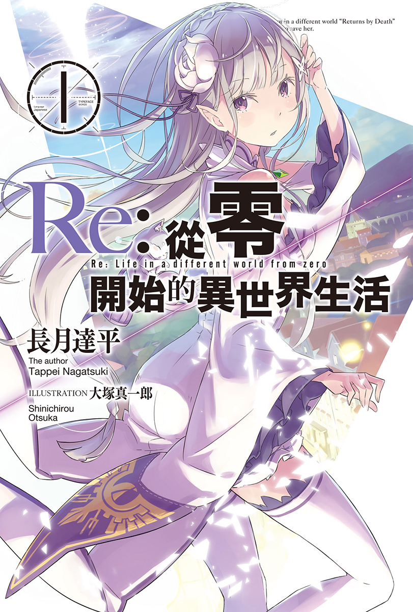
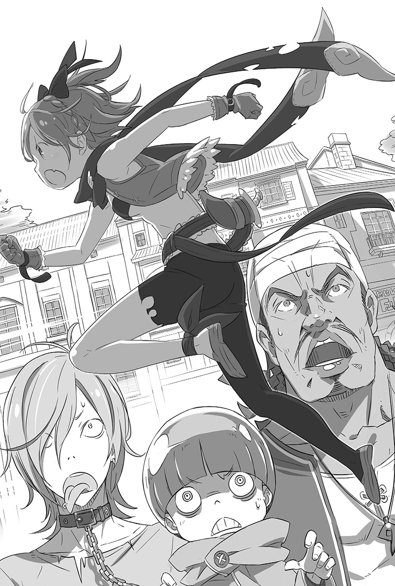
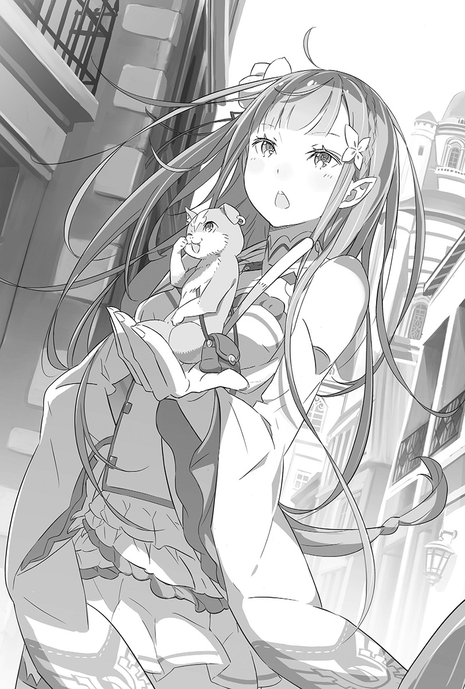
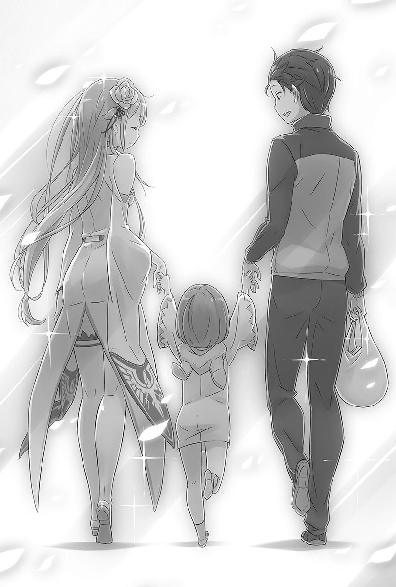
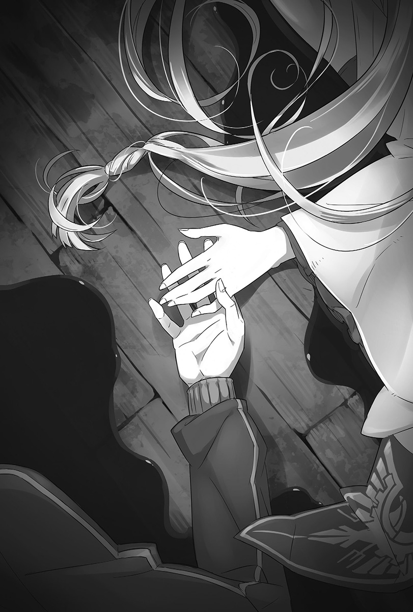
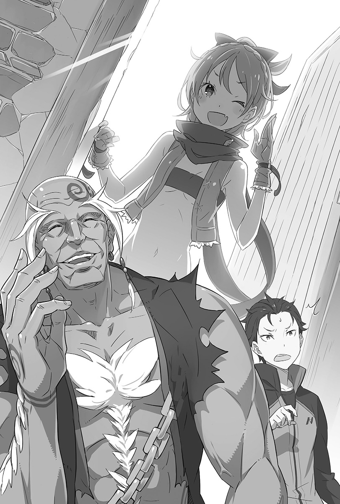
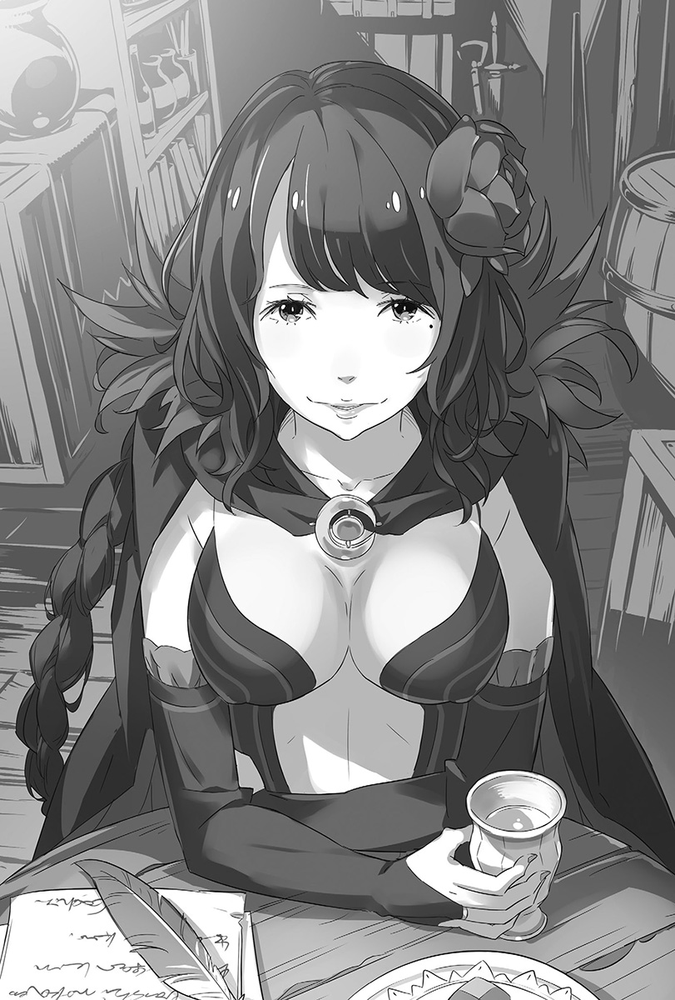
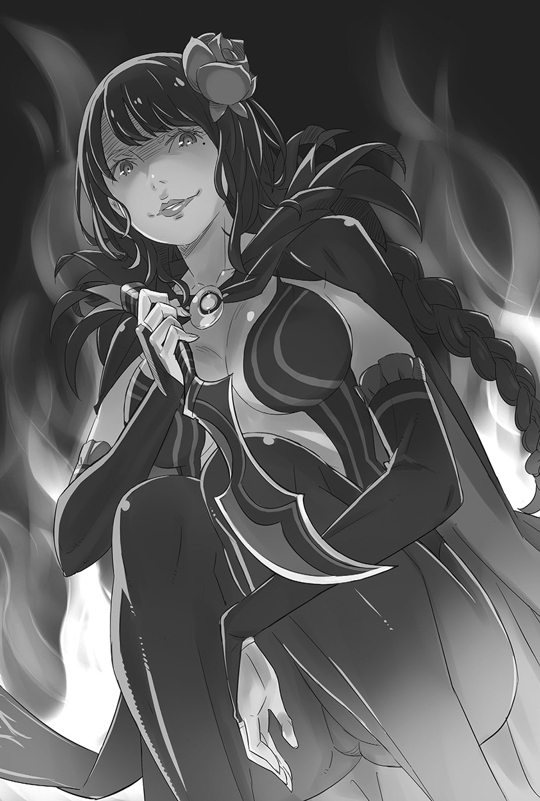
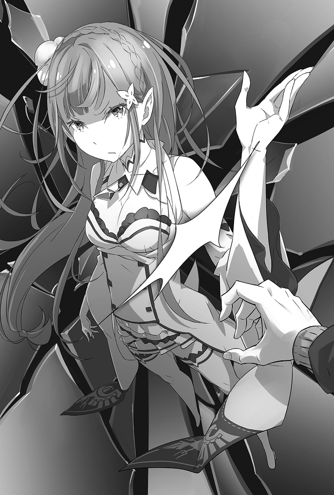

序章 『开始的余温』
——这下真的糟了。
脸部品尝到坚硬地面的触感，这才知道自己是趴倒在地。
全身使不上力，连手指都失去知觉，只有「热度」支配全身。
——好热、好热、好热、好热、好烫、好烫、好烫！
不停咳嗽，咳到视为生命之源的东西都快从喉咙涌出。咳着咳着开始咳血，嘴角漾着血泡。朦胧的视野里，只看到被染成鲜红的地面。
——啊啊，这些全都是我的血吗？
陷入体内血液流光的错觉，同时伸着颤抖的手找寻快将身体燃烧殆尽的「热度」源头。手指碰到腹部的撕裂伤时，他这才明了了。
难怪会觉得烫，原来是把「痛楚」错认为「热度」了。强烈的撕裂伤几乎把身体分为两半，只剩下一层皮勉强连在一起。
换言之，现在面临了人生的「死局」。
理解到这点的瞬间，意识急速远离。
眼前铺着鲜血地毯的地面，被黑色皮靴踩出波纹。
有人在这，而且这个人八成就是杀了自己的凶手。
然而，他却没想要拜见这个人的尊容。那种事根本就无所谓。
——唯一的期望，就是她能平安无事。
「——昴？」
宛如银铃的声音传来。听到那个嗓音，能听见那个嗓音，可说是他最大的救赎。所以——
「——呃！」
一声简短的哀嚎，鲜血地毯又迎接了某人。
倒卧的身躯就在旁边，那儿还有自己丢人现眼伸长的手臂。
无力落下的雪白之手，和自己染血的手微微交握。
微动的指头，似乎想要回握他的手。
「……你等着。」
抓住即将远去的意识尾端，硬是转头争取时间。
「我一定——」
——会救你的！
下一秒，菜月昴死亡。
第一章 『开始的结束』
1
——这下真的很糟糕。
身无分文又走投无路，他的心中被类似的字眼给埋没。
正确来说，不算是身无分文。口袋里的钱包装了他所有的财产，照理来说还是可以买一些东西。尽管如此，眼前的状况依旧只能用「身无分文」来形容。
「货币果然完全不一样啊。」
用手指弹起手中的十圆硬币——稀有的「锯齿十」，少年深深叹气。
他是个没啥特征的平凡少年。有着黑色短发，身高不高也不矮介于平均值，体格可能有锻炼过，还算有肌肉，便宜的灰色运动服穿在身上显得格外合适，唯有三角眼的锐利眼神让人有印象，但如今因眼角无力下垂而失去了霸气。
混在人群中一瞬间就会看丢的平庸外貌——但现在人们投向他的眼神，都像是看到了稀奇古怪之物。这也是当然的，毕竟放眼望去，看着少年的人群当中没有一个人是「黑发」，更别提穿着「运动服」了。
他们的头发以金色、红色、咖啡色为大宗，甚至连绿色、蓝色都有。穿着方面有人套着铠甲，有人披着像舞娘的服装，还有人全身罩着黑色袍子，夸张得可以。
暴露在不客气的视线中，少年双手环胸，同时认清了事实。
「也就是说，这就是那个吧。」
他弹响手指，指向看着自己的人群说：
「——所谓的异世界召唤。」
此时他眼前跑过一辆被巨大蜥蜴拉着跑的马车。
2
菜月昴是出生在太阳系第三行星‧地球的日本男儿，家庭也是极为普通平凡。
要大略形容他这十七年的人生，光是前文就已足够，若要补充说明的话，就是「公立高中三年级拒绝上学的学生」。
升学或就职。立于人生岔路的时候，人就必须做出决定。每个人都称这个不请自来的要求为人生，但他比其他人稍微擅长的，就是逃离讨厌的事物。结果自行放假缺课数越来越多，等到回过神时，他已经成了让双亲痛哭流涕的「惧学症学生」。
「最后还被召唤到异世界，是要我变中辍生就对了……我已经搞不清楚了啦。」
感觉像是做了一场恶梦，但不管是捏脸颊还是用头撞墙壁都不会清醒。
只能叹气的昴，离开充满好奇视线的大马路，走进一条巷子内，坐在铺有石板的地面上。
「假设我现在是在奇幻异世界中，文明方面照惯例跟中世纪很接近。观察之下是没看到机械类的道具，不过地面铺着石板又很平整，代表有一定的技术……钱当然是没办法用。」
能否和当地人沟通，以及对物品价值观的认知，这些在昴发现自己被召唤到异世界后就立刻确认过。
很幸运的语言相通，买卖交易的货币是金、银、铜币。为此还惹得一开始接触的水果店老板不高兴。
能够快速理解这种状况的原因，在于现代的日本年轻人都深受动画、游戏毒害。不过以目前来看反而很庆幸，讲到「异世界召唤」这种现象，对青春期的男生来说是一种梦想也不为过。话虽如此……
「福利措施不做好一点，像我这种无知的年轻人根本没办法过活啊。」
有鉴于目前的窘境，以及过于寒酸的初期装备，昴口吐软弱之语。
手机（快没电了），钱包（有很多录像带出租店的会员卡），在便利商店买的杯面（豚骨酱油口味），同个地方买的零食（玉米浓汤口味），爱穿的灰色运动服（还没洗），穿旧的运动鞋（鞋龄两年），就这样了。
「好歹让我拿一把王者之剑吧。这下根本就完蛋了啊，怎么办啊？」
毕竟是在便利商店买完东西后才被召唤到异世界，所以很无奈。但无奈也只有一下子。
在异世界唯一能派上用场的零食，因为肚子饿而吃掉了一半。当注意到那是宝贵的食物后，后悔于焉涌出。
拜托这只是一场夸张的整人节目。即使心存冀望，但穿越马路的蜥蜴马车和往来行人的目光，都背叛了这一丝希望。
「不管是蜥蜴还是亚人类，大家都看也不看就直接走掉，连吐嘈都没有。」
发牢骚的昴，视野中不断出现穿着奇装异服还有发色色彩缤纷的人群。然而最将他推向异世界现实的，就是亚人类的存在。
放眼望去，处处可见「犬耳」和「猫耳」，还可以瞥见长得像「蜥蜴人」的变种人。才刚这么想，就看到也有外貌特征跟自己无分轩轾的人类。
「亚人类随处都有的世界，通常都伴随着战争或冒险。先不管有没有眼熟的动物，蜥蜴会拉马车倒是变化出——不错的新功能啊。」
整理完现有信息，昴吐出比叹气还要长的一口气。要是剧情按照妄想发展的话，接下来昴应该会大展现代知识而活跃于异世界。
——不过，无法理解。
「目前的状况是走投无路，而且完全不知道被召唤的原因。我不记得有穿过镜子或掉进水池，话说回来如果我是被召唤的话，那召唤我的美少女在哪？」
异世界里不可或缺的女主角跑哪去了？在二次元的世界中，这可是不可饶恕的玩忽职守。毫无目的地把主角召唤出来又扔下不管，简直就跟始乱终弃没两样。
确认完事实和现状的昴，除了逃避现实以外别无他法。
「唉——要说的话，这跟在原本世界窝在房间里头一样嘛。」
双亲的面容掠过脑海，不过现在可没闲工夫思乡，得先想办法脱离现况。这么想的昴起身迈向大马路，这时……
「唉哟，对不起。」
正要走出巷子，昴就和刚好走进来的人影擦肩而过。他连忙向撞到的人道歉，然后侧身离开。
「——呜，好痛！」
肩膀突然被人自后方抓住，身体就这样被拖进巷子。空踩双脚回头一看，是一名块头大到能轻松把昴扔进巷弄的男子，身后还跟着两名同伴。三人移动位置，堵住了巷道内的去路。
看他们动作如此娴熟，昴有不好的预感。
「不好意思……可以请问一下你们到底想干嘛吗？」
「你好像还不了解自己的立场呢。算了，把值钱的东西交出来，省得皮肉痛。」
「啊——果然是这样啊……唉，真的是这样呢。哈哈，这下可惨了。」
投以轻蔑和嘲弄视线的男子们，年约二十岁左右，内在的卑劣完全表露在脸上。他们虽然不是亚人类，但绝非善类。
刻意安排这种日常生活常见的威胁，遭遇小混混。也就是说……
「糟糕，触发强制事件了。」
3
面对贼笑的男子们，昴跟着谄媚陪笑，同时开始思考。
虽然陷入危机，但自古以来被召唤至异世界的人，按照惯例都会发挥超乎常人的力量。既然昴被召唤的条件和多数的异世界之旅相同，那么昴极有可能具备某种特殊能力。这么一想，身体就变得轻松了起来。
「说不定这里的重力是我那个世界的十分之一。可以，我可以的！把他们全部打倒，让他们成为我光明未来的粮食，还有经验值。」
「这家伙嘀嘀咕咕地在讲些什么？」
「听不太懂他在讲啥，可是我知道他把我们当白痴。杀了他。」
「那是我的台词……你们会后悔的。喝！」
说完，昴使尽浑身力气，朝带头的大块头挥出右直拳。拳头完美地命中对方的鼻梁，然而，撞击到对方门牙的拳头却开始流血。
——这是我第一次揍人！比想象中的还要痛啊！
虽然没有余裕模拟开打的状况，不过这真的是昴第一次跟人打架。被打的男子倒在地上，昴顺势跃向另一名惊讶的男子。
画出弧形的脚掌命中男子的头部侧边，第二名对手撞向墙壁因而昏厥。
第一战的战况好到没话说，「异世界无双」在昴的心中逐渐转为确信。
「果然在这个世界的设定，我是很强的！肾上腺素分泌所以强得没话说——」
勇猛地回过头，昴弯曲身子准备揍向最后一人。
然而，却看到对方手上拿着一把亮晃晃的刀子。
昴的身体就这样双膝跪地，上半身完美地折叠起来，额头摩擦地面。
「对不起，全都是我不好，请您大人大量饶了我这条小命——！」
跪地求饶。将向对方投降的心意表现到极致，搭配最低限度的大和之心。
方才盛气凌人的态度荡然无存，还可以听到血液从全身流失的声音。昴拼死动之以情，缩小身子不断谢罪。
毕竟刀剑无情，被刺到的话就算是铁打的身躯也要谢幕，诸行无常啊。
回过神来，发现应该倒地的两人又复活了。一个按住流着鼻血的脸，一个甩甩头，全都意外的有精神。
「啊咧！？我的一击必杀只有这种程度？召唤的真理跑到哪去了？」
「一直讲些别人听不懂的话，你胆子不小嘛！」
召唤的真理完全出了岔子，昴并没有变得多强。
趴跪在地的脸被人从上方踩踏，额头撞到地面而鲜血直流。接着脸被踢了一脚，然后接二连三的暴行施加在拼命缩起来的身体上。
先动手的是昴，因此男子们毫不留情。
——糟糕，有够痛的。我可能会死，不对，是真的会死！
和原本的世界不同，小混混可没必要留自己一命。必须下定决心，在被残杀之前誓死反击——
「还会动啊，废物！」
「好痛！唉呀呀呀，我说好痛好痛好痛！」
昴原本想要爬起来，但男子踩住他的手，反握刀子。
「先把你揍到不能动再扒光你。竟然敢看扁我们……」
「要、要钱的话你们找错人了，我根本就是个穷光蛋……！」
「既然如此，拿你那稀奇的服装或鞋子也行。乖乖去当巷弄里老鼠的食物吧。」
啊，这个世界也有老鼠啊，拜托不要大到像怪物那样。
看着往下挥的刀子，昴事不关己似地逃避现实。
没看到什么走马灯，也没有世界变慢速运转的现象。
只有像是线要断掉的结束感。
——就在这时。
「给我让开让开让开！那边的家伙，真的很挡路耶！」
有人发出被逼入绝境的吶喊，冲进巷子里。
和惊愕抬头的男子们一样，昴也没有挪动身体，只是抬起视线。
一名小个子少女，摇晃着长至肩膀的金发穿过眼前。
少女有着貌似意志坚强的红色瞳孔，还有逗趣的虎牙。
给人的第一印象是骄傲，但她的长相让她微笑起来会比一般人还要可爱。
这千载难逢的好时机，点燃了昴眼中的希望之灯。
就在等这个！
一身破旧肮脏的少女，在绝佳的时间点撞见了强盗杀人的现场。
按照惯例，这名少女一定有着侠义之心，会拯救昴即将熄灭的生命——
「好像看到了很不得了的事，不过很抱歉，我现在很忙！你要坚强地活下去喔！」
「咦？什么？真的假的！？」
然而，那样的希望彻底粉碎了。
少女抬手向昴道歉，一路奔跑着穿过细巷。经过男子们身后时也完全没有停止的迹象，直接奔向巷子的尽头——接着蹬了立在死巷的木板一脚，身轻如燕地抓住墙壁，顷刻之间就消失在建筑物上方。

少女的身影消失，徒留现场一片静默。
她简直就像台风一扫而过，在场所有人全都愕然失声。
然而就事实而言，昴置身的状况依旧没有改变。
「你们都不会因为刚刚那女孩而吓到改变主意吗！？」
「都怪有人打岔害得兴致都没了。别以为你能轻松死去。」
身体依旧被男子们踩住，动弹不得。
男子手上的刀光，让逼近的「死亡」真实感涌现。
——不要不要，这是骗人的吧？怎么会？死得太简单了吧！
脸上浮现抽筋似的笑容，内心却急躁不已。哪个人快来否定这个状况啊！可是事情的发展并没有这么幸运，刀刃尖端越来越逼近。
内心被绝望笼罩，昴知道自己的泪水就快要从眼眶滑落了。
不是因为恐惧，而是就这样空荡荡地结束，让人难以忍受。
就在摒弃一切、压倒性的绝望中——
「——到此为止了，恶棍。」
那声音让人潮的喧嚣、男子的粗鄙叫骂、昴本身的紊乱呼吸全都折服，并让世界为之震撼。
4
所谓的时间停止，指的就是这样吧。
巷子入口处站着一名少女。
而且还是美少女。她及腰的银色长发做出编发造型，充满知性的蓝紫色双瞳正凝视着这里。柔和的五官兼具艳丽与稚幼，让人莫名感受到一股从高贵产生的危险魅力。
她比昴矮一个头，大约一百六十公分左右。以白色为基调的服装上没有华美的装饰，造型简单反而更衬托其存在感。唯一醒目的是她披着的长袍，上头绣着「似鹰之鸟」的图腾，增添了庄严感。
但是就连那身服装，也不过是增添少女光辉的附属品。
「你们的蛮横我看不下去了——到此为止。」
银铃的嗓音宜人地敲响耳膜，让昴忘了目前的状况，只能彻底被银发少女的存在感给压倒。同样的紧张感也传达给男子们。
「呃……你这家伙是谁呀……」
「现在我还能原谅，毕竟是我疏忽在先。所以，高尚地将偷窃之物还来吧。」
「喂，她穿的衣服好像很贵，该不会是贵族……啥？偷窃之物？」
「求你们了，那是很重要的东西。我可以放弃其他东西，就只有那个不行。拜托，请你们老实地还我。」
少女甚至用恳求的态度——
但是，弥漫现场、无法解释的压迫感却逐渐高涨。难以用言语表述的某件事正在发生。
「慢着，等一下！你根本就搞错啦！」
「……什么意思？」
男子们指向踩在脚底的昴。
「你不是要来……救这家伙？」
「……那个人的穿著打扮好奇怪。你们现在是在内讧？三对一实在不值得赞赏……但你们若是要问他和我的关系，答案只有毫不相干。」
是因为觉得话题被扯远了吗？少女的口气感觉有点不耐。她的态度让男子们变得焦急，连忙开口辩解。
「先等一下！如果目的不是这个家伙，那你找错人了！去找刚刚的小鬼！」
「你刚才说东西被偷了吧？墙壁！那个偷儿蹬着墙壁跑到屋顶上逃掉了！」
「里面里面，在巷子对面！按照那个速度，小偷应该已经跑过三条街了！」
男子们你一言我一语，少女将视线转向昴。那视线是在问男子们说的话是真是假，昴忍不住点了头。
「嗯……好像没有说谎。所以说，小偷在巷子的另一头？得赶快追上去才行。」
少女转身背对昴，朝巷子外迈步。男子们安心的表情尽显无遗。就在昴为自己又被舍弃的可悲现实发呆时——
「不过那跟这是两回事，你们的所作所为我不能放过。」
回过头的少女朝他们伸出手掌——掌心光彩飞舞，接着释放。
近似硬球击中肉块的声音响起，男子们发出哀嚎被打飞出去。
接着，昴身旁扬起一道高亢的声音，拳头大的冰块就这么落了下来。无视季节与物理现象生出的冰块，随即像被空气吞食一样消散。
「——魔法。」
嘴巴立刻就说出最适合说明方才现象的单字。
虽然没有咏唱咒语，但那确实是由她手掌所生并发射出去的。
魔法——像这样实际目击，还是第一次。
「比想象的还不奇幻……有种真实得让人失望的感觉。」
本来以为会有光芒扩散，或是能量爆炸的场面，然而实际上却是粗糙的冰块突然出现，给予物理伤害后就突然消失，毫无兴奋感可言。
「你竟然……真的出手。」
昴对魔法的感想先暂放一边，承受冰块扎实一击的男子们站了起来。
摇晃双脚站起来的只有两人，被打到要害的那个人昏倒了。不过，同伴被撂倒似乎更加激发男子们的怒气。男子们一个拿刀，另一个拿起像棍棒的钝器，进入备战状态。
「管你是魔法师还是贵族，别以为我们会原谅你。包围起来杀了她！我们两个对你一个，看你怎么赢！」
持刀男单手按住滴着鼻血的脸破口大骂，但少女对此只是闭上一只眼。
「是呢，一对二可能有点危险。」
「——那，二对二的话条件就对等啰？」
在少女的声音之后，一个中性的高昂嗓音划破巷内的空气。
昴大吃一惊，四处左右张望。男子们也连忙察看周围，但巷子的入口和巷道内都没有看到像是发出声音的人物。
结果，仿佛要展示给困惑的他们看，少女伸出左手。
手掌朝上，「那个」就在她纤细白皙的手指上。
「看你们那么期待地到处看，该怎么说呢，我好害羞喔。」
话一说完，状似害臊用肉球洗脸的它，是个只有巴掌大，用两脚站立的猫咪。
灰毛垂耳的样子，在昴的知识中和名为美国短毛猫的品种最为接近。鼻子是粉红色的，尾巴相当于身体的长度。

看到巴掌大的猫咪，持刀男一脸战栗放声大叫。
「——是、是精灵术师！」
「正确答案。现在退下的话就不追击你们。快点决定，我们赶时间。」
听到少女的话，男子们连忙扛起倒地的同伴，朝巷子外走去。经过少女身边时，他们咂嘴放话。
「我记住你的脸了，贱人。下次在这一带再看到你可就没这么简单了。」
「要是对这女孩动手，我可是会诅咒你绝子绝孙喔？只不过看这样子，你八成连后代都来不及生。」
面对小混混鼓起勇气的恐吓，小猫咪回答的口气轻松内容却很辛辣。
站在手上的猫咪态度漫不经心，却让男子们的脸色变得十分难看，这次他们默默无言地逃进人群中。
流氓的身影消失，只剩昴和少女他们在巷子里。
总之得先道谢。在意这点的昴忘却身体的疼痛，想要撑起上半身——
「——不要动。」
银发少女用不带情感的冰冷声音说。
她的眼中可以看到浓烈的警戒色彩。即使知道昴和男子们不同，但那并不构成内心松懈的理由。那个眼神就是这样判断的。
明明被人这样看待，昴的反应却完全不合常理。
看着自己的那对蓝紫色双眸，美得简直像要魅惑人心。不习惯看到美少女的昴，光是被盯着看就忍不住羞红了脸别过眼神。
看到他的举动，银发少女大胆地笑了出来。
「看吧，他自觉内疚所以不敢看我。我的判断似乎是对的。」
「是这样吗？刚刚那只是男孩子会有的反应，我感觉不到任何邪恶呢。」
「帕克你闭嘴。你认识从我这偷走徽章的女孩吧？」
少女叫小猫安静，对昴提出质问。自信满满的表情也很可爱，可是……
「抱歉让你有所期待，但我完全不认识。」
「咦，讨厌，真的吗！？」
自信的表情从脸部卸下，少女露出不加遮掩的原始面貌。
方才的凛然态度消失无踪，她惊慌失措地看向手掌上的猫咪。
「怎、怎、怎么办？我们该不会只是在浪费时间吧……？」
「就这状态来看，犯人每分每秒都在移动，我觉得快点跟过去比较好喔。逃跑的速度快得这么夸张，犯人一定有什么奇怪的加持。」
「哼，帕克讲得事不关己的样子。」
「说我出手出嘴都没用的人可是你耶。还有，那小子要怎么办？」
像是终于想起来似的，看话题的焦点又回到自己身上，昴露出苦笑。「啊！」少女则是好不容易才想起昴的存在。
昴故作没事地站起身。
「承蒙搭救，非常感谢。你们很赶时间吧？快点去追比较好。」
——要不然让我帮个忙如何，小姐？
虽然想在边梳头发边让牙齿反射光芒的同时这么说，但是——
「唉呀？」
脑袋突然一沉，想要靠着墙壁的手挥空，脸部就这样直接撞击地面。
「啊——不要勉强站起来啦——我太慢说了。」
小猫的警告迟来一步。在毫无防备的姿态下倒地，结果锐利的痛楚将昴的意识带到远方。
「——这下怎么办？」
「跟我们无关吧。死不了啦，放着不管就好了。」
在意识开始远离的那一头，可以听见他们些微的对话。
不愧是奇幻异世界，在人情世故上也有着如此严苛的见解。
我会就这样被丢在巷子里吗？这样的负面思考出现。
唉哟，只是快死而已，光是小命还在就要感恩知足了。正面思考也随之冒出头。
得到这两种结论的同时，昴的意识越来越远——
「真的吗——？」
「真的！」
在意识断绝的瞬间，他看到银发少女红着脸回过头。
「——我绝对、绝对不会帮他的！」
——连生气的脸都可爱到爆，奇幻异世界万岁！
冒出最后的感想后，这次昴的意识真的落入黑暗中。
5
从沉眠中苏醒的滋味，跟脸探出水面的感觉很像。昴心想。
一睁开眼阳光就烧灼瞳孔，目眩之下只能皱着脸揉眼睛。昴的体质是一旦睡醒就会很干脆地起床，是只要醒过来意识立刻就会清醒的类型。
「啊，你醒了？」
声音从正上方，也就是从躺着的昴头上传下来。
他想把脸转向声音来源，却发现自己的身体虽然躺在地上，但脑袋却枕在柔软的东西上。
「你还不能动。因为你的头被打到，还不能放心。」
关心自己身体状况的声音很温柔，昴想起快要失去意识前的事，然后联想到目前的发展对男孩子来说是天赐的恩惠。
膝枕——顺从天启，昴佯装翻身尽情享受。利用圆周运动让脸颊得到至高无上的幸福触感，然而比想象中还要浓密的蓬毛把脸推回来。
「呼——美少女的毛比我想象得还要多……这怎么可能啊！」
边吐嘈边看向上方，这次恢复的视力清晰地映照出世界。
昴的眼前，在他上下颠倒的视野中，有一张巨大无比的猫脸。
「想说机会难得，在你醒过来之前稍微让你沉浸在幸福中的。」
「总之，不要再用假音说话。把猫和女主角搞混这种事是不可能发生的。」
现下的状况是，自己睡在跟人类一样大的猫咪腿上。但毕竟机会难得，昴决定用脸颊享受那毛茸茸的毛皮。
「糟糕，太幸福了。这种喜悦感是什么？我能理解把猫摸到秃毛的心情。」
「讨厌～能让你这么开心的话，也不枉我刻意变大了。对吧？」
巨大猫咪害臊地抓头，然后眨眼寻求认同。在它视线前方，站在巷子入口的是一脸假正经、双手抱胸的银发少女。
毫无疑问就是昴在失去意识之前，深刻烙印在他记忆、双眼和男儿心上的少女。
面对昴的清醒和同伴的使眼色，少女轻声吐气朝这里走来。
「那个，真不好意思，结果还让你们照料我到醒过来……」
「不要误会了，我们是有事想问你才无可奈何地留下来的。要不是这样的话，早就丢下你走了。就是这样，可别搞错了。」
美少女再三强调，用强烈的语气这么说。对美少女没有抵抗力的昴根本无从较量，对他来说，那番话具有让他无视内容只能点头的强制力。
「我会治疗你身上的伤，还让你躺在帕克腿上直到清醒，都只是为了我的一己之私，所以你可要好好回报这些恩情。」
「其实不必特地演出要别人报答的戏码，用平常的方式拜托就行了吧？」
少女简直就是在执行「好心有好报」的论调。
面对昴的回答，少女严肃地摇头。
「不行，要是单方面的命令。你知道我被偷走的徽章下落吧？」
少女降低音调这么问。因为对内容有印象，所以昴不得不细细思索。
在他昏过去前，记得也有过同样的对话。所谓的徽章，是指律师或法官那种可以彰显身分的胸章吗？实在是没有印象。
「我失去意识的期间，有人用力敲我脑袋吗？」
「已经被打得够惨了，没人打你啦。比起那个，你的答案呢？」
「没有。那样的话，我完全没印象呢。」
不知道的事就说不知道。昴的答案和方才没有任何差别。
不过少女没有露出失望的样子，对他点头说道。
「这样啊，那就没办法了。不过，因为你告诉了我你什么都不知道的情报，所以抵销了治疗你伤势的恩情。」
她用连诈欺犯都会吓到的论点，表明自己完全没赚头的损失。
扔下目瞪口呆的昴，少女用力敲手振奋精神。
「那么，我们赶时间先走了。你的伤应该大致都痊愈了，另外因为有狠狠地威胁过，我想那些人不会再来找你麻烦才对，不过一个人进到这种没有人的巷子是很危险的。啊，我这可不是担心，是忠告。下次就算你又遇到同样的情况，救你的我也没有好处，所以别再期待我会伸出援手。」
少女连珠炮似的，叽叽喳喳快嘴说个没完。然后她将昴沉默不语的态度视为认同，很满意地点头说了声：「好！」随后转身。
长长的银发配合少女的动作摇晃，在昏暗的巷子内闪耀着奇幻的光芒。
在他看呆的时候，头底下的毛皮触感突然离去，昴连忙撑起上半身。
「对不起喔，我家的孩子就是不老实，不要觉得她很奇怪喔。」
用含笑的口气补充说明，猫咪恢复原本的身型坐上少女的肩膀。少女的手像在确认触感一样抚摸它的背，接着猫咪的身影便像钻进银发中消失不见了。
少女看都不看昴一眼，飒爽地迈出步伐。目送她的背影时，昴思考着那只小猫说的不老实的少女，她一举一动背后的意图。
东西被人偷了，明明很急却还是出手帮助昴。治疗受伤倒地的他，刚刚甚至还说了让昴不会感到内疚的话，虽然方式很笨拙。
那已经不是不老实的等级，根本是一味吃亏到惨不忍睹的地步。
少女大可指责妨碍自己目的的昴，然而她却完全没有抱怨，也没有要求昴道歉或是感谢。
为什么呢？因为对她来说，帮助昴完全符合她自我本位的计划。
「那种生存方式，根本就只会吃亏啊。」
昴边说边站起来，拍拍身上被灰尘弄脏的运动服然后冲过去。
心爱运动服上的脏污很醒目，但底下的肉体却几乎感受不到痛楚。明明被揍被踹得很惨，这让他再次确切感受到魔法的不符常规。
以及她卖了这么大的恩情，却不索求回报的奇特。
「——喂，等一下！」
朝站在巷子入口，面向大马路犹豫不知该往哪走的背影大喊。手抚着银色长发的少女回过头，表情显得有点困惑。
「干嘛？我先声明，我只能再稍微陪你一下子。」
「你蛮天真的耶！？比起我，你不是要找重要的东西吗？让我也来帮忙吧。」
对于昴的提议，少女惊讶地眨眼。
「可是，你不是说你什么都不知道……」
「小偷的名字、底细还有所在之处我确实都不知道，但至少我认得她的样子！她有虎牙和一头醒目的金发，个子比你矮，胸部也很平，应该小你两、三岁！这些情报如何？」
摊牌时说话会快到连自己都不知道在说什么，这是昴的坏习惯。
这次也因为快嘴全力发挥，气氛因自己的发言一下子尴尬了起来。
沉默叫人痛苦烦闷，冷汗把背部弄得湿湿黏黏的，腋下和手上的汗水搞得整只手臂怪不舒服。因为心悸和气喘感觉贫血晕眩，鼻塞和偏头痛像是花粉症发作，简直就是四面楚歌，但是——
「——你这人真奇怪。」
手遮嘴角，少女用看着珍禽异兽的表情侧头看向他。
她的手指就这样按着嘴唇，紧盯着昴像是在估价打量。
「事先声明，我可没办法给你谢礼。如你所见，我身无分文。」
「放心吧，我也是身无分文的穷光蛋啊。」
「顺带一提，本大爷也很穷困。真惨啊，我们这个穷人集团。」
刻意无视在银发里直接开口打岔的猫咪，昴拍打自己的胸膛。
「我不需要谢礼。是我想要道谢，所以请让我帮忙。」
「我不需要你的道谢。你要是在意治疗伤势那件事，我已经收到等价的报酬了。」
少女不肯退让。
面对她如此顽固的态度，昴露出苦笑，用「既然如此」当开场白。
「我也是为了我自己才帮助你。我的目的是那个……对，日行一善！」
「日行一善？」
「没错，就是一天做一件好事，如此一来死后就能上天堂。那儿有吃饱睡睡饱吃的优渥生活在等着我，所以我是为了自己的私欲才帮你的。」
连自己都不知道自己在说什么了，但至少有把想说的话说出口。
昴下定决心的表情让少女陷入思索，但坐在她肩膀上的小猫用肉球轻柔地戳她的脸颊。
「我没感觉到恶意，就老实地接受如何？毕竟王都这么大，要在毫无头绪和线索的情况下寻找太乱来了。」
「可是，要是害他被卷入这种事……」
「固执己见的你我也觉得很可爱，但要是因为固执己见而迷失目的就太愚蠢了。我可不希望我的女儿是个笨蛋。」
虽然小猫替昴说话，但少女还是不改退缩的态度。不过，小猫突然收敛神情，改用认真的声音说：
「还有，太阳要下山了，入夜后我就不能帮你，要是遇到暴徒我还不担心……但挡武器的人越多越好吧。」
「感觉好像被丢了一个危险的职务啊！那是什么意思？听你刚刚说的话，你的雇用条件是入夜就要收工？」
缩短一步距离的同时，昴对小猫提问。猫咪用前脚弹了一下自己的胡须说道：
「应该说是出不来吧。别看我外表这么可爱，本大爷好歹是精灵，光是现身就得消耗大量的玛那，所以晚上我会回到寄宿的结晶石里，储备太阳出来期间的能量。理想状况来说，我能出现的时间平均是早上九点到下午五点。」
「朝九晚五的工作时间，简直就像公务员……精灵连雇用型态都意外严苛啊……」
可以自然地闲聊与精灵相关的话题，都是多亏深受动画和游戏荼毒的现代御宅族解读力。国家的变态性也在这方面助了一臂之力。
在昴和小猫的对话成立之际，身旁的少女依旧烦恼不已。不过方才的对谈似乎让抉择的天秤开始摇晃，让她不时发出「啊呜——」、「不行不行」、「可是……」等各种苦恼用语。
「——我真的没办法给你谢礼喔。」
最后她这么说，接受了昴的要求。
6
在异世界第一次进行的友好交流——在那样温暖心灵的互动之后大约过了一个小时。
「——等一下，这是怎样？」
搜查很顺利地停滞不前。
沐浴在少女冰冷的视线中，昴抓抓头试图将尴尬蒙混过去。
「没想到会遭遇这种艰难事件，就算有我精明的双眼也无法看穿……」
「你对自己的评价似乎很高，不过却没带来相应的成果。真是的，这下根本就是一筹莫展了。」
「最近都没听到『一筹莫展』这种成语了呢……」
被吐嘈的少女恶狠狠地瞪过来，感受到视线的昴把身子缩得更小。
尽管花了将近一小时搜索，但一行人不知为何还是待在巷子内。这当然有很深层的理由。他们发觉几个问题点使得事态毫无进展。
首先是，没有地缘关系。
关于这点，自己刚被召唤到异世界所以还情有可原，但少女似乎也对这一带的地理十分生疏，以为组成队伍后队友一定会详知接下来的路线，结果却白白浪费了十来分钟，简直就是个笑话。虽然少女盯着昴的眼神完全没有笑意。
然后第二点，就是这个世界的文字——昴完全看不懂。
语言可以沟通所以就疏忽了，但仔细看看周围，就会发现到处都有像是手写的象形文字。只要不是「巷子内流行的除魔咒语」，那八成是这个世界的标准通用文字吧。现在的昴连路标都看不懂。
也就是说召唤故事的惯例，「不知为何语言和文字可以相通」这点，只有语言适用。要是连语言都不通就真的只能死在路边了，所以也不能说倒霉。
「话虽如此，难易度无意义地高到爆表了吧……这世界还真不好混。」
别说尽善尽美了，只看到漏洞百出、粗糙草率的事前准备。
天哪，回顾来到这里之后的足迹，都没发生什么好事，昴忍不住感叹。对他毫不理睬，同行的少女倚墙而立闭着眼睛。看到她小小的嘴唇蠕动像在说话，昴侧头思考着。
「她在干什么啊……」
「那个啊——是在跟微精灵说话啦。」
灰色小猫突然出现在眼前这么说，昴惊愕地挑起眉头。
「刚刚没看到你，还以为你已经回家休息了咧。」
「离休息还有点时间。我跟那边的微精灵不同，可是有在好好工作的哟。」
「职业意识这么高真是帅翻了……你刚才说的微精灵是啥？」
以字面上的意思来说，应该是比精灵次一等吧。
像要印证昴的想象，小猫飘在空中摇晃长长的尾巴。
「所谓的微精灵，指的就是在成为精灵之前，开始有智慧的存在。他们再过一阵子就会萌生出力量和自我意识，成为像我这样的精灵。」
昴边点头边听取说明，接着看到少女周围逐渐浮现出淡淡的朦胧光芒。宛如萤火虫、如梦似幻的光点开始包围银发少女。
令人不禁迟疑这是否为人手可触及的光景。在超自然的存在中，唯有被允许者方能置身于此圣域。见到这样的景象，昴他——
「好厉害喔，这个。这些轻飘飘的东西全都是精灵？」
「——呀！」
昴直接侵入圣域，破坏那如梦境的幻想景致和少女说话。
惊吓出声的少女眼中反射性地泛出泪水，泪珠闪闪发光。接着包围她的光芒也感染了这股不安。
「喔——恐慌起来了呢。」
多数的光芒左右摇晃，貌似在惊慌闪躲，不一会儿就像雾气散掉一样，融入空气之中。
「——啊。」
两人同时张着嘴巴，寻找消失的微精灵的身影。然而，即使慌张的少女做出跟先前一样的步骤，他们却没有响应她的呼唤。
「啊——不见了啦！怎么办！？」
「呜哇——对不起！我是第一次看到精灵，所以有点兴奋过头了。看起来似乎不危险，就忍不住接近了。」
「因为在我的控制之下所以才安全。要是对不成熟的精灵术师做刚刚那样的举动，下场会很惨。最糟糕的情况，会导致精灵失控……碰咚一声爆炸喔。」
「碰咚？」
少女想告诫举止轻率的昴，但说出口的恐吓却是「碰咚」。
「太夸张了啦。微精灵看起来闪闪发光很漂亮，真有那么危险吗？」
「这个嘛，虽说本大爷我就是那么可爱……不过只要两秒就能把你化为粉尘喔。」
「精灵好可怕——！！」
竟然悠哉地说出抹杀他人存在的宣言。颤抖的昴看向少女。
「那要是你生气起来，唆使那只猫咪下手的话……」
「我才不会为了那种事就使唤帕克。要诉诸暴力的话我会自己动手……不行，好像真的不回应了。」
再次尝试与微精灵连接，但却以失败收场。沮丧的少女无力地摇头。
「我本来想在那些精灵消失后再问的，你刚刚是要干什么？」
「想问问看他们有没有我要找的东西的线索，只不过在问出来之前就消失了。」
「呜咦！？」
自己犯下的过失超乎想象，昴顿时语塞。看到他那样的少女发出「啊」的一声。
「不、不过都过一段时间了，微精灵们并不像成形的精灵有清晰的意识，所以我也没有很期待……这么说其实是骗人的。」
直爽的个性作怪，原本是想减轻昴的罪恶感，但最后却坦白自己的心情。少女的懊恼让昴再次意识到自己的愚蠢。继续这样下去，自己自始至终都只会扯少女的后腿。
「在道义恩情上，还有在异世界的贵重情谊上，这样的状况都是不应该的。这份关系，我说什么都想紧紧把握不想松手……！」
「看你一脸心术不正的表情，是想到什么了吧？说起来……」
少女刻意在擅自下定决心的昴面前走动。见她微微皱起眉头，昴感到有些不解，但灰色猫咪却推敲出她的思绪。
「对了，这么说来还不知道你的名字。要不先自我介绍？」
「喔，这么说也是。那么，就由我先报上姓名吧！」
为了掩饰失态，昴佯装精神百倍，指着天空摆出POSE。
「我叫做菜月昴，是无知愚昧又天下不灭的穷光蛋！请多指教！」
「光听就知道你已经山穷水尽了。嗯，我是帕克，请多指教——」
帕克身体飞起来，朝昴伸出的友谊之手来个动态性握手。从旁人的眼光来看，昴简直像要把帕克给握烂了。他那大胆的待人接物手法让少女看得不停眨眼。
「能这么轻松和精灵交流的人还真少见……少见的还有你的名字，以及你的黑发黑瞳。你是打哪来的？」
「哼，我就想总有一天会被问到。照惯例来说，我是来自东方的一个小国！」
讲到异世界就会有被用到烂的惯例，像是隐藏在世界东方的黄金之国。
鲜少与他国交流，只要听到对方是从那里来的任何人都能接受。这个惯例就像魔法一样方便，但是……
「从大陆地图来看，露格尼卡已经是最东边的国家了……没有比这个极东之国位于更东边的国家了。」
「不会吧，真的假的！？极东之国！？那这里就是人人憧憬的黄金国度！？」
「不知道自己现在身在何处，身上也没钱，又看不懂文字，也没有可以依赖的人。这个人的状态说不定比我还危险……」
预料之外的发展令昴愕然，少女的态度也跟着慌张不安起来。
少女好管闲事的个性，从她的行动中一一透露出来。对昴那与其说是毫无防备，不如说是根本没有防御力的生活方式感到忧心不已。
她再次由上而下将昴打量得仔仔细细。
「仔细一看，你身体似乎有在锻炼。你说你……叫昴。」
「嗯？喔，YES，那是我的名字。」
听到有人犹豫地呼唤自己的名字，昴不知为何产生了新鲜的感动。当他回答之后，为了掩饰自己的紧张所以轻声咳嗽，接着轻轻展示手臂上的肌肉。
「我每天都会锻炼肌肉。毕竟我算半个家里蹲，所以至少要做到这种程度。」
「那个，我不是很清楚家里蹲是什么意思，不过昴的家世很显赫吧？是不是有学过武术？」
「不，我生在极其普通的中产阶级家庭……我出生名流是哪来的情报？我有流露出家世高贵的优雅气质吗？」
「有流露出一点令人好奇的感觉。」
说得太赞啦！昴高举双手，做出滑稽的举动。
少女迅速抓住昴举起的双手。在毫无预期下被女孩子碰到手，昴的喉咙只挤得出「啊呜」两个字。
「这个手指也是，不过肌肤和头发的外观也是理由之一。这双手和庶民每天讨生活的手差太多了，肌肉的紧实法也不像是因为工作而有的。」
手掌被人又揉又捏，昴面红耳赤地接受对方的举动。不能单用外国人解释的外观话题，让昴不得不感叹她的观察力。这段期间，少女继续说下去。
「黑发黑瞳，是南方流民常见的特征，不过在露格尼卡的话，这种状态是过着上流生活的证据。这件没看过的衣服做工也很细……怎么样，我猜对了吧？」
眼见昴沉默不语，少女露出像在夸耀的微笑。被那与外表相称的妖艳气质吸引，昴咀嚼着话语的内容，露出严肃的表情。
「这不是说对或不对的问题，我该怎么说才不会伤到你？」
「不对就直接说不对呀，反正我又不会觉得丢脸！」
少女方才充满自信的脸蛋因害羞而一片通红。望着消沉的她，昴烦恼着要如何说明自己的来历。
老实跟她说「我是被召唤到异世界的饭桶」也行，但做出这种发言的人铁定会被认为是「脑袋有问题」。
回顾至今以来自己的发言，诚实以对的风险困扰着他。
「你不用想那么多啦，不想说的话我不会追究的。」
相较于支支吾吾的昴，少女率先放缓追问的攻势，再次被袒护的悲惨使昴皱起眉头，此时少女低声呢喃着。
「不过，我可能太紧迫盯人了。」
从未表露过的软弱声音，让那双瞳眸蒙上阴影。
「——」
看到她隐藏不住的泄气，昴的心里点起微弱且靠不住的火焰。
「我是笨蛋吗？不，我就是笨蛋，我到底在干什么啊……」
眼前的少女对自己有救命之恩，就是为了回报她才主动要求帮忙的不是吗？然而，从刚刚到现在自己都是什么样子？
「昴？」
看到表情改变陷入沉默的昴，少女狐疑地看着他。侧眼看到她银色的头发随着动作从肩膀滑下，昴绞尽脑汁思索直到头晕目眩。
回想自己在巷子里被踹的时候仰头看见的小偷身影，他撷取那一瞬间的景色，得从中找出一个可以用的信息才行——
「我有几件事想确认一下，可以吗？」
「咦？嗯……给你问。」
「谢啦。我听到好几次，这里是王都……叫什么都没差，反正这里是国王城堡所在的城镇，而且超级大的对吧？」
偶然忆起少女曾说过的单字，昴提出疑问。即使觉得问话的内容很奇怪，但她没有追问只是点头响应「是啊」。
「在这么大的都市里，有个干偷窃勾当为生的女孩子，从服装看来绝不是过着优渥的生活……虽然这番推论是理所当然，但应该有那些偷窃为生的人居住的地方。」
「…………」
「应该会有治安很差，或是像贫民窟的地方吧？要把偷来的东西换成钱，没有门路是很难脱手的，所以这种可能性很高吧。」
烙印在记忆中的小偷少女——将她从头到脚巨细靡遗地分析，昴动员自身所有的奇幻世界知识，推论出这个论点。
「综合以上所述，我认为比起像无头苍蝇一样乱窜乱找，去那些地方找到的机率比较高……你觉得呢？」
「我有点吓到了，你脑袋动得很快嘛。」
「没有啦，这可以说是理论上的归结或是中世纪奇幻世界的惯例。就算这样能让你对我另眼相看，但离弥补失分还早得很……」
昴响应少女感到佩服的发言，但没有非常高兴。
不管在一旁抓头掩饰害臊的昴，少女不停地点头。
「就照这条线去想吧。既然如此，我们得到马路上去问对这里比较熟悉的人了。」
「本来就是顺路了，快走吧。」
他们互看一眼，确认彼此想法相同后，决定先离开巷子到大马路上。接着朝人多的地方走，但在那之前，昴突然想到一件事。
「话说回来，我听过你养的猫的名字了，但还没听到你的名字呢。」
发言时已经刻意削减自己对她姓名的兴趣，但少女似乎还是有点惊讶而瞪大了眼睛。接着她闭上眼，在沉默数秒之后……
「——莎缇拉。」
「喔？」
因对方沉默而咒骂自己讲话不经大脑的昴，迟了一步才回应她那小声的嘀咕。听到他响应的少女，转过脸不看昴。
「我没有姓氏，叫我莎缇拉就好。」
声音听起来毫无感情。明明自报名字，却又展现出拒绝被人如此称呼的态度。
莎缇拉——这么自称的少女，展露出先前未曾见过的距离感。
可以的话，希望她能告诉自己好称呼的姓氏，但她这样让昴不敢直呼她的名字，只能沉默以对。最后他懦弱地决定，总之就用第二人称叫她吧。
看着两人的互动，藏身在银发中的帕克突然冒出一句：
「——真是没趣。」
但这声嘟囔不只是昴，就连少女也没听到。
7
随着喧闹声穿过无人走动的巷子，两人抵达大马路时已经过了十分钟。
东张西望左右巡视，昴犹豫着该找谁来问。这时，站在身旁的莎缇拉突然拉拉他的袖子。
「欸，昴。」
看向莎缇拉的昴，发现她正看着马路对面。顺着视线看过去，昴也注意到她在看什么。
——有不好的预感。
像要印证昴的预感，莎缇拉一脸认真地说。
「——不觉得那孩子是迷路了吗？」
发觉到几个问题点，其中最后的一个探出头来。
「啊……」
虽然在事态发展至此的过程中就已经知道，站在昴身旁的银发美少女是个无可救药的滥好人。
简直就像是中了魔咒，只是本人顽固地不承认罢了。
昴大声地叹气。
「冷静点。」
「在我们说这些话的期间，那孩子要是乱跑到别的地方该怎么办？得快点叫住她……」
「你的温柔是天大的美德，被你拯救过的我不想说得太过分，但你知道我们目前的状况吗？」
视线的前方，马路对面的建筑物旁站着一名女童，年龄大约十岁左右，与肩膀齐平的咖啡色头发看起来惹人怜爱。她有着笑起来能将喜悦分送给周遭人们的可爱脸庞，然而现在她的眼中却充满不安，一副快哭出来的样子糟蹋了那张脸蛋。
莎缇拉的看法十之八九是正确的，但就算正确……
「因为我的愚蠢，偷了你东西的小偷现在离我们非常遥远。这个时候若是花时间在别的事情上，东西有可能会被卖掉再也找不回来喔。」
「是有可能那样没错……可是……」
「所以啰。」
那个小孩确实很可怜，但这里人这么多，很可能会有其他人出手帮助。另一方面，他们正在迫切地找寻失物。
不管怎么想，都是丢下女童找失物优先。然而……
「可是那孩子正在哭。对吧，昴？」
「————」
「要是不能配合我也没关系。昴，谢谢你陪我到这里，之后我会自己试着想办法的……不管怎样我都不能放着那孩子不管。」
看到昴闭口不语，莎缇拉似乎决定和他分道扬镳。
她的说法与其说是厌弃不照自己主张走的昴，更像是为了不让昴顺从自己的任性才这么说。
银发晃动，莎缇拉小跑步穿过马路接近女童。看着地面快哭出来的女孩，突然发现有人站在自己面前因而抬起头。她的眼中洋溢着希望的色彩，或许是以为她在寻找的人发现了自己。
「不好意思，我不是你要找的人。」
莎缇拉蹲下来对女童这么说。女童惊讶地瞪大眼睛，双眸浮现的不是安心，而是胆怯。旁人一看也知道，被陌生人搭讪让她的内心惊惧不已。
「我可能有点多管闲事，不过你的爸爸妈妈呢？他们没跟你在一起吗？」
莎缇拉似乎也注意到女童在害怕，所以声音比先前还要柔和。可是她的关怀并没有传达给因为失去保护者而害怕颤抖的幼童。
「那个，我说，别哭啰。大姊姊没对你做什么啊。」
尽管她试图解开女童紧闭的心房，但胆小的幼童只是一直摇头，接着眼眶开始蓄积大颗大颗的泪珠，泪水即将溃堤泛滥——
「我现在放在手上的——是一枚锯齿十喔。」
「啊？」
突如其来的打岔，使莎缇拉愣住失声。抬起视线，她身旁站着一名穿着灰色运动服的少年。
她的反应让昴不禁苦笑，但他接着面带笑容，不是对她，而是对着女童。跟莎缇拉一样，突然闯到面前的人让女童感到惊讶。昴突然朝女童伸出右手。
「你看，这只右手上放着一枚硬币对不对？有看到喔。好，那么接下来我要用力把硬币捏烂。喝啊啊啊，嘿咻！」
「等等，昴……你在干嘛？」
「结果呢，唉呀，太神奇了！」
不理睬莎缇拉的呼唤，昴张开原本握住锯齿十的右拳，结果里头的十圆硬币竟然不见了。
「怎么会这样，刚刚还在手里的硬币竟然消失了。硬币到底跑到哪去了呢？」
女童眨着眼睛，再三检视昴的右手。可是，不管是掌心还是手背都没有硬币。女童的反应不错，昴满意地点头。这次他轻轻伸出左手，温柔地抚摸女童咖啡色的头发。
「你看，躲起来的硬币竟然在这里喔。」
抚摸头发的左手手指正夹着硬币，看到这一幕的女童不禁感到惊叹，莎缇拉也被这戏法唬得瞪大眼睛。在她们面前优雅地一鞠躬后，昴将手中的锯齿十放在女童手中。
「这是礼物，送给你。这很贵重，所以要好好保管喔。」
慎重地抱着硬币，女童用力点头回应。微笑看着她的昴，侧腹部突然被旁边的人戳了一下。
「等一下，昴……」
「好啦好啦，不要用那么严厉的目光瞪我，我承认刚刚我说话的方式不好……」
「你刚刚那是怎么弄的？」
「啊？那个？你不是要问我这么做的用意而是在问我技法？」
和兴致勃勃的莎缇拉订下之后会教她的约定后，昴再次面向女童。女童将十圆硬币当成珍贵物品盯着看，不安的心情似乎都因为刚刚的魔术而稳定下来，面对弯腰问话的昴也有问必答。
「原来如此，你果然是和妈妈走散了。什么嘛，不要紧，交给大哥哥和大姊姊，我们马上就会帮你找到妈妈。」
昴再次摸摸她的头然后伸出手，女童畏畏缩缩地牵住他。看到这一幕，莎缇拉睁圆了双眼。
「你的手法好熟练。昴，你是从事安抚小孩的工作吗？」
「这样断章取义会害我的名声下降啦！还有我是无业游民。」
正确来说，自己有个名为「学生」的方便身分，但考虑到最近都不上学那样讲会很奇怪，再加上现在被召唤到异世界，那个身分等同是被剥夺了。
不管怎样……
「可以牵一下寂寞不安的小女孩的手吗，大姊姊？」
昴对她眨了眨眼，矫揉造作地说。女童将空着的手伸向莎缇拉。莎缇拉屏息露出惊讶的表情，但也只有一下，她轻轻地呼出一口气牵起那只小手。
「嗯，就交给大姊姊吧，我绝对会帮你找到妈妈的。」
女童面露微笑，默默点头。两人一左一右，牵着小孩的手踏出步伐，挤进马路混杂的人潮中。
「像这样子，不知情的人看到会不会以为我们是年轻夫妻带着小孩出门？好害羞喔！」
「……？就算用偏袒的角度来看，昴和这小孩看起来只像是兄妹啊……」
「我分不出来你那意见算是理智还是天然啦！」
夹在这样的对话中，双手被牵着的女童轻声笑了出来。

8
很幸运的，由于两人外表很显眼，所以没多久就找到了迷路女孩的母亲。以状况来说不只是昴，一头银发美貌异常的莎缇拉也一样引人注目。
「真的非常感谢两位。」
平安无事和小孩会合的母亲开心不已，不断地朝笑着说没什么大不了的两人道谢。
离开时女童一直朝他们挥手，也朝女童挥手直到看不见为止的昴，看向身旁的莎缇拉。她目送母女离去的表情看来十分愉快。
「然后呢？虽然觉得绕了很大一圈，不过在这方面大姊姊主张有它的好处，请问是什么呢？」
弹响手指，昴如此揶揄少女的滥好人个性。话虽如此，这话听起来不是惹人厌，而是半开玩笑。莎缇拉帮助昴的时候就是讲着拐弯抹角的话，因此还蛮期待她会怎么回答。
「……很简单啊。」
在挖坑给自己跳的昴面前，莎缇拉面容一缓地说：
「这样一来，我们就能心情开朗地继续找东西了吧？」
「…………」
「就算找回徽章，事后一定也会后悔为什么放着那孩子不管。帮助了那孩子，又平安无事找回徽章……你看，这不是最好的吗？」
没有逞强也没有心虚，莎缇拉神清气爽地这么说。
听她这么讲，昴只能举双手投降，然后重新改变想法。
这名少女不仅是损己利人的好好小姐，还是个鱼与熊掌都想兼得的理想家。
「没错，你说得对。确实，多亏你这妙招，我们不用说『虽然舍弃迷路后不安寂寞到快哭出来的小女孩，可是徽章平安无事拿回来就可以额手称庆』这种话了！」
「什么嘛，那种讨人厌的讲法。」
昴极端的说法惹得莎缇拉嘴唇扭曲，然后像是想起什么似地瞪向他。
「不说那个了……你为什么帮忙？原本你是反对的不是吗？」
「因为我想露一手——骗你的啦。我说过了吧？帮你找到徽章，我就能因为日行一善而上天堂。」
「那你帮助那个女孩，不就算一件善事了吗？」
「理论太过正确所以驳回！不是，你想想看嘛，一天不是可以做很多件善事吗？所以我可以先提前做完明天的份！我是想先把这个礼拜的份给完成！」
早就已经偏离日行一善原本的意义啦，不过昴还是硬掰出一个道理。莎缇拉对这样的昴露出不可置信的表情。
「昴你啊……个性真的很吃亏耶。」
「其他人就算了，就唯独不想被你这么说啊！」
虽然想把那句话原封不动地回给她，但莎缇拉却傻楞楞地歪头看着自己。她似乎真的没有自觉。
「你这孩子人是不坏啦……」
「慢着慢着，干嘛把我当小弟弟。东方人因为娃娃脸而被误认为年纪小是很常有的情况，可是我跟你应该没差那么多岁吧？」
大致看来，昴推测莎缇拉大概十七、八岁左右。对年头出生十七岁的昴来说，是有可能比她小。
但是，莎缇拉对这番话的反应是稍微眯起蓝紫色的眼睛。
「你的猜想落空了，因为……我是半妖精。」
「————」
昴不禁哑然无语陷入沉默。看到他那样的莎缇拉，双眸掠过复杂的感情。她眼中浮现的，是混杂着心死与失望的难解之物。
「原来如此，难怪会这么可爱，因为妖精个个都是美人胚子咩。」
「……什么？」
昴面露恍然大悟的表情点头说道。他的反应让莎缇拉意外地眨眼睛。
「嗯？怎么了？」
「还怎么了……那个，我是半妖精喔……」
「我刚刚听到啦。」
不了解莎缇拉的问题是什么，昴只能先这样回答。然而听到昴的回答，莎缇拉的反应很戏剧化。
「——呃。」
才在想说她是不是喉咙在颤动，结果莎缇拉就别过脸背对昴，然后蹲在墙边，手插进头发中抱着头。
看到她那奇特的行径，昴顿时不知道该怎么跟她说话。
「嘿咿！」
「好痛！喂，干嘛突然这样！？」
神出鬼没的灰色小猫用肉球打昴的脸。
帕克用揍人的手抚摸自己的胡须，一边从喉咙发出声音。
「嗯——怎么说呢，就是想把难以忍受、心烦意乱的感觉具体化。」
「因为这种理由被打我可不能接受。不过因为肉球很有弹性，所以原谅你。」
「我也不是因为生气才打你。要说的话，是相反。」
「相反？」昴皱起眉头。「对，相反。」小猫点头肯定。正想要追问它的意思，莎缇拉就回来打断对话。
她用手指缠绕银发发尾，抬眼怒视昴。
「……讨厌，昴是笨蛋加三级。」
「加三级这种说法我也很久没听人说过了。还有，为什么我要被骂啊？」
「不知道，谁理你。比起这个，要快点继续找徽章了。」
用一句话就带过自己受到的不讲理待遇，昴满脸不服气。但是，在莎缇拉变得更加亲密的态度面前，不满立刻化为云烟，尽管他猜不着莎缇拉态度变化的契机。
「不过，在方才的迷路小孩事件中，我深切地感受到，要找东西的话，这个城镇真的太大了。」
「因为这里是露格尼卡王国的首都，所以不但是最大，也是最多人住的地方。我想想，记得居民有……三十万人左右，人口流动也很剧烈。」
面对昴的疑问，莎缇拉带着自豪的表情流畅响应。
「是喔，三十万啊，那还真大……谢谢你那像是刚从书本取得的情报还有提供的方法。」
「哼……」先将被说中的少女放在一边，昴开始根据探问到的答案想象露格尼卡的都市样貌。都市人口有三十万的话，在中世纪奇幻风格的世界中算是相当大的规模。当然，这还单单只是计算常居在都市的人数，若再加上出入频繁的冒险者和商人的话，数量还会更高。
站在马路边眺望来往的行人，昴因人种的多样化和密度而屏息。兽人、亚人类、人类繁杂交错的这里，毫无疑问是异人种的大熔炉。
连在巷子里头迷路将近一小时的事，都不能用单纯的笑话来解决。这里太大，结构太复杂，才会看漏通往大马路的路。
「也就是说，现在的我们不能够失败，目前还占有优势的我们，下次再迷路的话就真的出局了。慎重地选择吧。」
「慎重地选择……什么？」
「毫无计划地乱窜乱找是不会有好结果的。例如，回到先前徽章被偷的地方，或许能得到更详细的情报。有没有人看到，或是当时在场？」
「啊……可能有人在场。」
想到什么的莎缇拉，手贴着嘴巴说出心中猜想。
根据莎缇拉所说，小偷在光天化日下堂堂正正地站在马路正中央。虽说是很大胆的犯行，不过看看现在马路上有多混杂，就能知道那是不错的判断。
因为人多就代表混入人群的机会和场所也多。
「你想得起是在哪里被偷的吗？」
「嗯，这个，我想大概……是在这边。」
在莎缇拉的带领下穿过马路。昴切身体会到，许多人种交杂而过的大马路，其杂乱丝毫不逊于巷子里头的迷宫，甚至还会从人身上夺走距离感及方向感。
昴开始产生不知道自己走在何处的错觉。明明应该是不曾到过的地方，走在似曾相识之处的神奇感觉却挥之不去——
「不对，这里我曾来过一次。」
看到莎缇拉带自己前往的地方，昴抓抓脸颊挤出笑容。
莎缇拉徽章被偷走的所在地——就是昴被召唤的大马路一角。
「我就是在这里走投无路，想说让脑袋冷静一下才走进没人烟的地方，结果就触发了和小混混ABC的随机战斗。」
回想大约两个小时前发生的事，还真是个意外的偶然啊。昴深深感叹。
不管如何，既然事件现场是在这的话那就好办啦。很幸运的，这里有个可以问话的对象。
「就是这样，所以我可以英勇地宣告这里交给我吧。水果店老板。」
在商店前转过身，昴指着开在大马路旁的一家水果店。商品架上陈列着各色水果，光是看到那光泽就叫人喉咙干渴。而说到经营这家店的老板……
「……搞什么，还以为是客人，结果又是你啊穷光蛋。」
他用冷冽到看不出是靠做生意吃饭的目光，对昴这么说。
老板是个绑着头巾、身材健壮结实的男性，有着威武的五官和低沉锐利的嗓音。附带一提，他左脸上的纵向刀疤，使得他怎么看都不像是正派人士。
猛一看会想说是不是哪里搞错了，他竟然会置身水果店当老板。
「不要这么冷淡嘛，大叔。方才你不是对我很亲切吗？」
「那是在我以为你是客人的时候。要是一开始就知道你是个穷光蛋，我早就把你轰走了。就像现在。」
相对于装熟的昴，店主的态度从头到尾都很冷淡，手势像在赶虫一样挥舞。昴对他耸肩说道。
「喂喂，你这样的态度好吗？都没发现我跟刚才不一样了吗？」
「啥鬼？」
看到昴自夸地放大鼻孔，老板一脸困惑。为了让老板看清楚，昴朝旁边踏出一步，双手比向站在自己后方的莎缇拉。
「怎么样，我带同伴来啰，同伴！虽然你中途发现我身无分文而态度骤变，但现在我可是带了一名贵宾候补人选来啰，怎么样啊？」
「那个，昴……虽然你对我有奇怪的期待，但我也没带钱喔。」
「咦，什么，真的吗！？你怎么会一毛钱都不带就走在大都市里！？」
看着两个穷光蛋，老板叹气。
「所以？穷光蛋变两个的状况下，你想说什么，小哥？」
「其实我们在找东西，可以让我们打听一下吗？」
「我都说我没空理穷光蛋了吧，听不懂人话吗？」
沐浴在怒吼声中，昴的耳膜受到强大伤害。
「果、果然还是不好啦。」
缩起肩膀的莎缇拉边拉昴的袖子边对老板鞠躬哈腰。
确实，连个东西都不买只问问题，是多么自私的行径。话虽如此，身上没资金是不变的事实。以现在的情况来看，只能放弃收集情报。
「唉呀？两位是……刚刚的？」
突然有人从旁打岔，昴和莎缇拉回过头，映入眼帘的是摇晃咖啡色长发的妇人，也是两人都见过的人物。因为她手上牵着开心地仰望两人的女童。
「太太才是，怎么会来这种地方？这里只有心胸狭窄、长相恐怖的老板喔。」
「呵呵，这是我丈夫的店，我顺道过来一下。」
「丈夫？」
意料之外的回答让昴和莎缇拉面面相觑。两人慢慢回过头，看向店内双手抱胸、两脚开开站的刀疤男。
「大叔……你该不会杀了这位太太的丈夫，窜夺老板之位吧？」
「你一脸狐疑讲那什么屁话。我是这家店货真价实的老板，而她是我老婆！」
回头一看，妇人带着伤脑筋的表情露出微笑。昴大吃一惊，线条纤细外貌温和的美女，怎么会嫁给简直就是罪犯的刀疤男？确定不是哪里出了问题吗？
该不会是被威胁吧？昴不安地看过去。女童放掉母亲的手，跑过万分失礼的昴奔向刀疤男——她的父亲一把将她抱起。
「喔，有没有乖啊，真有精神呢……话说回来，你认识这两个穷光蛋？」
「亲爱的，请不要用穷光蛋这么失礼的话称呼他们。」
老板说话带刺，妇人对他不雅的用语挑眉劝谏。接着她向丈夫说明昴他们和女童的关系。听完来龙去脉后，老板放下女儿。
「真是抱歉，竟然对恩人口出恶言，请原谅我。」
「不会，哪儿的话，毕竟我们身上真的没钱……」
「就是说啊，喂！你不稍微反省一下的话我们会很伤脑筋的……唉呀，怎么了，你可爱的脸蛋变得很恐怖耶？」
莎缇拉用视线叫得意忘形的昴闭嘴。接着，被父亲放下来的女童朝莎缇拉伸手，小小的手掌上握着一个做成红色花朵形状的饰品。
莎缇拉倒吸一口气，来回看着女童和花饰，看起来很伤脑筋。
「请收下，我女儿似乎想送你谢礼。」
妇人推了困惑的莎缇拉一把。听到她这么说，莎缇拉微收下颚，从女童手中接过花饰，然后将花饰别在自己左胸的白色长袍上，接着蹲下来让女童容易看见，同时交换视线。
「谢谢你，我很高兴喔。」
莎缇拉的极致笑容，让从旁看着一切的昴不禁看呆了。在那笑容面前，女童也害臊地撇开脸，而老板则是轻声咳嗽一声。
「你是我女儿的恩人，我想道谢，有什么事尽管问。」
刀疤老板用力点头后，用最上乘的友好笑容这么说。
听到他的话莎缇拉大吃一惊，然后看向昴。接着露出有别于方才的笑容，简直就像在夸耀。
「看吧，早先的努力有了回报，这不就是最佳证明吗？」
没错，骄傲得仿佛像把不幸的偶然当成自己的功绩。
9
——那里虽然离大马路只有一条街，却是个充满郁闷气氛的地方。
寂静无声的小路，人类和生物的气息都很遥远。
明明离人多嘈杂的大马路没多远，可是喧嚣却恍如在梦境彼方。
「要销赃的话就会扯到贫民窟……」
喃喃自语的同时，从大马路拐进小路的昴，把头探进可以通到传说中贫民窟的巷子。
「不论是空气还是气氛，那儿的居民个性八成也很恶劣。真的要去吗？」
「说徽章会在那里的人不是昴吗？而且，方才的店老板也说应该在那……」
「可是你没忘记他接着建议我们最好放弃吧？」
反刍在水果店的对谈，昴一脸严肃。
在水果店巧遇女童及其母亲，从谷底翻身后过了约三十分钟——两人现在抵达了传闻内部有许多王都失窃品的贫民窟入口。
视两人为爱女恩人，长相可怕的老板亲切地听他们述说困境。结果虽然得到了贫民窟的情报，却陷入两难。
「现在还来得及，叫人来比较好喔？警察……这边是叫卫兵吧？拜托那样的人搜索啦，使用人海战术的话一次就搞定啰？」
「不可以。」
然而，昴的提议被果断舍弃。如此坚毅的态度让昴翻白眼。
「对不起，可是不行。我不认为卫兵会因为我们东西被偷这点小事就出动……而且，我有不能请托卫兵的理由。」
莎缇拉紧抿嘴唇，用「理由我不能说」的眼神看着昴。
她不希望被追问吧。昴承受那视线，轻轻举手回应。
「好吧，那接下来呢？两个人执行人海战术？」
「是两人一猫啦。」
为了挥开沉闷的气氛，小猫刻意用轻松的口气回答昴。
突然出现在莎缇拉肩膀上的帕克，边用猫掌洗脸边环视两人。
「说是这么说啦，但现在可没时间让你们聊天打屁了。就算想执行两人一猫的人海战术，再过一个小时左右我就撑不住了。」
帕克仰望天空，两人的视线也跟着往上看，才察觉到建筑物之间可以看到的天空，大部分都已经变成橘色。并不是因为贫民窟环境昏暗阴湿又有呛鼻的臭味，而是因为太阳开始西下，那也意味着帕克的下班时间。
「是要前进还是回去，快点做决定啦。」
「我不懂什么人海战术，不过当然是前进啰。不管走哪条路，错过现在徽章就有可能去到我们再也找不到的地方。」
响应帕克的要求后，莎缇拉重新面向昴。
「那么，我们走吧……不过进入这条巷子后就得比以前更加警戒，毕竟是惯于偷拐抢骗的人们住的地方，要是害怕的话你可以待在这里。」
「我是有多肉脚要在这里待机！走吧，我会像背后灵一样紧贴着你！」
「怎么不是走在前面啊，那样才叫做有所帮助。」
听到那随时准备落跑的强劲发言，莎缇拉已经不知道这是她第几次发出叹息了。
昴心想，自见面开始，自己尽是做些让莎缇拉表情阴沉的事，即使她偶尔显露微笑也都不是因为昴。表露负面情感时就这么可爱了，要是对着昴绽放笑容那更是极致绝品吧。
「嗯哼，在这边好歹要让你看到我一、两个长处。」
「干嘛突然讲那种话？而且还张大鼻孔用力呼吸。」
「谢谢你糟蹋我下定决心的场面喔！」
即使气势被大大折损，昴依旧加快脚步跟上走在前面的背影。
他还用力挥舞双手，以免被朝着目标勇往直前的少女扔下。
10
再度展开的搜索行动进入下一道关卡——贫民窟，可以预见在这儿两人一定会遇到难关——原本是这么想，但没想到有个意外的人物派上了用场。
「谁啊？没错，就是我本人！不知为何贫民窟的居民对我温柔到不自然的地步。到底发生了什么变化……该不会是在这个时间点调整了我的魅力值吧？从幼儿园以后就没再调整过啦！」
小时候的昴有着相当可爱的容貌，头发留长没剪的话经常会被误认成女孩子——但过了十几年后却变成这副德性，上苍真是残酷。
「我有什么地方跟刚刚不同？我脸上有沾到什么吗？」
「就眼神恶劣、耳朵很短、鼻子很扁……」
「可以不要加眼神恶劣和鼻子扁这种批注吗！？」
昴垂头丧气，莎缇拉懊恼地用手指抵着嘴唇。
「嗯——原因大概是出在你的打扮。浑身脏兮兮，还可以看到一些血迹。这儿的居民似乎也都过得很苦，所以很同情看起来可怜至极的昴……」
「现在被你的话穿心刺肺的我可怜到爆炸！但是我却能理解啊，可恶！」
也就是所谓的同病相怜，贫民窟的居民对昴的好感度高到出乎意料。虽然这是收获，但相反的，他们对莎缇拉的好感度就格外的低，原因也是出在她的打扮上吧。
「那些小混混似乎也是这么想，毕竟你看起来漂亮又别致。」
「果然很醒目吗……」
拉长自己穿着的白袍袖子，莎缇拉不安地问昴。但是，以为只是服装问题的她，似乎对自己柔美的容貌太不在乎了。
「那个，我想请问一下……」
「啊？你穿着漂亮衣服在这边闲晃什么啊。」
方才也是，莎缇拉才刚出声就被冷淡地打断。打探情报的成功率之低，是容貌乘以服装的两倍再平方。话虽这么说，但也不可能要她换上肮脏的服装。
「至少脱下这件袍子，他们的态度可能就会不一样……」
「……嗯，我知道了。」
莎缇拉双手抓住长袍的肩膀处，但却没有脱下。虽然觉得她那态度让人无法理解，但昴也没有刻意质问。
莎缇拉垂下的手指，不住地抚摸别在左胸口的红色花饰。指头上的触感令她安心地微笑，这反而催生了昴的干劲。
在她的能力无从施展的情况下，昴的肮脏模样若能派上用场，那自己愿意实现她的心愿。在小巷里被混混们痛殴也算有了价值。
「别担心，这边就交给我吧。现在最重要的，就是用我的劳苦功高慢慢逼近犯人的所在之处。没错，用我的劳苦功高，追上去，前往犯人的根据地！」
「我了解你因为派得上用场所以很开心，可是这么用力强调实在有够难看。」
原本伴随音效摆出POSE的昴，顿时成了卖弄功劳的小人物。
才另眼相看就又出包。莎缇拉面露这样的表情，昴只能苦笑。相遇后的这两个小时，两人的应对越来越熟稔，只是这次的对话结束得很不同。
「抱歉，我已经到极限了。」
说完，帕克虚弱地靠着莎缇拉的脖子。灰色的毛皮带着淡淡的光芒，身影模糊地像要消失。
「怎么消失的方法像要死掉一样啊。」
「因为要保护独生女免受眼神凶恶的男子侵害，所以硬是撑着直到身体不堪使用，消失的时候我会整个散掉吧。」
「怎么那么严重。好，你消失后，保护女儿的任务就交给我，我不会让危险男人接近她的。」
「那在我消失之前，可以先让你消失吗？」
「不好吧！？」
「开玩笑的啦。」帕克见昴抱着自己的身体往后退，不禁噗嗤笑出来。接着帕克向莎缇拉使眼色，她从胸前拿出一颗闪耀着绿色光辉的结晶。
「对不起让你勉强自己了，帕克。接下来我会努力的，好好休息吧。」
她手掌上的绿色结晶绽放微弱的光芒，那色彩与宝石略微不同。在昴的知识中，水晶是最适合的称呼。
帕克沿着莎缇拉的肩膀往掌心走，到了水晶那就用力伸展小小的身体抱住它，最后回头对莎缇拉说：
「虽然你知道，但我还是要叮咛你不要太勉强。要是有什么万一，就算用欧德也要叫我出来。」
「明白了，我又不是小孩子，自己的事我会妥善处理的。」
「这可说不准呢，毕竟我女儿在这方面有点奇怪。拜托你了，昴。」
帕克朝莎缇拉投以父亲看小孩的慈爱眼神，莎缇拉在害羞的同时又感到不高兴。而对话的棒子突然丢向自己，昴用力拍打自己的胸膛。
「放心，交给我吧，尽管期待我的第六感。一旦我判断有危险或遇到危险人物，就会立刻回头的！」
「你说的有一半我都听不懂，不过麻烦你了。就这样，晚安，要小心喔。」
最后瞥了莎缇拉一眼，这次帕克的身影完全从这世上消失。
帕克小小的身体化为光粒，像融入世界一样消失无踪。除却会说话的猫这一点，第一次亲眼目睹精灵这种幻想中才有的东西，感动的情绪不知不觉涌上昴的心里。
昴在一旁感动的时候，莎缇拉宝贝地抚摸掌上的水晶，小心翼翼地收入自己怀中。
根据事情的发展，现在在里头的，是类似帕克精神体的东西吧？
「剩我们两人了……你可别想什么奇怪的事，我可是会用魔法的。」
相较于昴，认真相信帕克方才所言的莎缇拉相当警戒。
「喂喂，和女孩子两人独处的状况，从我小学之后就没有过了。虽然很不得了，但我什么也没办法做，没看到我一路走来展现的能力吗？」
「总觉得万分无奈却又有难以反驳的说服力……嗯，好吧，我们走。只不过帕克不在，所以要比之前更谨慎。」
被昴抬头挺胸说着不争气豪语的样子给吓到了吧，莎缇拉拉紧胸前的袍子往前迈步。
「我走前面，昴警戒后方。发生什么事就立刻叫我，绝对不可以想要自己设法解决。我不希望害你受伤……因为你很弱。」
「那些开场白很不错，让我无法恨你……」
如果要丢下自己，就不需要说「因为你很弱」前面那些话了。
没有隐藏真心话这点，果然是她太天真了，天真到叫人融化。
催促还想说什么的莎缇拉，两人再度开始搜索。
说是这样，但要做的事没什么变，就是找出贫民窟的居民，告知他们小偷的特征后询问对方认不认识。一直重复这种土法炼钢的方法。
负责问话的昴在累积经验后技巧更熟练，节奏也掌握得更好。
「该不会是在说菲鲁特那家伙吧？是个金发、动作敏捷的小姑娘吧？」
掌握到有力情报，是在只剩两人打探消息快一个小时后。
对方是个笑嘻嘻和昴说「哟，小兄弟，近来可好？」的男人。
「如果是菲鲁特的话，偷来的东西应该是放在赃物库里头吧。挂上牌子放在仓库里，之后由仓库主人罗姆爷拿到别的市场兜售。」
「真是奇怪的模式……不担心那个仓库主人带着赃物逃跑吗？」
「就是因为相信他不会那么做，他才当得成赃物库主人啊。只不过就算你说那是我被偷的东西，他也不可能乖乖还你，得靠交涉技巧才能买回来。」
毕竟是被偷的人太白痴了。男子发笑，视此为理所当然。
因为打听到那个赃物库的位置，所以应该没有多久就能抵达目的地吧。
只不过取而代之的，是其他问题浮出台面。那就是两人身无分文的现实。
「说是叫我们买回来啦。怎么办？东西在对方手上，感觉只能听对方喊价。」
「明明是来讨被偷的东西，为什么变成得付钱不可……」
问题往阮囊羞涩的方向倾斜后，莎缇拉突然一脸伤脑筋。
她的喃喃自语是再正确不过的论点，但要是以为对方也吃这套就太天真了。要稳健且确实解决的话，听从男子给予的情报方是上策，可是……
「虽然事到如今才问，但你那个被偷的徽章看起来会很贵吗？就算被喊价，在交涉前最好先搞懂行情。」
「……正中央镶着一个小小的宝石，我也不清楚换算金钱究竟值多少，不过可以确定不会是便宜货。」
「宝石啊……这可麻烦了。」
即使是没知识的人，也知道一颗宝石就能换到大量金钱，是很方便的道具。这个世界应该没有制作宝石赝品的仿造技术，所以看起来像宝石的话就一定是宝石。亦即，宝石自然是高价的象征。
完全没有可以乐观的要素，但是昴感觉莎缇拉的话怪怪的，她竟然不知道自己持有的徽章价值多少。
虽然徽章可能是别人给她的，但应该不至于完全不知道。
「总而言之，先到赃物库那边再想吧，说不定靠交涉可以争取到实惠的价码……」
最坏的情况，还是有能够筹措资金的手段，但对昴来说会是重大损失。只是在真的需要动用最终手段前，他都不想让莎缇拉知道。
两人就这么一路争论如何拿回徽章，走了大约十分钟。
赃物库——走到被这么称呼的建筑物前，两人面面相觑。
「比想象的还要大呢，小偷之中也是有很勇猛的人嘛。」
「终于知道不叫小屋而叫仓库的理由了。里头全都是被偷的东西的话……那不管有多少都没救了。」
那是当然的，因为会定期销毁，所以赃物不可能堆得满满的。
赃物库有着异于其粗俗称呼的威容，看起来坚固结实。虽是平房，但建筑物的坪数却可比集合式住宅。背靠高大的城墙，位居贫民窟的最深处。
「后面那高高的墙壁是……」
「王都的防卫城墙。似乎在不知不觉间，我们从王都的正中央走到角落了。」
听莎缇拉这么一讲，昴的脑中浮现朦胧的王都地图。
王都八成是四方形，四个方位就是用这种防卫城墙覆盖防护。城墙内侧的中心或最北处有城堡，而离那最远的地方就是现在的所在地——贫民窟。
考虑到自搜索开始已过了三、四个钟头，王都之大似乎比昴所推想的还要辽阔。
「好啦，我想按照传闻，管理赃物的仓库主人就在里头……不过以我们的立场，要用什么态度进去呢？」
「堂堂正正进去就好了。就说我们有东西被偷，让我们找找里头，发现的话就还我们。」
即使主张那种正确论点在这里不适用，可是莎缇拉根本就充耳不闻。
她的性格太过直接，没有丝毫变通和顺从人情世故变通的特质。正因为莎缇拉是这种人，所以才会在那个时候救了昴。
「好，我明白了。这样的话，这边就交给我处理。」
按照她的论点走，受挫的可能性非常的高，无可奈何之下昴只好毛遂自荐。
最后的手段——太早亮出来就没有王牌的气势，但错失时机让事态恶化只是徒增问题，因此昴在下这种决定时丝毫没有犹豫。
莎缇拉对他的建议一脸错愕。那直接的表情真可爱，昴这么想着一边准备开口反驳莎缇拉要说的顾虑——
「我懂了，那就交给昴。」
「我就知道你不会轻易点头，我没有笨到自以为这段路走来已经赢得你的信任。不过，我有个点子，还请相信……你刚刚说啥！？」
「干、干嘛那么惊讶？」
「直到刚刚我们都还在争论呀？『你以为我会把重责大任交给一路上都帮不上忙的二氧化碳产生装置吗？不要笑掉我的大牙了，狗都比你好用呢。』虽然会被这类言语伤害，但我还是梦想会有这种创新展开哟！？」
「我才不会说那么过分的话呢！」
昴的夸大被害妄想惹火了莎缇拉。不过她咳嗽一下，用那对紫水晶瞳眸盯着昴。
「确实，要说没被你绊住脚步是骗人的。才想说你一脸认真，结果下一句马上就讲颓然丧志的话。」
「颓然丧志这成语很久没听过了。」
即使插嘴，但那无从辩驳的评价让昴只能垂肩低首。
「虽然你会像那样恶作剧，不过哄那女孩不哭带她找到家人，都是昴的功劳，我也不认为你是那种没有思考就空口说白话的人。」
回顾过往，大多都在绕远路，她叹气道：
「所以说，我想试着去相信昴……带着顺利的话就赚到的心情。」
「后半段改成仰望我说『请为了我努力』，这样我会比较有干劲喔？」
「我不可能勉强自己说那种话。不过，加油啰。」
在各种层面上，她都是一名不懂说谎的少女。
「——嗯，我会加油。」
昴微笑回答，然后走向赃物库的入口。
没对莎缇拉说的王牌——就是从现实世界带来的物品，对昴来说是唯一的财产。如果是这个世界没有的东西，就有可能以物易物。
对昴来说是很沉痛的选择，不过很难想象莎缇拉被偷的徽章具有超越手机的价值。这种抽到好牌的机会仅存于这个世界。
「那个——请问有人在家吗？唉呀，门开着。」
赃物库的入口飘荡着腐败气味。想要敲击木造的门，才从微微开启的门缝注意到根本没上锁的事实。瞄了里头一眼，内部非常昏暗。
「没有路灯就是这么不方便……赃物库里头也是，考虑到这栋建筑物存在的理由也是当然啦，但里头比门口还要暗。」
即使把头伸进去看，但在连月光都照不到的贫民窟深处，根本就是伸手不见五指。昴坚定踏入里头的决心，不过进去前他先回头对莎缇拉说：
「没人响应，我先进去看看，你可以在外面把风吗？」
「没问题吗？还是我进去比较好……」
「万一被人偷袭，你打先锋我们就会全灭。我被攻击的话，要回复还是反击端看你的决定，这样的任务分配才合情合理。所以，拜托你麻烦你PLEASE～」
莎缇拉深思昴的话。沉默思考一阵子后，她将手伸入怀中，拿出一个白色结晶敲击墙壁，结晶开始泛出微弱的光芒。
「至少带着照明去。不管有没有人，都要叫我喔。」
「知道了。帕克也有叮咛，说要慎重。这个石头还真方便耶。」
「拉格麦特矿石到处都有，你真的很不食人间烟火耶，昴。」
语气带着错愕，莎缇拉将拉格麦特矿石交给昴。微微发热的结晶发出朦胧的光芒，亮度大约和蜡烛差不多。
「OK，那我进去看一下。不会太晚回来，不过你可以先去吃饭。」
「不要说那些蠢话，小心点啦。」
「好啦好啦，莎缇拉也是，除非我叫你不然不可以进来哟？」
即将涉足险地的勇气，促使昴开口说出莎缇拉的名字。
一直以来因为害羞而不敢说出口的名字，终于化为声音了。昴握拳偷瞄莎缇拉的表情。
「……怎么了？」
和自己的想象相反，莎缇拉对此瞪大眼睛全身僵硬。这预料之外的反应让昴歪头询问，迟了一会儿莎缇拉才摇头。
「没事……没什么。拿回徽章后，我要向你道歉。」
「我不知道你要道什么歉啦，不过比起对不起，说谢谢更能让我高兴哟。要是再搭配笑容就更赞了。」
「笨蛋。」
送出简短两个字的嘴角翘起，莎缇拉微笑的样子深深映入眼帘。连昴这样的无聊玩笑都能逗她一笑。
交涉顺利解决后，真想在明亮的地方再看一次她那笑容。
「好啦，会出现什么牛鬼蛇神呢？因为是奇幻世界，所以出现什么都不奇怪啦。」
说着俏皮话的同时，昴一手拿着拉格麦特战战兢兢地踏入仓库。
昏暗中，一走进入口首先看到的是柜台。这里原本是旅馆之类的建筑物吧？一楼似乎继续用来当作酒吧。
负责接待客人的柜台上方和后面狭窄的地方，挤满了各式各样的物品。
有小箱子、壶、刀剑和廉价的贵金属等，种类繁多。之所以知道这些全是赃物，是因为每样物品上都挂着一个小木牌。
「好像是回收木牌交给卫兵，就能一口气完成多项检举任务的模式。」
按照惯例，靠偷窃吃饭的勾当原本就与一国腐败的黑暗有所关联，从这里卖掉的赃物会落入何人之手也很可疑。
想着这些事，昴寻找目标物走入深处——就在这时候。
「嗯？」
鞋底产生的异样感让昴停住脚步。
不是那种好像踩到什么硬物的感觉，相反地，踩到的地面像是拉着脚不放——鞋底感觉踩到了什么黏质物体。
抬起脚，用指头触碰运动鞋底部，上头果然附着着黏黏的液体。用手指轻轻碰触那诡异的黏着物，不快感油然而生。
「这是什么？」
手指凑近鼻子嗅闻，但因为屋内的空气原本就很淤塞，所以闻不太出来。这种情况下只能用舌头确认，但他没有勇气。
将讨厌的触感擦在墙上，被不快感催促的昴将拉格麦特矿石拿向前方。当他正要前进时，终于找到异样的源头。
「……啊？」
忍不住发出呆愣的声音，因为他终于知道「那个」是什么了。
在淡淡的光芒中，一开始看到的是躺在地上、惨不忍睹的「手」。手指像在企求什么而张开，但很不可思议的是手臂上方并没有连在身体上。
移动光芒寻找手臂应该连接的地方，结果找到了被扔到更里面的脚。脚有牢牢接在躯干上，躯干的其他部分也都还在。
——头被整个劈开，眼前是失去一只手的大块头老人死尸。
「咿！」
察觉到那是尸体的瞬间，昴的口中吐出无意义的空气。
此时，他的大脑完全被空白支配，思考被吹到纯白的彼方，手脚像结冰一样无法动弹。一片全然的空白，接着……
「——唉呀，被看到了呢，那就没办法了。嗯，没办法啊。」
是女人的声音。
低沉冷淡却又带着愉悦的女人声音。
「呃啊——！」
根本没时间回头。
正要把脸转向声音来源，身体就受到冲击飞了出去。背部撞上墙壁，拉格麦特离手在地上弹跳，视野被沁染成黑暗。
然而，昴的意识却不在那些事情上，支配他意识的是……
「呃唔唔唔……好、好热。」
——支配全身的压倒性「热度」，正在燃烧菜月昴。
——这下真的糟了。
脸部品尝到坚硬地面的触感，这才知道自己是趴倒在地。
全身使不上力，连手指都失去知觉，只有「热度」支配全身。
不停咳嗽，咳到视为生命之源的东西都快从喉咙涌出。咳着咳着开始咳血，嘴角漾着血泡。朦胧的视野里，只看到被染成鲜红的地面。
——啊啊，这些全都是我的血吗？
陷入体内血液流光的错觉，同时伸着颤抖的手找寻快将身体燃烧殆尽的「热度」源头。手指碰到腹部的撕裂伤时，他这才明了了。
难怪会觉得烫，原来是把「痛楚」错认为「热度」了。强烈的撕裂伤几乎把身体分为两半，只剩下一层皮勉强连在一起。
换言之，现在面临了人生的「死局」。
理解到这点的瞬间，意识急速远离。
方才还在折腾人的「热度」不知道消失到何处，恶心的鲜血触感和碰到内脏的手感，全都被远去的意识带走。
唯一被留下的，只有拒绝与「灵魂」同行的肉体。
眼前铺着鲜血地毯的地面，被黑色皮靴踩出波纹。
有人在这，而且这个人八成就是杀了自己的凶手。
然而，他却没想要拜见这个人的尊容。那种事根本就无所谓。
——唯一的期望，就是她能平安无事。
「——昴？」
宛如银铃的声音传来。听到那个嗓音，能听见那个嗓音，可说是他最大的救赎。所以——
「——呃！」
一声简短的哀嚎，鲜血地毯又迎接了某人。
倒卧的身躯就在旁边，那儿还有自己丢人现眼伸长的手臂。
无力落下的雪白之手，和自己染血的手微微交握。
微动的指头，似乎想要回握他的手。
「……你等着。」
抓住即将远去的意识尾端，硬是转头争取时间。
「痛楚」和「热度」全都远离，自己这样简直就是丧家之犬无意义的咆哮。
然而，尽管如此——
「我一定——」
——会救你的！
下一秒，菜月昴死亡。

第二章 『太迟的抵抗』
1
「——你是怎么了，小哥。突然一脸呆样。」
「嗄——？」
被长相严厉、有着显眼白色刀疤的男子呼唤，他忍不住发出了呆楞的声音。
他的反应让男子的刀疤扭曲得更厉害。
「我、问、你，决定得怎么样了？凛果，你到底买是不买？」
「啥——？」
「凛果啦！你想吃吧？是你自己这么说的，结果却突然双眼失神吓死人了……所以，考虑得怎么样？」
肌肉结实隆起的刀疤男，手掌上放着一个小巧可爱的红色果实，是个酷似苹果的水果。他看看果实，又看看中年男子的脸。
「不了，毕竟我可是天魔不灭的穷光蛋。」
「什么啊！只问不买吗？去去去，走开走开！我这是做生意的，没空理你的问题。」
被老板挥手驱赶，他只好摇摇晃晃地穿过店旁。
然后他——菜月昴环顾四周。
「咦？咦？——这是怎么回事？」
并不是向任何人询问，他光是将疑问和困惑说出口就用尽了全力。
2
大马路还是一样人来人往，除了偶尔会通过的蜥蜴马车外，整条路上都挤着满满的行人。
日照还很充足明亮，气温也没有很高，但一看到眼前走过身上长满毛皮长得像狼人的人种，脑袋就浮现「哇啊，感觉好热」的感想。
「话说，现在不是像土包子发表无聊感想的时候吧！？」
抱头扭腰，在原地用全身展现苦恼的昴，由于姿势奇特，吸引了周围的好奇目光。但是，现在没精神去在意那个。
「明明……刚刚还是晚上，不是吗？」
眼前太阳高高挂。至少在昴的认知中，他刚刚才迎接夜晚的来临。
从晚上一瞬间逆转到白天——对昴来说，只会让他回想起刚被召唤到异世界的时候。只是这次跟那时有显而易见的不同。
「腹部的伤……不见了。」
他掀起上衣衣摆确认腹部。
自己应该被大型利刃之类的凶器给切开，大量出血到难逃一死的地步才对。然而腹部不要说伤口了，连血迹都没有。
不仅如此，爱穿的运动服上也没有沾上丝毫尘埃和泥土。
手中的塑料袋好好的，裤子口袋塞着手机和钱包的状况也没改变。从各种意义来看，都是完整的初期状态。
——我好像快疯了。
记忆混乱下，昴拼命回想失去意识前的事。
没错，自己应该是被砍裂腹部死了。记得当时有女人出声说话。
在赃物库发现尸体后，自己应该就被制造出那具尸体的人攻击了。然后在濒死状况下——
「……对了，莎缇拉！」
担心昴而进入赃物库的莎缇拉，也成了凶刃的饵食。
一思及此，昴感受到五脏六腑像被挤压般地疼痛。那比起意识到自己被杀，更严厉地让他感受到己身的罪孽。
「莎缇拉就拜托了……我不是被帕克这样请托了吗？」
他想起在消失前，看着自己这么说的帕克。
和小猫定下的约定，绝对不是轻率随便的话。然而昴不仅忽视了对他的再三忠告，还大意错失了机会。
莎缇拉吩咐过——要是有什么事就出声，自己连这指示都忘得一干二净。
「我白痴吗……不，我就是白痴。现在哪来的闲工夫垂头丧气，总而言之，得先找到莎缇拉和帕克……」
两人可能已经死了。昴用力摇头甩去那样的想象。
毫无长处又帮不上忙，换句话说就是配角。连负责炒热气氛的自己都捡回了一命，那么会用魔法又是啰唆滥好人，讲话拐弯抹角个性脾气却耿直得可以的美少女，还有轻飘飘又难以捉摸的奇怪精灵，怎么想都不可能会死。
——不对，是我不希望他们死。
「总之，现在得先去赃物库一趟……」
既然那个地方就是意识的终点站，那么应该会有线索。
想到就立刻行动，昴的快速果断也在这种时候发挥效用。在原本的世界，他的决断力都专门用在「今天就不去学校了」这类放弃的念头上，不过对现在的昴来说，斩断犹豫的心念具有莫大的意义。
但是，这样充满干劲的决断却被——
「哟——小哥，稍微和我们玩玩吧。」
挡在面前堵住巷口的三名男子，开启了妨碍事件。
看向声音来源，昴惊讶到不自觉地张大嘴巴。
「喂喂，傻着一张脸干嘛？」
「还搞不清楚状况吧，要不要我们告诉你啊？」
三人露出卑鄙的笑容嘲笑昴。仔细盯着他们瞧，昴的心境简直就像在收看搞笑剧。
找碴的男子有三人，装扮就算讲奉承话也不能说是整洁，还有着散发出教养和品格都很差的典型小混混脸。
对于这一切，昴有着无可奈何的熟悉感。
「你们……该不会在我不知道的时候被打到头吧？」
因为他们就是几个小时前，制造出昴和莎缇拉邂逅契机的地痞流氓。
他们没搞错自己的窝囊立场吧，再怎么说也很难想象是三个跟他们很像的人联合起来做同样的犯行。
「还是说，是看我落单所以想报复刚刚的事……对吗？我能理解你们想趁人之危的心情，不过搞错时间点的话，夜路走多还是会遇到鬼的，你们……」
「你在讲什么啊，脑子坏掉啦？」
男子们嘲弄想心平气和对谈的昴，那态度让想息事宁人的他气上心头。因为状况紧急所以他才想温和解决，不过昴本来就是个没耐心的人。
「听好了，小哥。乖乖听话把身上所有东西都留下来，这样我们就放过你。」
「啊啊，好好好。身上所有东西吗？我很急，拜托就这样放过我吧，麻烦了。」
「还要装狗！趴在地上学狗的样子，大喊救人喔～」
「不要得意忘形了，混账！」
男子们太超过的发言，快速地将他的忍耐之线给扯断。
昴突如其来的发飙举止令他们感到错愕。在愣住的男子之中，昴首先锁定瘦弱的男子当目标。方才打架的败因，就是因为他身上带着刀子。
「首先是你！不知道性命重要的家伙给我去死吧！」
朝掌心灌注浑身力量弹飞男子的下颚，接着一拳打在滞空的躯体上。男子撞上墙壁倒地不起，接着昴立刻朝下一人施以扫堂腿。
突然的发展令人措手不及，第二个人被踢到，摔倒在地。昴趁这空档突击最后一人，低空擒抱住对方的身体撞向墙壁，对方背部受到撞击发出痛苦呻吟，昴再补踹一脚给他致命一击，接着回过头，朝摔倒的男子招手挑衅。
「来，单挑吧！堂堂正正地攻过来啊！」
「搞偷袭小手段的人还说什么堂堂正正！臭小鬼！」
愤怒到脸红脖子粗的男子，一把抓住肾上腺素正用力分泌、态度坚决的昴，然后想顺着力道把昴推向墙壁。
「有够嫩的！」
昴反握他的手腕，用凌驾对方的腕力，扯开他抓着自己肩膀的两只手。
看到男子脸上露出明显的惊惧，昴眼神凶恶的脸更加扭曲。
「不要小看我拒绝上学多出来的时间。我日复一日、毫无理由挥舞木刀锻炼出来的握力超过了七十公斤，举重的话八十公斤我也举得起来，喝！」
手腕快被捏断的痛楚让男子放声吶喊。在他失去平衡的瞬间，昴用膝盖踢他。小混混快昏死过去，昴迅速绕到他背后，环抱住他的腰。
「死了可别恨我。我早就想试上一次了，地面仰背摔！」
按照摔角的反向背摔诀窍抱起对方，然后在往后仰的途中扔出去。男子无计可施，脑袋就这样撞上墙壁，落到地面身体抽搐。
确认有两人连话都不能说，昴最后走向自己一开始攻击的持刀男。
相较之下所受伤害较少的男子冒着汗，想拔出怀中的刀子应付靠近的昴。但正因为他想拔刀，昴毫不留情地踢他的脸，秒杀。
「——呿，轻松获胜！我绝不会让邪恶在这世上兴盛的！」
摆出获胜姿势后，菜月昴一个人在现场庆祝胜利。
确认这三人都没死，昴快速离开巷子。
「状况完全没改变。总之，得赶快去赃物库。」
看到昴毫发无伤地走出巷子，行人发出意外的感叹声。既然发现有人在打劫，是不会去通报卫兵喔！虽然很在意他们发出的声音，但内心更想对他们说教。
当然，时间宝贵，现下只能小跑步逃离那里。
3
在巷弄内复仇完，昴抵达贫民窟最深处——赃物库前面时，太阳已经西下，时间进入傍晚。
「终、终于找到了……费了不少功夫，真可恶。」
擦汗的同时，昴在好不容易抵达的目的地前瘫坐。
到处奔波绕来走去，在来到这里之前浪费了将近两小时。
「还以为刚刚来过应该不会迷路的……」
看不懂路标上的文字，对昴来说果然是很严重的障碍。话虽如此，贫民窟外头也没有标明大大的赃物库名字，所以他是仰赖记忆找到这里的。
「之前来的时候不是在和莎缇拉说话，就是看她看到呆掉，所以路也记得不清不楚的。」
昴满身大汗戏谑地说。
——不过，无法别过眼，昴犯下最大罪过的现场，如今就在眼前。
即使想用轻薄的自言自语打混过去，也无法唬弄自己的内心。心跳声放大，脉搏加快，昴的双手逐渐变得沉重。唾液枯竭舌头刺痛，剧烈的耳鸣不断敲击脑内。
这个赃物库里头，有昴追寻的答案。
一瞬间，在室内目击过的光景于眼皮底下重新播放。老人的尸体、自己被斩开的腹部，还有因自己的过错而被牵连的莎缇拉凄惨的身影。
「不要怕，不要怕，不要怕啊。我是笨蛋吗……不，我就是笨蛋，都来到这里了岂能空手而归。」
自己原本就没有可以回去的地方，如今的依靠就只有一个。
下定决心后他向前迈进，在要踏出步伐时，昴才发觉膝盖在颤抖。拍打发抖的双脚强迫自己冷静，这次昴先深呼吸才继续前进。
在橘色的日照下，赃物库厚重的门仿佛无言地拒绝昴。
「有人在吗？」
打消因自己的懦弱所产生的错觉，昴边敲门边大喊。
门板响起沉重的声响，但却没人响应，只有令人无法忍耐的沉默作为回礼。害怕这静谧的昴更加用力挥拳。
「有没有人……有人吧？拜托了，回答我啊……拜托。」
紧抓飘渺的希望，期望有人让他相信之前看过的光景是骗人的。
承受不住昴的激情，门板发出呻吟，铰链开始变形，然后——
「——吵死了！不知道暗号和口令，还想拆了门吗？」
眼前的门用力打开，原本身体整个瘫在上头的昴飞了出去。
飞到距离赃物库入口约五公尺处，惨跌在地面的昴两眼发白。抬起头，在他惊愕的视线尽头，站着一个红光满面的秃头老人。
肮脏破烂的衣服裹着锻炼过的巨大身躯，光滑无毛的头部反射出夕照的艳红。总结一句话，一个体型巨大、秃头却超级有精神的老头站在那里。
「搞什么鬼啊你！一个生面孔想干什么呀？你是怎么知道这里的？怎么到这里的？谁告诉你的？」
老头恶狠狠地缩短距离，轻轻抓住昴的后颈。
品尝双脚悬空的滋味，昴才明白自己有几两重。原本想说对手不怎样的话自己不可能会输，但没想到对手份量十足。
被身高超过两公尺的老头扛起，昴连抵抗的力气都丧失。
「……我的名字叫菜月昴，是忙碌不已的漂泊浪子……总而言之，先放我下来吧？」
我想脚踏地面再说话啦。昴竭尽全力地委婉呼唤。
4
虽然第一次见面的印象极端恶劣，但昴平安无事地被带进赃物库中。
因为他告知老头提供自己赃物库情报的男子相貌。
一进门的柜台旁边，设有给客户使用的固定座椅。由于坐起来感觉不舒服，他只好一直调整屁股的位置。接触臀部的部分已经年久失修到有倒刺，不时会有屁股被刺到的感觉。如果是在肛门即将解放的时候，这种危险的感觉很可能会扣动解放的扳机。
「怎样，从刚刚就在那扭扭捏捏的，这么在意蛋蛋的位置吗？」
「我不是在意儿子的守备位置啦。是说，不要讲下体的话题啦。」
与其说是个子高，巨大这词汇更适合这个老头。站在柜台里的他被挤到必须弯着腰，他从柜台下方的架上拿出酒瓶，朝杯子里倒酒送到嘴边。
「想说晚上小酌几杯，结果就被你大呼小叫地打扰。如果是为了无聊的事，老朽可不饶你。」
「太阳才刚下山你就开始喝酒，这样会早死喔。」
说着惹人厌的话，昴用手支着脸颊大略地环视赃物库内部。
傍晚的赃物库——根本没有昴先前尝到惨剧的蛛丝马迹。各种赃物毫无秩序地随意放置，完全看不出是乱放还是整理过。
察觉到昴的视线，面前的老人了然于心地眯起眼睛。
「喂，小子——你对赃物有兴趣？」
一句话就直接命中核心。
大块头老人自称罗姆爷，可能是因为昴先自报姓名，所以和他的交涉意外顺利。
柜台后方的罗姆爷轻声发笑，边朝肮脏的酒杯里头倒酒。
「哼，来这儿的家伙目的就只有两个，不是拿赃物过来，就是要找赃物。你是哪一个？」
「……我其中一个目的确实是后者。」
「其中一个？那你来这还有什么事？」
肯定昴的附加条件，罗姆爷抬起一边的眉毛。昴点头回应后犹豫再三，最后抱着会被人当神经病的觉悟发问。
「我知道问这很蠢……老爷爷，你最近死过吗？」
而且是头被劈开右手被砍断，但昴放弃补充这一句话。罗姆爷暂时撑开略带灰色的双眼，没多久后破口大笑。
「嘎哈哈哈，还以为你要说什么咧。我确实是个快死的老头，但很遗憾还没体验过死亡。不过活到这把岁数，一只脚也算是踩在棺材里了。」
罗姆爷痛快大笑，像是听到一个笑话。「要喝吗？」说完便把杯子推向昴。「抱歉，」昴挥手拒绝酒精，用简短两个字表达歉意。
他虽然开口道歉，但不协调感一直在心中膨胀。
在赃物库看到的尸体——毫无疑问就是眼前的老人。
在黑暗中，又是第一次看到尸体，内心的震惊根本称不上平静。尽管如此，老人的尸体特征明显很难错认，但他现在却在眼前生龙活虎的。
反过来说昴也一样，受了致命伤的自己，现在也是活蹦乱跳。
那些该不会是自己的白日梦吧？昴开始无法信任自己的脑袋。
「那个感觉，全都只是梦吗？如果是的话，那从哪里开始是梦，我又为什么会在这个世界？」
宛如烧灼的痛楚，微微接触到的少女体温，连自责到快气死的念头都只是梦的残留的话，那为什么自己会在这呢？
如果真是如此，干脆连被召唤到异世界这件事也是梦算了。
「罗姆爷，你有在这里看到银发少女吗？」
「银发？不，没看过。那种不吉利的醒目特征，就算老朽的脑袋再怎么僵硬，也不会那么简单就忘记。」
嘎哈哈，罗姆爷豪气干云地大笑。但听了他的话，昴却面色凝重。
从他的态度感受到认真，罗姆爷止住笑声。
「喝吧。」
酒杯再次被推到昴面前。
酒瓶朝空酒杯倾倒，琥珀色的液体被倒到快满出来。昴默默地看着。「喝吧，」罗姆爷再度劝酒。
「不好意思，我没那个心情，而且我也不是喝酒后会耍狠使坏的小鬼头。」
「白痴啊，谁说小鬼头喝酒就要耍狠使坏。大口给他干下去，烧烫肚子里头试试，要是受不了滚烫，大不了再吐出来。来，喝吧。」
罗姆爷第三次把酒杯推向昴。
被这强硬的态度压倒，昴端起酒杯，将琥珀色液体凑近鼻子。浓厚的酒精味剧烈地刺激鼻孔，被呛到的昴皱起整张脸。
然而，即使否定酒精，他依旧有照着罗姆爷的话去做的冲动。虽然借酒浇愁是差劲大人的代表作为。
「嘿——干啦！」
倾斜酒杯，一口气把酒倒入喉咙。途中，酒精通过的内脏像烧起来一样，昴发出大叫，气势十足地把酒杯用力敲在柜台上。
「噗哈！哇啊，好难喝！好烫！有够难喝！啊啊，难喝死了！」
「是要说几次，小心遭到报应！不懂酒个中滋味的人，人生等于白过了！」
罗姆爷边喝酒边骂把涌上来的热度吐出来的昴。他豪迈地就着瓶口喝到酒瓶倒过来。
喝下比昴多三倍的量，老人打了一声嗝，笑道。
「看到没，喝酒就要像这样痛快！有没有稍微发泄到了？」
「……嗯，只有一点！老爷爷，我要完成另一个目的。」
朝着笑开怀的老人回以坏心的笑容，昴边用袖子擦拭流出嘴巴的酒，边指向仓库内部。赃物库的深处，似乎放了很多值钱的商品。
看到罗姆爷带着认真的表情，昴也直接了当地说。
「我在找中间镶着一颗宝石的徽章，想请你把它让给我。」
最初的目的——不是确认莎缇拉安全与否，而是原本造访赃物库的理由。
那就是莎缇拉被偷的宝石徽章。虽然没听说详细经过，但那对她来说是即使冒着生命危险也要拿回的重要物品。
即使不清楚她的安危，但要是徽章确实存在，至少会是个线索。
面对怀抱希望的昴的要求，罗姆爷一脸为难。
「镶有宝石的徽章……很可惜，没人拿那样的东西来过。」
「……真的吗？再仔细想想，你不会是脑袋太硬，记忆力衰退了吧？」
「要是连喝了酒的绝佳状态都想不起来的话，那老朽只能跟你说不知道。就这样。」
连最后的希望都被切断，罗姆爷冲着昴别有含意地奸笑。
「待会儿呢，有人约好要带东西过来，而且事先就告知是上等货，很有可能就是你在找的东西。」
「会带东西来的……莫非是叫菲鲁特的女孩？」
「正是……怎么，你连小偷的名字都知道啊？」
昴忍不住用力握拳叫好。
盗取徽章的少女菲鲁特，她的名字在这时出现了，这就证明徽章被偷的少女莎缇拉是真实的存在。
至少，那位银发少女是昴妄想出来的女主角可能性已经归零。
「想到我对银发女角的喜好反映在想象中，忍不住就焦急起来了……」
「在你莫名感到安心的时候打个岔。带来的东西你买不买得起是另一回事，有镶宝石的物品价值都很高的。」
「哈！就算让你知道弱点也没关系，毕竟我可是万夫莫敌的穷光蛋！」
「那你还来干嘛！」
期望落空的罗姆爷出言怒斥。但是，昴却朝他竖起食指左右摇晃。
「啧啧啧，我确实没钱。可、是、呢，这世上买东西的手段不是只有用金钱哟。还有以物易物这种原始手段吧？」
罗姆爷没有反驳，用沉默催促他继续往下说。昴点头回应，将手插进裤子口袋翻找，后来他抽离口袋的手上握着某样东西。
「……这是什么，第一次看到。」
「我带到这里的，是可以冻结万物时间的魔器『手机』！」
白色薄型手机和粉饼盒差不多大。朝着因第一次见到谜样物体而吃惊的罗姆爷，昴快速地操作手机——接着，白色光芒划破店内的昏暗。
喀擦，拍照声响起。为连锁发生的光芒和声音感到震惊的罗姆爷，摔倒在柜台后方。夸张的样子让昴发笑，但罗姆爷却大发雷霆。
「刚刚是怎样！是想杀了老朽吗？竟然做出诡异的举动，不要瞧不起老人家！」
「等等，冷静一点，深呼吸轻轻跳一下，然后看这个。」
将手机屏幕递到因酒精以外的因素红着脸的罗姆爷面前。用可疑的眼神看过去后，老人的双眼顿时瞪得大大的。
「这个……不是老朽的脸吗？这是什么把戏？」
「我说过了吧？这是可以切割时间将之冻结的神奇道具。我刚刚就是用这个道具切割罗姆爷的时间，然后把那瞬间关在这里头。」
边说边改变相机镜头的方向，这次昴拍摄自己，再把屏幕拿给罗姆爷看，上头显示着昴比V手势的静止画面。
「切割时间的感觉就像这样。怎么样，很稀奇吧？」
「虽然这个装模作样的脸和姿势很没用，不过这确实……嗯……」
尽管对昴的动作多所批评，但罗姆爷的视线和兴趣都牢牢钉在手机上。比预期的还要成功，昴兴奋地握拳。
「第一次看到……不过这就是传闻中的『流星』吧。」
「『流星』？」
不，这只是照相手机。昴想这么回答，但罗姆爷抢先点头说道：
「嗯，即使不能像魔法师那样开启魔法之门，也能使用魔法的道具总称『流星』。原本的意思好像就是从天而降的赠礼。」
魔法道具的名称「流星」。听到这耳熟能详的单字，昴点头回应。罗姆爷将手中仔细端详过的手机摆回柜台上。
「这玩意的价值无法估量。老朽在赃物库工作很久，但这还是第一次买卖『流星』……可想而知具有极高的价值。」
接触到稀有罕见的商品而想要大展身手，这点在赃物业界似乎也一样。兴奋到开口探讨价值的罗姆爷，边抚摸下巴边俯视昴。
「这样看来，就算是镶有宝石的徽章，但拿流星来交换单纯的装饰品，对你来说太吃亏了。用这个可以换到更高价，不，它根本就没必要和这些赃物赝品摆在一起。」
就拿赃物换取金钱的恶棍来说，这是莫名亲切的忠告。
在老人充满魅力的忠告面前，昴露出苦笑。确实，从旁人的眼光来看，自己的行为简直再愚蠢不过。不过，他不在意。
「没关系，就这样换，我就用这个『流星』来交换菲鲁特带来的徽章。」
「为什么要做到这种地步？那徽章有比这个『流星』更有价值吗？还是你打算说那徽章的价值用金钱无法计算？」
罗姆爷的口气充满不耐。若昴是第三者，也会做出和老人相同的判断吧。
「唉呀，坦白说我还不曾见过那个徽章，就算换成钱，金额也不会高过这个手机吧，所以对我来说毫无疑问是莫大的损失。」
「既然你都了解，为什么还要这么做？」
「不用问也知道吧，因为我就是要吃亏啊。」
罗姆爷第三次翻白眼，昴痛快地看着他那样。
是啊，这就是答案。
「我想报恩，欠下的人情要加倍奉还。毕竟我是神经质的现代小孩，不那样的话会良心过不去睡不好觉。所以说，就算吃大亏我也要换到徽章。」
「嗯……听你刚刚那样讲，徽章根本不是你的东西啰？」
「是救我的银发美少女的持有物。理由我不清楚，但那是她很重要的东西。」
「那个恩人呢？没跟你在一起？」
「目前还在找。也许蒙她所救一事，还有那位美少女的存在本身，都不是我在寂寞下产生的妄想！」
用力握拳道出先前否定的不安，借此一笑置之。
得到徽章后，一定要再见那位少女一次。好想看到她的笑容。
「——你真是笨到极点了。」
看到昴决心不变，罗姆爷只是愉快地笑着。
5
走完正式交涉的前一步，昴接下来就和罗姆爷谈笑杀时间。罗姆爷对「流星」的事特别兴致盎然，看来即使在异世界，高科技依旧是男人的浪漫。
「不只服装，你身上带的都是稀有罕见的东西，这个也很好吃。」
「很好吃吧……我说，你吃太多了！我的零嘴啊，你收敛一点！」
「干嘛那么小气，一个人独占这么好吃的东西会下地狱喔。」
「擅自把别人好吃零食吃光的老头才会下地狱啦。对自己不利就佯装不知情还爱抱怨，这是团块世代的坏习惯……别吃啦！」
稍微佛心来着才拿出零食献宝，结果却被吃得一干二净只能泪眼以对。他不情愿地把空空如也的零食包装收进便利商店的塑料袋里。
——然后，赃物库的大门被敲响。那是在太阳几乎西沉的时候。
靠着柜台开始打盹的昴抬起头，罗姆爷的巨大身躯对敲门声产生反应，身轻如燕地走向大门。老人一脸神秘，耳朵贴着门板说：
「对付大老鼠？」
「用毒药。」
「对付白鲸？」
「用鱼钩。」
「对付我等尊贵的龙？」
「去吃屎啦。」
针对罗姆爷的简短发问，门外的人都能立刻回以没品的答案。
真独特的暗语，那就是暗号和口令吧。罗姆爷满意地解开门锁。看着他的背影，昴用干渴的喉咙说出「该来的终于来了」。
「——让你久等了，罗姆爷。对方意外的难缠，花了我不少时间。」
一名少女亲昵地夸耀己身的战果，穿过罗姆爷身边进入赃物库。
是个有着一头金色杂乱中长发的少女。她的瞳孔像兔子一样红红的，恶作剧的虎牙从嘴角探出头来。娇小的身躯穿着方便活动，讲白一点就是破烂的衣服。

昴忍不住站起身。喀哒的声响让少女注意到昴，笑容顿时从她的表情褪去。
「啊？你是谁啊。喂，罗姆爷，我应该有说这次是大票的，所以不要闲杂人等在场吧？」
「我了解你的心情，不过这个小子有事找你——菲鲁特，所以才在这里。而且，不能说他跟你那大票的工作无关。」
听了罗姆爷的回答，少女——菲鲁特怀疑到皱起眉头。
看到她的手无意识地贴在胸膛，就能猜想到徽章八成在那。菲鲁特用警戒的眼神看着昴。
「这位小哥是什么人？我该不会是被卖掉了吧？」
「论老朽和你的交情，怎么可能会做那种无情无义之事。是对你来说也不坏才让他待下来的，对吧？」
罗姆爷向昴眨眼征求同意。
体验到被老头抛媚眼这种宝贵的恶心滋味，在蒙蔽紧张感的意义下，昴进入有点作呕的小剧场，然后在罗姆爷令人倒胃口的视线中重新面向少女。
「表情不要这么恐怖。来到这边辛苦了，先喝杯牛奶如何？」
「浑身都是空隙的傻楞脸……你在打什么主意我不管，但我个人只对钱有兴趣。好了，进入主题吧。」
菲鲁特反应冷淡。第一次见面的印象就这么恶劣，昴耸肩说道。
「我拜托老爷爷，请他硬是安插时间给我……总之，我找你是要你怀里的宝石徽章。」
少女吓了一跳，眉毛上扬。知道偷窃事实和赃物详情，使她升高对昴的警戒等级。不过，昴举起双手松弛她的戒心。
「我既不出手也不出脚，会出的就只有一张嘴。也就是说，来交涉吧。」
高举的双手手指，指向柜台旁边的小桌子。
「这对我和你都没有损失，我的目标是让彼此双赢。」
期望对话的态度，让菲鲁特迅速点头，走向指定的座位与他相对而坐。识趣的罗姆爷在杯子里倒入牛奶，放在两人面前。
「我提供场所和牛奶，但交涉本身要由你自己来，老朽可不管。」
「我是抱着被痛宰一顿的心态来交涉的，就看着我怎么被人敲竹杠吧。」
昴摩拳擦掌、自信满满地说着不值得自豪的话，罗姆爷对此嗤之以鼻。另一方面，坐在对面的菲鲁特喝了口牛奶，然后皱起眉头。
「喂，罗姆爷。这杯牛奶水掺太多稀到没味道，难喝死了。」
「怎么不管是你还是他，都说老朽好意端出来的饮料难喝……」
被讲得狼狈不堪的罗姆爷，用大手掌抚摸说话毫不客气的菲鲁特的头。
她的头被用力摸到像要掉下来，但看到罗姆爷那慵懒的表情，就知道他没有加害的意图，菲鲁特也很习惯地承受。
「你们比老朽预期得还要合得来呢，被冷落在一旁很寂寞耶。」
「罗姆爷长得一脸要找碴干架的凶恶脸，就别说那么女孩子气的话了。」
「你从进门就一直挑老爷爷的毛病，不过你应该不是要我跟他干架吧！？」
菲鲁特的话让昴感到惊愕。他抬头仰望秃头老人，然后失去斗志。
虽说自己因为眼神比较凶恶而容易被人误会，但那根本无法和身高超过两公尺的巨大老爷爷相提并论。
「啊——我刚刚说得太过头了。抱歉啦，小哥。」
「虽然我很想视小哥这个可爱称呼为和谈成立，但这边请先饶了我。今后无心之言伤到人的话……你怎么了，罗姆爷？」
「你们两个不会是结伙想惹老朽生气吧？」
罗姆爷虽然面露笑容但额头却浮现青筋。昴和菲鲁特看看彼此然后耸肩，这么合得来的模样令罗姆爷深深叹息。
「唉呀呀呀……想想也是，跟菲鲁特同个世代的熟人，个个都是老奸巨猾的人。」
「……罗姆爷，算我拜托你，你那种莫名丢人现眼的顾虑就别说了好不好。」
「还同个世代咧……这也难怪，在老爷爷看来大家都一样大吧。」
瞥了菲鲁特一眼，重新观察，她那发育贫乏的身材看起来才十二、三岁，就算放宽标准顶多也才十四岁。
要和她当朋友或熟人，年龄差距足以令人不自在。
丝毫不理睬昴的分析，满脸执拗的菲鲁特和罗姆爷继续斗嘴。
「要是因为在意那种事而装作独来独往的一匹狼还得了。老朽哪天身体不行了，没办法再好好支持你，到时候你一个人要怎么办？」
「这些话你几年前就在讲啦。除了同样的话说很多遍的脑袋以外，其他地方才不会那么快就不行咧。在变那样之前……」
「变那样之前？」
昴捕捉到嚣张气焰消失的语尾，激怒了菲鲁特。她用力抬起头。
感受到那是不该听到也不被欢迎的气氛，昴咳嗽清嗓。差不多也该把偏离主题的部分稍微修正回来了。
「那么，重新开始交涉吧。那个，菲鲁特，徽章你有带在身上吧。」
「……嗯，有。」
面对直接进入主题的昴，菲鲁特简短干脆地回应。
她探手入怀，拿出一样物品轻轻放在桌上。
——昴一直在找的徽章，是以龙为图案，意象非凡的胸章。
大小刚好可以放在掌心上，材质无法判断，但以翼龙为象征的图形相当繁复，独特之处在于龙张开的嘴巴衔着一颗红色的宝石。
徽章正中心的红色宝石散发着朦胧的光芒，昴不禁看呆了。
「好啦——」
菲鲁特的呼唤将昴陷入默然的意识唤回。像在对回过神的昴炫耀，她按住桌上的徽章一端。
「这次轮到你亮出王牌了。徽章是这么高级的玩意，而且还是我千辛万苦才弄到手的。要底牌相当，才会皆大欢喜喔？」
「用恶劣的笑容测试我，这点很不可取。不过我拿得出的王牌只有一件，毕竟我可是荣枯盛衰的穷光蛋！」
挺胸自豪的昴换来菲鲁特的苦瓜脸。
还是一样，只要听到「穷光蛋」所有人都会摆出嫌弃的表情呢。昴心想。
心中的情感暂且搁置一旁，昴按照宣言亮出他唯一也是最强的王牌。
看着被用力放在桌上的手机，菲鲁特的表情如预期一样困惑。对这反应感到满意的同时，昴起动手机的相机功能。
「看招！一秒九连拍！」
「哇哇哇哇哇哇哇！喂，这是什么声音，很刺眼耶！」
白光闪烁，机械快门声快速地连响。
违反礼仪的拍照方式让菲鲁特一脸想抱怨的样子，但昴在她张开嘴巴前把手机屏幕递到她面前。看到屏幕上的自己，她瞪大眼睛。
「这个是……」
「没错，你被复制了！这就是能够切割时间并留下形体的『流星』。我打算用这个『流星』，和你交换那枚徽章。」
开头就亮出最大底牌，趁着气势让自己在交涉中占有优势。
交涉的基本，就是配合情况让对方顺势决定非此不可的强硬手段。
当然，这个方法和一开始就向对手宣告没有比这更强力的王牌是一样的，实质上昴都是用口头来实践。
「原来如此，不赖嘛。罗姆爷，这个『流星』可以卖多少？」
看着屏幕不住点头的菲鲁特反应极为平淡，昴对此大吃一惊。
不但没有眼神发光，甚至没有伸手拿手机。她的兴趣不在于手机的功能和稀有价值，彻头彻尾就只着重于能换多少钱。
「对高科技的浪漫，连在异世界也仅限用于男性吗？太寂寞了！」
「吵死了，少在那边叽叽喳喳的。就我来说这个没看过的东西……『流星』？要是能卖得比这个徽章还要多就万万岁了。这一方面，我信任罗姆爷。」
「嗯，正确金额我也不清楚，但就结论来说两者根本不能比。虽然我也觉得那个徽章可以换不少钱……但还是输给了『流星』。总之，老朽的结论是，这个交涉对菲鲁特来说是捡到便宜了。」
「是吗是吗？这样不错耶——」
罗姆爷的保证让菲鲁特心情大好。
虽然反应和预期有些不同，但目的快要达成让昴也很心满意足。
但是，就在昴快速伸手要拿徽章的时候，菲鲁特制止了他的动作。
「慢着，互亮王牌到此结束。但是，我的抬价还没结束哟？」
「……自己宣告要哄抬价格，这可不值得赞赏啊。是说，就算你想把价格拉高也没用，毕竟我可是天下无双的穷光蛋。」
「人家才没坏心眼到那种地步呢。罗姆爷都那么说了，我也认同你的『流星』价值比这个徽章高，可是你说只有这张王牌是骗人的吧？」
菲鲁特站起来，俯视坐在椅子上的昴。
一双红色瞳眸闪闪发光像在估价。看她那样，冷汗滑过昴的背部。
作为交涉王牌，具备最大威力的手机已经亮相。但是，昴手边还有好几样在这个世界应该也具有价值的东西。原本打算交涉不利的时候可以拿这几样来当备案，没想到——
「放心，我说过了吧？我并不打算再从你身上狠捞一笔。只要那玩意可以换钱，我就很满足了。」
嘲笑焦虑的昴，菲鲁特轻轻拍手。她的反应令人窒息，昴在深呼吸的同时别开眼，不让她察觉自己的动摇。
「那么，你说的抬价是什么意思？」
「嗯？喔，很简单，我的交涉对象不是只有小哥你一个。」
昴的头上浮现问号，菲鲁特竖起食指解答他的疑问。
「原本呢，我会偷这个徽章就是受人之托，对方说愿意拿圣金币十枚来换这枚徽章。」
「你接了别人的偷窃委托吗？所以这值十枚金币？我是不懂行情啦……」
瞥了罗姆爷一眼。察觉到昴的意图，他点头回答：
「这枚徽章，老朽可以卖个四、五枚金币，被杀价的话，有可能用三枚成交。」
「既然如此，就单纯是翻倍收购啰？」
「不，她刚才说的是圣金币喔。和市面上流通的金币不同，圣金币是以稀少的素材圣金制成，因此十枚圣金币价值大约是二十枚金币。」
「用四倍收购！？」
「惊讶什么，你带来的『流星』最低价也要圣金币二十枚。视情况，可能会有愿意出更高价的收藏家。不过那得另当别论。」
这世界的物价叫人难以理解，本来以为金币已经是最高等级的货币了，没想到又跳出一个圣金币，而且叫人惊讶的是手机竟然值二十枚。
「既然『流星』的价值这么高，就跟委托人说声抱歉拒绝掉吧。」
「所以我才说要抬价了吧。」
菲鲁特狂妄的表情，扭曲成更坏心的笑容。
「小哥都愿意用贵得这么离谱的东西来换了，若真的想要，对方不就可能会追加相对应的报酬吗？」
「也就是说……如果对方愿意出高于圣金币二十枚的价码……」
「小哥若不对我亮出剩下的牌组，胜负就不用比啰。」
菲鲁特飒爽地断言。重新订正，她的表情不是坏心，而是恶劣到极点。
交涉走到这个地步，不稳定的发展使昴的脸色开始罩上乌云。
「那么，那个委托人在哪？有约好什么时候交货吗？可以请对方一起上谈判桌吗？」
「当然，只不过对小哥很不利，我的赚头也有可能减少。还有，交涉场所就不用担心了，就在这里。」
手指拍打桌缘，菲鲁特靠着椅背仰望罗姆爷。
「罗姆爷在的话，大部分的对象都会取消使用暴力的选项。毕竟要和有这种外表的老爷爷干架，光想就提不起劲了。」
菲鲁特征求同意，昴也瞥了罗姆爷一眼回以肯定的答复。
另一方面，罗姆爷似乎不在意两人对他的这种评价。
「老朽不在就啥都做不成，真是的，可悲至极。要不要再来一杯牛奶？会稍微甜一点喔。」
罗姆爷给人的感觉，就像是宠溺孙儿的笨蛋爷爷。
心情大好的罗姆爷为菲鲁特倒牛奶。昴看着她流露出厌烦的叹息。
「不过，既然你一开始就将委托人叫来这里，就代表即使没有我你也荷包赚满满嘛。」
「正是如此。你以为我花了多少苦心才偷到这个？而且像我这么纤弱的女生单独赴约，要是被赖账了怎么办，很没面子耶。」
「纤弱吗……」
就菲鲁特瘦弱娇小的外型来说，这样的形容绝对没错。但像刚刚那样品尝到她精神上的顽强和厚脸皮后，对于她「纤弱」的形容就产生了反抗。再深入回想，她辛苦偷窃这枚徽章的过程中，曾经对陷入生死交关的昴见死不救。
一想到就生气，至少要抱怨个一句。
「话说回来，你完全不记得我了吗？」
「——？我们在哪见过？不过，如果不是充满冲击性的见面方式，我是没空去记住的哟。原本小哥你外表就很平凡不起眼，只有发色和服装引人注目而已。」
菲鲁特嘻嘻哈哈地说。
她的态度不像在说谎，包括外表平庸被瞧不起这点，都让昴惊愕不已。
在异世界里，人情这字眼可能完全被废除了。目击强盗杀人（未遂）现场还能忘得一干二净的精神力就是证据。
另一方面，也有在得不到好处的状况下帮助昴的莎缇拉，和言行举止跟恶棍一样，却没办法憎恨他的罗姆爷，所以也不能说是完全没有人情味。
即使在异世界也有个人差异。只看坏的一面就下评论，实在很不妥。
「算了，就不跟菲鲁特叫人遗憾的记忆力计较了。那你等的买家何时会来？」
「那种叫人火大的说法是怎样。因为我说会在日落前完成工作，所以就约日落后在这里碰面……太阳也下山了，差不多该到了吧？」
这段对话或许就是触发事件的引信。
门板突然响起尖锐的敲门声，三人互看彼此。
「不讲暗号？」
「啊，我没告诉对方。八成是我的客人，我去看看。」
菲鲁特伸出舌头回复罗姆爷的疑问，然后几乎是用跳的站起来，走向仓库入口。她的举止给人的感觉就是把别人家当自己家。
「可以吗？任她这样随便来。」
「没差，又不是陌生人。我们的交情也不短……更何况她还要靠我居中调解。」
可能是心理作用吧，很高兴被麻烦的老爷爷从仓库深处拿出棍棒。
棍棒的长度跟竹刀差不多，材质大概是木材，然而，前端却有许多突出的硬刺。从外观看，是个只要被打到就会受到致命伤的绝佳武器。
「要说是狼牙棒还是什么，果然就算在异世界，棍棒也是标准装备啊……」
超过两公尺高的健壮老爷爷，他的武器一如我期待的威武。这样就算是穿着呈现半裸状态的破布上衣和腰巾也很完美。
「无法视为文明人的姿态，就算是昴先生我也只能苦笑。」
「随便说那什么话，你以为交涉能发展到这种地步是托谁的福？」
「真让人感叹啊，」罗姆爷摇着头说。昴因老人的态度而垂下视线。
「不，其实我很感谢你。虽然交涉还不算完成，但可以进展到这个程度，毫无疑问是托老爷爷的福，谢谢你。」
「……突然变那么老实，你是疯了不成？」
面对昴的感谢，罗姆爷用手指搔搔自己的秃头，然后大声吐气。
「你是自己找到这，用自己的东西作为交涉筹码，根本没什么好感谢老朽的。」
「没那回事吧？因为罗姆爷原本就知道菲鲁特预计在这里进行徽章交易吧？既然如此，一开始的时候你大可不甩我，直接把我扔出去的。」
「…………」
「给予我谈话机会的人，确实是老爷爷你，不过之后拿物品换取机会是我自己的功劳。是我，自己的，功劳喔！」
因为很重要，所以昴又重复说了一遍。
面对昴用拇指比着自己夸耀，罗姆爷满脸不高兴地沉默不语。结果惹人厌了啊，昴后悔自己方才轻浮的发言。
「感谢吗……这边有点不对，要道谢的人是老朽才对。」
罗姆爷突然对面露反省之意的昴低声说道。
老人挤压满是皱纹的老脸笑了，这加深了他面部的皱纹。
「身上带着『流星』，服装和内心都很干净……其实你是很有身分地位的人吧？」
「不，没那回事……」
「不用隐瞒。徽章被菲鲁特偷走这件事，是不能公诸于世的事情吧？光是你试图息事宁人这点，就让老朽很感激。」
对于看不出底细的昴，罗姆爷擅自把他想象成一位大人物。在老人的脑袋里，昴似乎是个机灵的绅士。
「老朽和菲鲁特的交情，是在她还没懂事的时候就有了。」
「喔，听你们的对话就有那种感觉了。你们一直住在这里吗？」
昴抬了一下下巴，言外之意指的是贫民窟。罗姆爷点头。
「住在这个地方，不管是谁都是拼死努力活下去。儿童为了存活，和境遇相似的孩子们成群结党也是家常便饭……不过菲鲁特不适合团体。」
「如果对谁都用那种态度的话，那我也能理解为什么了。」
要说顽强也可以，但自我本位才是菲鲁特自始自终的态度。
昴心想，假若是以利害相连的关系，那就不能视为是光彩的生活方式。
「不过既然如此，那罗姆爷对待她的方式不也有问题吗？讲出口有点那个，不过我认为正因为有宠溺她的罗姆爷，她那种个性才会没法收敛。」
「……我无话可说，因为老朽确实是很偏心那孩子。」
罗姆爷抚摸秃头平静地说。看着老人低垂眼帘的侧脸，昴感受到罗姆爷对菲鲁特抱持着近似亲人的情感。两人之间应该没有血缘关系，但至少对罗姆爷来说那是个羁绊。
「只要不是单相思就好。」
「即使那样我也不在意……不，那样比较好。」
听了昴没有主语的低语，罗姆爷轻声回应。
罗姆爷的态度让昴想再发表其他的话，但偏偏时间到了。
「你们两个大男人不要小声地在那边咬耳朵啦，恶心死了。」
回来的菲鲁特看到正在对话的两人后口出恶言。而在笨拙谄笑的菲鲁特后方，站着其他人。
「果然是我的客人，坐这边可以吗？」
用手势驱赶昴后，菲鲁特亲切接待身后的对象。下一个交涉对象来了。昴紧张地抬起视线，在看到对方之后感到有点吃惊。
因为菲鲁特带来的人物，是位外表美丽的女性。
身材高挑，身高和昴差不多，年龄大约在二十岁前半。
眼角下垂、气质雍容华贵的美人，白到像生病的肌肤即使在昏暗的仓库中也格外抢眼。虽然披着黑色大衣，但因为前方敞开，紧贴在身上的黑色装扮叫人离不开眼。虽然体型纤细，但该凸的地方都有凸，简言之就是魔鬼身材。
而且她和昴一样，有着在这个世界被视为罕见的黑发。越背及腰的长发绑成辫子，现下她正用手指玩弄发尾。
不知从何而来的妖艳成熟大姊，对在原本的世界毫无女人缘的昴来说是个极度未知的存在，因此他的心跳无法不快拍满点。
昴失去精神上的优势，老实让座。菲鲁特坐在空着的座位，左边站着手持棍棒的罗姆爷，右边站着藏不住紧张的昴。
面对如此盛大的迎接，女子却没有丝毫不悦，侧着头说。
「我觉得局外人很多呢。」
「要是被赖账我会很伤脑筋，这是我们弱者的智慧。还有，小哥是负责倒饮料的。」
无法反驳比手势使唤自己的菲鲁特，昴从架上选了比较干净的杯子拿出来，倒进牛奶端到两人面前。
「谢谢。」女子朝服务生昴道谢，接着像在打量似地说：
「那边那位老人家我知道，但这边的小哥呢？」

她是从行为举止和气质，感受到昴的格格不入吧。
不是警戒而是单纯的疑问。菲鲁特做出坏心的表情。
「这位小哥是你的劲敌，也是我另一位交涉对象。」
一如她的宣言，抬价开始。
6
「原来如此，事情我大致了解了。」
女子倾斜杯子喝牛奶，然后用舌头舔去薄唇上的白色痕迹。
自称艾尔莎的女子，一举一动都艳丽无比，连在菲鲁特说明状况的期间，也屡次波光流转瞥向昴，使得他心头小鹿乱撞。
「就是这样，这是场抬高价码的交涉。对我来说徽章卖给谁都无所谓，反正就是卖给出最高价的人。」
「这种个性不错，我不讨厌。那么，那边的小哥付多少？」
圣金币十枚，那是艾尔莎先前所承诺的金额。
能够与之较劲的话，对方当然也会认为昴出了更高的金额。
观望的态度没有好处，下定决心的昴第三次发动手机的照相功能。燃烧的快门切割仓库，将艾尔莎的身影撷取至屏幕中。
他的突然之举令艾尔莎蹙眉，昴把手机屏幕给她看。
「我出的是这个『流星』，全世界大概就只有一个这样的稀有道具。根据那边的肌肉老爷爷所说，价格至少有圣金币二十枚。」
「『流星』……」
望着屏幕中的自己，艾尔莎点头表示了解。
昴的手段是以物易物，而且不是故弄玄虚。艾尔莎从怀里取出一个小皮囊，里头八成是装着约定好的报酬——圣金币。
皮囊被放在桌上。金属摩擦撞击，带有厚重感的声音穿过皮囊，传入众人耳里。
菲鲁特的瞳孔像猫咪一样眯起来，罗姆爷对此出言告诫。艾尔莎白皙的手指在桌上交握。
「其实我也是受人之托。委托人要我多带一些钱，如果受托人犹豫，金额就报高一点。」
「委托人……所以艾尔莎小姐也只是被人委托收购徽章啰？」
「就是那样。想要东西的是委托人，莫非你是同行？」
「跟我同行的话，那就是无业游民啰！」
「那么，这位无业游民小哥开了天价，你的饲主金额上限是多少？」
在菲鲁特挑衅的口吻下，艾尔莎默默地打开皮囊。
倒过来的皮囊吐出来的，是绽放耀眼银白光辉的圣金币。
重叠的金属声让菲鲁特两眼发光，连罗姆爷的喉咙都微微地咕嘟作响。相较之下，昴在意的不是光辉而是数量。如果数量无误的话——
「刚好二十枚。」
「这就是我雇主交给我的所有圣金币了。上限似乎就跟小哥开的价格相同……是不是有点麻烦啊？」
问话转向站在菲鲁特身旁的罗姆爷。
罗姆爷数过圣金币的数量后，俯视一脸不安的昴笑着说。
「别露出那种胆小的表情，男人怎么能那么没出息。二十枚圣金币确实是超出原先的报酬，可是老朽应该说过，圣金币二十枚只是小儿科。」
宽大厚实的手掌粗鲁地抓搔昴的黑短发。
「在老朽看来，这场交涉的优势偏向你。虽然对不起你和你的雇主，但你可以把金币放回袋子回去了。」
厚实的手掌把圣金币推回去，罗姆爷的话让昴欢喜地仿佛吃下定心丸。
菲鲁特高举双手没有意见，艾尔莎耸耸肩，看起来并没有很沮丧。昴忍不住摆出胜利姿势，但那反应却引来周围的侧目。
「干、干嘛啦，有什么关系，我很高兴啊！就某种意义来说，这是我头一次达成目的，摆一下胜利姿势又怎样！？」
「我什么也没说啊。你很高兴呢，我只要能大赚一笔就OK了。」
「我的雇主也没必要把徽章留在手上，所以不需要死咬着不放。」
相对于开心到脸泛红光的昴，菲鲁特和艾尔莎的态度都很平淡。
虽然自己并没有性格恶劣到期待交涉败北的艾尔莎说出什么丧气话，但她明明没能完成任务却丝毫不在乎的态度实在叫人在意。
「啊，抱歉，艾尔莎小姐，可能会害你被骂。」
「没办法啰，如果是我的失误就算了，但这种情况是雇主以为只要付一点钱就能拿到才会这样。」
「二十枚圣金币不算少了，面子会有点挂不住呢。」
「唉呀，是我的运气超级赞啦！这下子我的时代终于到了？」
和同情艾尔莎的男性阵营相反，菲鲁特简直不看气氛，态度傲慢至极。
反正昴达成了来这里的目的之一，这样一来，报答莎缇拉恩情的希望之芽就能茁壮了。
原本应该要跟莎缇拉报告有人委托菲鲁特偷徽章这件事，不过昴可没有将他们关进拘留所的强韧精神。
机会主义，在这里发挥到极致。
「那么，交涉的结果很遗憾，不过我要告辞了。」
站起来的艾尔莎喝光剩下的牛奶，再次用情色的舌头舔去牛奶渍后，她突然看向昴。
——黑色的瞳孔紧缠着昴，像是要捆绑他。
「——话说回来，你拿到那枚徽章后打算怎么办？」
感觉低沉、冻结情感的问话。
那声音甜蜜地胁迫昴的耳膜，给予禁止说谎的错觉。
「……喔，要找到原本的持有人然后归还。」
说完，昴察觉自己很明显地失言了。
自己居然在偷徽章的少女以及委托偷窃的人面前宣告要还给持有人。
「——什么啊，原来是相关人士。」
昴说出的话——具备足够的意义，让艾尔莎冰冷的杀意付诸实行。
「呜——！？」
旁边突然受到撞击。
击中腰部的威力使身体朝一旁滑出，昴来不及防护自己就跌落地面，在痛楚与冲击及旋转的视野里瞬间撞击地面。抬起头，菲鲁特正抱着自己的腰。
「你干嘛啦！」
「白痴啊！？都不闪，想死吗！？」
「你干嘛啦」的骂声，被凌驾其上的怒吼给消除。
昴惊愕不已。从低处往上看的视野中，看见了面朝自己的艾尔莎。
「唉呀，被闪过了呢。」
艾尔莎歪着头，似乎觉得很不可思议。
她的手上握着跟身形不相称的凶器，而且散发着暗沉的光辉。
——库克力弯刀。在昴所拥有的知识中，浮现那把凶器的名称。刀刃长将近三十公分，刀身弯曲成ㄑ字形，所以又俗称反曲刀，是刀剑类的一种。靠前端的重量，可以像斧头一样砍断猎物，其威力和凶恶程度不难想象。
挥舞弯刀，艾尔莎露出和先前一样的微笑。
从姿势来看，那把刀曾挥出过一次。这么说来，救了位在攻击轨道上，像飞扑一样保护昴的人就是菲鲁特。
跟不上事态发展的恐惧使他手脚发抖，还涌起了呕吐感。只是情况可不等人。
「喔喔喔喔喔喔喔——！！」
罗姆爷发出吼叫，冲向挥过凶刀的艾尔莎。
他挥动在交涉期间也没放手的棍棒，带着尖刺的凶器敲向艾尔莎的头盖骨。重量不低于十公斤的狼牙棒就像小树枝一样，划破风的攻击敲向仓库。
地板因冲击而发出震动，产生整栋建筑物都在摇晃的错觉。散乱的赃物在大打出手的两人周围弹飞，战斗就在瘫坐的昴面前正式开打。
「我还是第一次和巨人族对干呢。」
「吓到了吧，小姑娘。把你做成绞肉喂大老鼠！」
破口大骂的罗姆爷，手中的棍棒速度惊人。在那威力面前，拙劣的防御连纸糊的盾牌都不如。在踏脚处不多的仓库内少有能闪避的地方，光是被打到就足以致死。但是，与之对峙的艾尔莎武力也实属异常。
摇晃单手拎着的库克力弯刀，艾尔莎的黑影像滑行一样绕过致死的暴风。越过这真正的生死一瞬间，艾尔莎愚弄罗姆爷。
不好！昴本能地这么想。——有什么在敲响决定性的警铃。
「糟糕了……」
「别担心，罗姆爷才不会被干掉呢！自我懂事开始，从来没看过罗姆爷打架输人！」
菲鲁特像要鼓舞嘴唇颤抖道出不安的昴，大声地喊出信赖的话语。
她的话中有着日积月累、无法颠覆的信赖。两人互相斗嘴却又十分亲昵的关系，不用明说昴也相信他们之间的情谊。
然而，与充满信心大喊的她不同，昴十分悲观。但是原因为何，就连昴也不知道。
「——看招！」
在昴的不安成形之前，战斗产生了变化。
罗姆爷吶喊着踢飞桌子，方才作为交涉舞台的木桌裂开，碎片堵住背对墙壁的艾尔莎的视野。
棍棒灌注了浑身的力量往下挥。一旦命中不免一死，但是……
「——罗姆爷！！」
菲鲁特悲痛的叫喊，撼动了赃物库的空气。
然后昴看到了叫喊的结果。
有个东西在旋转的同时飞了出去。
那是罗姆爷还握着棍棒的右手臂。
从肩头砍断的手臂飞上空中，喷洒着鲜血撞击墙壁。屋内降下血雨，从昴和菲鲁特的头上滴落。菲鲁特放声尖叫。
「至少要带你上路——！」
罗姆爷的右臂被斩断，血液就像水从管子流出一样泉涌。他的巨躯往前飞扑，剩下的手不是按住伤口而是朝艾尔莎抓去。
碎裂的桌子掉落地面，后方的艾尔莎摆出的姿势是刚挥过刀的样子。
在库克力弯刀翻转之前，罗姆爷的巨躯会先压烂那窈窕的身子。
罗姆爷赌命地吶喊。
「我忘了跟你说——谢谢你招待的牛奶。」
艾尔莎另一手握住的杯子碎片闪现，阻绝了那虚幻飘渺的吶喊。
杯子锐利的尖端浮现血滴，回溯源头是来自罗姆爷的喉咙。失去手臂、喉咙被切开的老人，从口中吐出大量的血沫，灰色瞳孔失去光芒，整个人倒在地面。痉挛的身体已经没有力量，连性命也像被掠夺一样逐渐消失。
艾尔莎朝倒地的巨躯优雅地一鞠躬，像是表达敬意。
她将最后的凶器——杯子，轻轻放在还在微微颤抖的罗姆爷脚下。
「还你，我不需要了。」
残酷地说完，手中的库克力弯刀开始旋转。染成红色的刀身前端再次朝向昴，不过瘫坐的昴连话都说不出来。
只能等着被眼前的残酷杀戮夺去意识。
数分钟前还在交谈的对象死了，不是因为意外或生病，而是因为他人明确的恶意。
「——唉呀，你比较有勇气呢。」
无法动弹的昴，听到艾尔莎佩服的话语而抬起头。
菲鲁特在茫然若失的昴面前，像在鼓舞颤抖的双腿似地拍打膝盖，站起来的她将沾到血的金发拨拢到后方。
「你还真敢乱来……」
在她身后的昴看不见她的表情，但那声音绝不是哭声。
「多余的反抗可能会带来痛楚喔。」
「就算不反击你也打算杀了我们吧，你这个精神异常的家伙……」
「还能动的话，我的手可能会不受控制耶，毕竟我使刀的方式很粗鲁。」
相较于灵活旋转手中弯刀，预先演练料理俎上鱼肉的艾尔莎，菲鲁特双手空空，怎么看都没有胜算。
我应该出声，昴的脑子做出结论。至少要吸引艾尔莎的注意，争取菲鲁特逃跑的时间。
必须争取到菲鲁特去找帮手的时间，或是能让菲鲁特逃跑的时间。
即使意识做出这样的结论，但昴的身体却只是不断发抖。
「……抱歉，牵连到你。」
菲鲁特朝无法动弹的昴轻声谢罪。
「我、我……！」
听到这话的昴，头像反弹一样抬起，连本来要发出叫声的事都忘了，只有哭诉声像乞求原谅一样逃出嘴巴。
然后，菲鲁特就这样永远丢下昴的感伤，往前冲出去。
跑步声响起，接着仓库内狂风大作。在奔驰的菲鲁特身影从昴的视线中消失的瞬间，艾尔莎扭转身子。
高亢的声音回响，出现在艾尔莎身旁的菲鲁特咂嘴。她的手上不知何时已经握着一柄刀子，艾尔莎以超越常人的反应勉强回避她的奇袭。
菲鲁特后退，身体如乘风飞跃。在空间有限的仓库内，连墙壁都被她视为大地，行动完全不合常规，就连艾尔莎都忍不住为她的把戏惊艳。
「风之加持。唉呀，太棒了，你被这个世界深深所爱呢。——真叫人嫉妒。」
恍惚的微笑骤变为黑浊的憎恨寄宿在瞳中，艾尔莎的手臂弯曲然后怒号。
「——啊。」
——在空中被砍中肩膀的菲鲁特，连保护落地的自己都没办法，就这样旋转滚倒在地面。
伤口从左肩到右腋，深度到了断骨内脏破裂的地步。
配合仰躺倒地的身体，鲜血像喷泉一样喷出，在痛楚和斩击的震惊中，菲鲁特早就失去意识了吧。她躺在地上一动也不动。
数秒后，鲜血失去力道，无言地明示她的生命结束。
身体动不了。
好想赶到倒下的菲鲁特身旁，堵住她的伤口。
如果说那样做已经太迟的话，至少要合上她张开的双眼。
然而昴的手脚却拒绝动作，什么都办不到只会丢人现眼地颤抖。
「老爷爷和女孩子都倒地了，就只有你都不动。是放弃了吗？」
艾尔莎用怜悯的声音说完，便以无趣的眼神望向昴。
她接近到只要弯刀一闪就能结束一切。是因为已经看到那样的结果了吗？艾尔莎的举止毫无紧张感，还能瞥见像在压抑呵欠的态度。
那样的态度让昴感受到压抑不住的怒火。
见面相识没多久，跟他们两人的交流才将近一个小时。
然而，三人相聚畅谈，互相分享心情，艾尔莎却毫不留情地将他们自昴的身边夺去，而且还丝毫没有愧疚感，这种态度叫人无法轻饶。
还有最不能原谅的，就是眼睁睁看着两人被应该唾弃的对象杀死的自己。
「喔，终于站起来了。太慢了，虽然无聊，但也不坏。」
迟来的愤怒化为驱动昴手脚的原动力。
颤抖的四肢撑着地面，以野兽的姿态慢慢站立起来。身体的颤抖是因为愤怒还是恐怖？还是两者都是？——无所谓了。
咬牙切齿的昴用尽全身气力，扑向架着库克力弯刀的艾尔莎。
飞扑过去，用超越自己极限的腕力打倒她。昴凭借这股气势发出吶喊。
「不过一点用都没有。」
可惜这波攻击在艾尔莎仿佛要击碎鼻梁的肘击下，被正面击溃。
她旋转身子，用最小的动作出肘，修长的腿画出一道弧形直击后仰的昴。昴被轻而易举地踢向后方，剧烈撞击放置陶器的棚架后摔倒在地。
仅仅一瞬间的攻防，鼻子和门牙就被破坏。受到脚踢直击的侧腹疼痛非比寻常，应该是有几根骨头断了。
即使如此，他用拳头敲击地面马上站起身来。脑内吗啡巡回全身，使大脑对这空前的疼痛一无所感。
放任呼吸在兴奋状态下紊乱，昴再次想也不想地进攻——但一样遭到反击。
乱挥的手臂没能碰到艾尔莎，她柔软的手臂把刀锋转成刀背，击碎昴的肩膀。
似乎对哀嚎声感到厌烦，艾尔莎由下往上踢他的下巴，强制中断叫声，然后俯视门牙裂开掉落颓然倒地的昴。
「根本不行啊。看起来就是个门外汉，动作大又不精准。没有加持也就算了，连技术都不好，还以为你绞尽脑汁想出了妙招，结果也没有。你到底是为什么挑战我呢？」
「吵死了……这是决心……光凭这点就能宰了你。」
因为鼻梁断掉，所以连骂人的话都无法好好说。
手臂在刚刚那回合中被废了，左肩以下都无力地摇晃。虽不觉得痛，但耳鸣很严重。猛烈的呕吐感从嘴角和愤怒一同流淌出来。
昴满身疮痍。胜算是零，能报一箭之仇的可能性连万分之一都不到。
「我只认同你卓越出众的骨气。如果能早一点发挥的话，那两个人的下场可能就不太一样了。」
艾尔莎用拎着的弯刀，比向被她砍杀的两具尸体。
随着她的动作看向尸体，昴被突如其来的异样感袭击。
为什么，感觉这片光景似曾相识？
化做血海的赃物库，失去手臂的巨躯死尸，闪着暗沉光辉的赤铜色刀刃。
宛如电击的思绪掠过昴的脑内，那是——
「让一切结束吧，我会让你跟天使相会的。」
舌头舔了舔鲜红的嘴唇，蛊惑的微笑融入黑暗。
在精湛的步法下，她仿佛沉入影子内，看丢威胁的昴连忙警戒左右。
「在、在哪里……！？」
视线忙碌地搜寻周围，绷紧神经寻找任何声音或动静。
那样子简直就跟只能等待被猛兽狩猎的猎物没两样。
就艾尔莎来看，那丑态就足以令她失去兴趣，因此她的斩击既直接又鲜活灵动。
「什么——！？」
断定她瞄准自己腹部的昴，在千钧一发之际闪过攻击。
往后跳一些，边缩起身子边收紧腹部，让横劈过来的刀刃只是擦过。腹部的皮肤被轻轻割开，咬紧牙根，用骨气忍住直冲脑门的锐利痛楚。
「唔喝啊啊啊啊——！！」
然后用尽吃奶的力量使出回旋踢，从旁边踢向艾尔莎的上半身。
扭转腰部的会心一击可以报一箭之仇。昴如此确信，但是……
「唉呀，刚刚真叫人佩服。」
艾尔莎从腰际拔出第二把库克力弯刀，将昴的身躯切裂七成左右，鲜血和内脏涓涌而出。
「——啊？」
摇摇晃晃地走了一两步，撞到墙壁后整个身子犹如滑落般从肩膀坍塌下来。低头看，止不住的血液从腹部溢出，鲜血沾染地面。
想用发抖的手将溢出的血推回肚子里，但却被涌出的血块挡住。
「吓到了？只要擦过就能在肚子上开个洞。就这个我最擅长。」
她来到说不出话只能吐出呻吟的昴身旁，怜爱陶醉地凝视落入黑稠血液中的腹腔内容物。
「啊啊，果然——我就觉得你的肠子颜色一定很漂亮。」
这个女的不正常，脑袋有问题。
在连脑内吗啡都无法完全消除的剧烈痛楚下，他的意识开始模糊，不知何时昴的身体横躺在地上。就着这个姿势，他颤抖的手指微弱地触碰到艾尔莎的脚。
「啊呜……呜啊……」
「痛吗？难受吗？难过吗？悲伤吗？想死吗？」
任由脚踝被抓，艾尔莎蹲下来和昴交换视线。

那双眼充满恍惚，就连现在也不为夺去一个人的性命感到丝毫感慨。不，她是很感慨。
——幸福到无以复加的感慨。
「你会慢慢地、慢慢地失去体温，然后慢慢地变冷。」
像戏弄、像舔弄、像哀悼、像疼惜，艾尔莎的声音缓缓敲击即将走向终结的昴的耳膜。
回过神来，视野已经关闭。出血量太大，身体正逐渐死去。
听不见声音，感觉不到味道和气味，眼睛也看不见，只感觉到身体正逐渐变冷，只知道自己就要死了。而那令人畏惧。
在不知生命之火何时会熄灭的世界中，对死亡的恐惧袭来，笼罩住昴不肯离去。
何时会死？什么时候会死？我还活着吗？不是已经死了吗？
怎样才叫做活着？这种比虫子还不如的状态能叫做活着吗？生死是什么？死亡为什么这么可怕？活着是必要的吗？还是没必要？
好可怕好可怕好可怕好可怕好可怕好可怕好可怕好可怕好可怕。
本能地拒绝无穷无尽、蜂拥而至的绝对死亡。
死亡淹没拥抱结束的昴，视野终于染成雪白。
——啊，我死了。
以这样的感慨作结，菜月昴的性命轻易溃散。
第三章 『结束与开始』
1
「——小哥，不要发呆啦，你到底要不要吃凛果？」
意识醒觉的瞬间，昴的面前是红艳艳的成熟果实。
看着形似苹果的果实，智慧之果这个单字突然掠过昴的脑海。
食用后就会被逐出乐园的禁忌果实。
要是现在咬下去，是否就能从这不知所以然的状况中获得解脱？
「喂，小哥？」
中年男子皱眉，叫唤毫无反应的昴。
从不甚清楚的意识边缘慢慢回到现实——头像弹起一样抬起。视线扫射周围，感觉到心脏狂跳、呼吸急促。
下午的大马路，地点在水果店的店门口。这里陈列着各色各样的蔬菜和水果，还有站在商品前面，有着抢眼白色伤疤、长相可怕的主人。
面对人声鼎沸到令人窒息的眼熟场景，昴用力抓自己的头。
「我已经搞不懂了……」
只说了这句话，他就被涌上来的晕眩和呕吐感给淹没，当场倒地。
2
水自头顶淋下，摇摇冰凉的脑袋，昴试图重振混乱的意识。
「————」
担心突然在店头倒下的昴，水果店老板不但照顾他，还给他这个水壶。
虽然感谢他的真诚担心和照料，但打听不到应该在一起的莎缇拉，这份温柔反而在昴的心里留下深沉的伤。
坐在地上，用手挥掉顺着浏海滴下的水珠，昴咬紧颤抖的牙齿。脑海里的浮光掠影，是刀刃的光芒以及在血腥中舞蹈的艳丽微笑。
「咿……」
喉咙深处痉挛，抱着双腿的昴止不住浑身的轻颤。
那样的恐惧，那样的绝望，都是至今过着平凡生活的昴未曾体验过的。
不想再去思考任何事，也不想想起一切，只求缩在壳里忘却所有。
——刀刃反射的光芒、飞上天空的粗壮手臂、惨叫、沉入血海中的银色头发。
「————」
不想忆起的记忆鲜明地复苏，令昴想直接将难以压抑的激情从喉咙吐出。抬头大喊，声音在午后的大马路上回响。就在这时——
「咦……？」
应该扯开的嗓音带了疑惑之色，昴一脸痴呆地看着那个。
睁大的眼睛视野内，有身材高大肌肤像爬虫类的蜥蜴人，有身高只到昴腰部的兽人，有一头桃红色头发的年轻舞者，还有挂着六把剑的剑士。
——穿着白色长袍，摇晃银发行走的少女就在那儿。
少女蓝紫色的双眼瞥过坐在地上的昴，但不带兴趣的视线立刻移开。
象征紫水晶的坚强双眸，只是笔直地凝视自己应走之路。
那凛然的站姿，叫人战栗的美貌，他不断追寻的身姿完全没有改变。
「啊——」
昴一时发不出声音，吐着沙哑的呼吸拖着双腿硬是追赶那道背影。
少女穿过人潮持续前行，在不知所措、困惑又混乱的意识中追赶远离的银发，昴用快哭出来的声音呼喊。
「等、等一下……等等我……拜托，等我……」
一瞬间，对声音产生反应的少女看向昴，视线就像在看陌生人一样冰冷。
心头被少女眼中的锐利和冷漠挖出一个洞。没能遵守诺言、害她受伤，自己没有为此谢罪，她也不可能原谅自己。即使如此昴还是追着少女。
不知道她是怎么想的。既然如此，至少要告诉她自己是怎么想的。
与其在想象中受伤，不如被伴随痛苦的现实所伤。
「等一下——莎缇拉！」
叫住莎缇拉后，要跟她说什么呢？
明确的答案在心中出现的瞬间，昴宛如忆起什么大喊莎缇拉的名字。
那叫声有穿过喧嚣传达给少女吧？远去的背影停下脚步。
分开人群走近止步的少女，他伸手碰触莎缇拉细瘦的肩膀。
「拜托不要无视我。突然不见又没有遵守承诺是我不好，可是我也是拼死去做了。在那之后我也去了赃物库，可是没能见到你……」
被碰触肩膀的莎缇拉看着昴，面露惊讶。
面对回过头的莎缇拉，自己一开口就满是替自己辩解的借口。
会意识到这点，原因在于她凝视昴的透彻眼神。
毫无感情的眼神——置身其中，可是昴却得到了安心。因为乍看之下莎缇拉身上没有明显的外伤，那就是救赎。
「对不起，只说我自己的事……不过，还好你平安无事。」
还有两人能再像这样相遇，这比一切都要值得欣喜。
有好多不能不跟她说的话，也有好多不得不跟她确认的事。不过，在那样之前昴的心已经得到回报，至少足以领略这份安心——
「你……到底想怎样？」
然而，莎缇拉却以未曾有过的愤怒面容对待安心的昴。
白色的脸颊微微泛红，莎缇拉轻轻扭动身体，甩开昴碰着肩膀的手。她后退一步拉开距离，仰望昴的瞳孔闪耀着强烈敌意。

比想象中还要严厉的反应，令昴忍不住倒吞一口气。
但是，这也是理所当然的。就莎缇拉来看，昴根本没资格见她。
所以不管被怎么痛骂也是活该——
「我不知道你是谁，可是用『嫉妒魔女』的名字称呼他人，你是想干嘛！？」
超乎想象的破口大骂，将昴的觉悟击成粉碎。
听到预料之外的话，令昴有种时间停止的错觉。
人潮带来的声音消逝，听得见的就只有己身剧烈的心跳，以及肩膀起伏的银发美少女的呼吸。除此之外一切声音都仿佛消失的错觉——不对，不是错觉。
「怎么了？」
僵硬地旋转脖子后，昴发现一件事。
被摊贩和路人挤得水泄不通的大马路上，所有人都在看着他们。色彩浓烈的不平静感呼之欲出，每个人仿佛都被禁止动作一样持续沉默。
简直就像昴和莎缇拉的对话，支配了在场的一切。
就着严厉的视线，莎缇拉等待昴的答复。但是，对这毫无印象的责难，昴根本答不上来。昴和她视作问题的重点完全不同。
「我再问你一次，你为什么用『嫉妒魔女』的名字叫我？」
「这个，因为，这本来就……」
「……我不知道是谁跟你这么说的，但这兴趣太恶劣了，上当的你也有问题。——禁忌的象征『嫉妒魔女』，光是说出口都会被忌惮，而你却选了那个名字称呼我？」
嫌恶感表露无遗的莎缇拉——银发少女将昴推入混乱海洋。
少女的话席卷周围，所有的群众都点头应和。换言之，他们证明了少女所言是事实，而这逐渐将昴的心推向困惑。
根本不懂为什么要被责备。
昴只是呼喊她的名字而已。
但是她却谴责此事，而且周遭的人也都肯定她的做法。
「——没事的话我要走了，我可不像你这么闲。」
朝只会低头的昴丢下仿佛切断关系的话语后，少女扬着银发飒爽离去。想要呼唤她，但名字却冻结在喉咙中。
再用名字叫她的话就会犯第二次过错，可是，那要怎么称呼少女呢？
这份犹豫钝化了昴的判断。
「——啊！」
会发出微弱的抽气声，理由就在比昴的身高高一个头的位置——摊贩撑起的布制遮阳棚上。
跳跃。娇小的身体在重力吸引下轻盈落地，并在着地的同时乘风加速。
疾风穿着肮脏的衣服，金色头发顺风飘扬。以风神附身的身法穿过人群，伸长的手臂侵入绣有老鹰的长袍中。
接触仅有瞬间，但对风来说，那样的刹那邂逅就已足够。
风掀起长袍，扭转身体的少女像跳跃一样往后退。
「怎么会——」
银发少女愕然失声，伸手探进自己的长袍内。
找不到里头的目标物，瞪大双眼的少女追寻急速离去的疾风去向。
那道风的手里握着以龙为图腾的徽章，看到那道背影昴立刻大叫。
「菲鲁特！？」
这声呼唤使风困惑地摇晃，但是速度没有减弱，她一口气就从大马路飞进窄巷里。厉害又高明的技艺。虽然只看到一瞬间，但那道身影恐怕是——
「被偷了！是为了这个才绊住我的脚步……你也是共犯！？」
少女气愤不已，朝呆站在原地的昴怒吼。
她的手掌立刻朝向昴，但想了一下，马上就朝疾风消失的巷子跑去。
「喂，等等，误会啊！我是……」
为了解开误会，昴也追着两人跑进巷子。
跑着跑着，心中塞满了许多不可思议的疑问。
塞进来的情报量过多，焦头烂额下根本处理不完。就算没有这些，光是今天死两次的状况就够让人混乱了。
「哪个人来对我温柔一下吧！到底是为了什么把我召唤到异世界啊！」
朝着不讲理的状况谩骂，摇摇摆摆地冲进昏暗的巷弄内。
虽然对持久力没自信，但短距离的爆发力是不会输那两名少女的。赶快追上她们解除疑惑。他抱着这种想法奔跑，不过——
「糟糕……有墙壁！」
昴口吐不悦，因为眼前等着他的是死巷。
没看到她们两人。菲鲁特身轻如燕，这种墙壁她轻轻松松就能越过；莎缇拉使用魔法的话，这种程度的障碍应该也不成问题。
「爬上去也是可以……但就不可能追上。」
不能在这里浪费时间了。在本来就不清楚地理环境的王都中，要追上丢失的对象对昴来说是不可能的事。
「这边追不上的话，还是去赃物库？莎缇拉和菲鲁特都还活着的话，那罗姆爷应该……」
一说出口，众多的不协调感划过昴的心头，打乱思绪。
身体被切开的菲鲁特，脖子被割裂的罗姆爷，泡在血海里的莎缇拉。
其中最不能理解的，就是两次都被砍破肚子的昴，为什么现在还活着——
「不对，搞什么，现在不是想那个的时候。快停止，别想了，现在要先——」
要抢先她们一步，赶快和罗姆爷碰面，其他想法都暂时往后延。
现在要离开死巷，以前往贫民窟为优先。于是昴转身回头。
「……骗人的吧，喂。」
视线的尽头，有人影挡住巷口。
前方有三个人，浑身脏兮兮，散发着野蛮又粗暴的狰狞气息。
今天，和视巷子为狩猎场地的小混混三人组，已经是第三次见面了。
3
「你们差不多一点！还没学到教训吗？」
昴朝看腻的三颗人头用力跺脚破口大骂。
不但是第三次相遇，而且每次都是在巷子里三对一的状态。第一次和第二次的打劫以徒劳无功告终，但他们还是选择昴作为猎物，这份执着真叫人惊叹。
「我现在没时间也没精神奉陪，立刻让我通过！」
迫切的状态夺走了昴的冷静，尽管如此，想到既然在上一回战斗中把他们打到落花流水，自己的强势威吓应该能让他们畏惧。
「他说让他通过耶，这态度真叫人讨厌。他根本搞不清楚可以命令人的是谁嘛。」
「三对一还输得惨兮兮的你们，哪来的脸说大话啊？丧家犬就该满怀歉疚远远地吠。」
然而，男子们不但不害怕昴还反唇相讥。他们的反应与预期相反，使昴咬住嘴唇。这就是所谓的小恶棍也有小恶棍的骄傲吗？
不想在这花时间免得跟丢莎缇拉她们。可能演变成争论的风险，让昴决定要稳健解决现况。
「我懂了，我不抵抗，带来的东西全都放这，这样就行了吧。」
忍耐焦躁举起双手，显示自己毫无敌意。
昴让步的态度让男子们面面相觑，接着当场齐声大笑。
「什么嘛，一开始就在怕的话早点这么做不就好了，白痴。」
「笨蛋啊，不就是因为害怕才会说大话吗？」
「有什么关系，有听到他刚刚说什么都不做吗？真是个胆小鬼。」
「哈哈哈。」用和蔼的干笑承受那些令人火大的字眼，昴在心中将这三人组分别取名为「阿顿、阿珍、阿汉」，借此偷偷消气。
「平安无事和莎缇拉会合后，跟她借帕克来反……击？」
为了避免刺激他们，正要把袋里的东西全都拿出来的昴停止动作。
「啊咧？」
来到异世界后最大等级的异样感侵袭昴。
「为什……么？」
低语似呻吟的昴，手指碰到的是装在塑料袋里头的零嘴点心。那是他喜欢的玉米浓汤口味，在便利商店买来代替晚餐的。
他在跟罗姆爷喝酒聊天时，拿出来现宝说这是晚餐中的绝品，结果事后后悔不已。
——那个零食不只包装，就连内在都还在，就躺在塑料袋里头。
「应该没有了呀。全都被罗姆爷吃掉，我还为此抱怨……应该早就一点都不剩了。」
为什么会回到塑料袋里？而且包装还没有撕开的迹象。这状况太异常了。
思考碰壁。然而在堵塞的思考中，昴找到一个可以解释这种现象的结论。尽管他做出结论却不任其发展，因为光想其中的可能性就觉得过于荒诞无稽，因此理性早早就否定那是不可能的。
「喂，我说你啊，在干什么？」
「——啊？」
突然被人在极近距离下叫唤，昴发出呆傻的声音。
三名混混的其中一人，个子最小，被昴取名叫「阿汉」的男子，不知何时已经站在昴的身旁，还伸手搭在他肩膀上。昴扭动身子，撇开那只手。
「滚开……」
「啊啊？」
「就各种意义来说，我都没空去理你们，我得去确认。」
「你是在开玩笑吗？」
昴推开阿汉想要离开巷子，但另外两个人杀气腾腾地挡住他的路。
「别碍事！我有非去不可的地方！」
为了否定那愚蠢至极、超脱常识的愚昧思考。
昴的怒骂声令男子们有点畏惧。趁隙奔过巷子，跑到大马路上就能脱离这种困境了吧。做出结论后，昴用力踩踏地面。
但是——
「——咦？」
踏出去的脚步摇晃不稳，膝盖失去力气跌倒。手往前撑，斥责自己竟然蠢到在这时候摔跤。
「唉呀，好奇怪……」
浑身使力想要站起来，但撑在地面的手臂却在发抖，不管怎么用力都没办法抬起身子。不仅如此，连撑起上半身都办不到。
「啊啊，动手了……」
听到带着焦躁感的声音，昴转头看过去，然后发现——
——倒地的自己，后腰部位插着一把刀。
「咳啊……嘎啊……」
意识到的瞬间，无法忍耐的剧烈痛楚堵塞喉咙。那是极为纯粹又原始的痛苦冲动。
——我被刺了！被刺了被刺了被刺了被刺了被刺了被刺了被刺了。
带着刀子的「阿珍」抢先一步。没注意到阿珍早就拔出凶器，昴是在准备硬是推开他的时候被刺的。
短短几个钟头就尝到好几次这类的剧痛。可是不管体验几次，未来、永远都不可能会习惯这种痛楚。
「喂！你真的刺下去啦？」
「没办法啊！不然会给他逃到大马路上，到时候就麻烦了。」
「住手啦，笨蛋！啊——这家伙不行了，内脏被刺到的话只能等死了，喂。」
巨汉「阿顿」挪动昴的身躯，把身体翻过来，结果导致刀子刺得更深。
「——喔呜呃！」
剧痛之外又叠加其他痛楚，临终前的惨叫也被强制取消。
什么也不剩，失去了呼救和怒骂的力气。
重复沙哑紊乱的呼吸，喉咙浸泡在上涌的鲜血中像要溺毙。手脚的感觉越来越远，就连现在，思考一闪一灭微弱地快要中断。
视野再度化为一片黑暗。就跟上次一样，这次也要结束了。
——什么这次啊。
愚蠢到应该舍弃的思考，自己却紧抓着不放，真是可悲。
既然要抓那可悲的思考，还不如抓更实际的东西。
——死了意识就会转移，那就在死前掌握世界吧。
眼睛死了，手脚也废了，剩下能用的只有鼻子和耳朵。既然如此，那就将这两者用到最后一秒。不管是怎样的残存气味，管他听到什么怒骂声都没关系。巷子里的泥臭味，涌出来的鲜血铁锈味，现在，鼻子也死了。耳朵的机能似乎也只剩下些许。
「……什么……值钱……可是带着……」
「……糕！卫兵……捡……跑！」
「……逃！完蛋了！……的话可不是开完……！！」
听到的只有极为片段的对话。虽然有听到，但理解那些只字词组的大脑已经死了，所以就真的只有听而已。不知道能不能记住这些听到的话。记起来干嘛？记住以后要干嘛？要干嘛是什么意思？什么意思是——
仿佛顺从率先死亡的大脑，其他机能也接连断气，最后吐出一口像是脱离肉体的沙哑气息后，菜月昴第三次——殒命。
4
意识清醒的时候，昴置身在黑暗中。
察觉到那是自己创造的黑暗，于是他轻轻睁开闭上的眼皮。眩目的日照烧灼瞳孔，昴小声呻吟用手掌遮住光线。
「小哥，要买凛果吗？」
耳熟的音色，朝昴丢了一个耳熟的问话。
耳朵很正常。大马路上的喧嚣还是一样吵，与生命结束前的寂静天差地远。
就距离来看，不过就是往旁边弯进一条马路而已。
「连弯出那条巷子都办不到，真是丢脸啊。」
不算回答的话令水果店老板不高兴地皱起眉头。白色伤疤看起来在抽筋，真是凶恶的面貌。
不过，昴知道他其实是个乐于助人又会烦恼小孩的人物。
——只不过，老板不记得那些事了吧。
昴一边这么想，一边重新面向疤面老板。
「我这张脸你看过几次？」
「什么几次，你就生面孔啊。这么显眼的穿著和凶恶眼神，哪忘得了啊？」
「凶恶眼神是多余的。顺便问一下，今天是几月几号？」
「塔木兹月，十四号。看年历的话，今年已经过了一半。」
「嘿，多谢。原来如此，塔木兹月啊。」
听了也不懂。说起来，这个世界的历法是怎么记录的呢？不可能会是太阳历吧？
「我说小哥，要不要凛果？」
老板耐心十足的配合沉默的昴，但单单为了一颗苹果耗费心力，对客人施展的亲切也差不多要到极限了。老板的脸颊已经开始抽搐。
他本来就不适合笑脸，拼命挤出笑容反而可能把客人吓跑。神给予老板的天命极为残酷。
面对这样的他，昴手插腰挺起胸膛回答。
「很不好意思，我是天地无穷的穷光蛋！」
「快点给我消失！」
痛骂声大到身体忍不住后仰，昴连忙夹着尾巴逃跑。
以两种意义来说，暂时有一阵子都不会到这家店来了。
第四章 『第四次的正直』
1
「钱包，在。手机，在。零食和杯面也没问题，运动服和运动鞋都没有破洞。还有……」
掀起运动服，他探头往后检查背部。
正面的腹部还有后腰部分，每个地方都没看到伤痕，当然也没发生刀子长在上头的异常事态。
「呼——太好了，背后有伤的话可是剑士之耻。国中学过剑道的我，就算人生的道路脱轨了，剑士之路也不会脱轨。」
太阳高挂，柔和的风轻拂肌肤。繁荣的大马路上行人来往交错，刚刚又有一台蜥蜴马车通过。
「好啦，状况证据都这么齐备，只能承认了。虽然有点难以置信……」
身上所受的伤全都消失，运动服上到处都找不到尘埃或血迹，手中的塑料袋里还有尚未开封的零嘴正等着治愈昴的肚皮。
「也就是那个啰。」
原本抚摸下巴的手伸向前，昴朝着大马路上的行人弹响手指。
「——每次死掉就会回复到初期状态，就是这样啦。」
口口声声骂自己愚蠢至极，但还是做出这样的结论。
2
「就命名为『死亡回归』……以败犬为前提的能力，实在是太符合我了。」
死后才头一次发动能力。如果说从必败无疑的状态来个大逆转是王道的话，那么败北后得到重新来过的机会，实在是个邪门歪道的机能。
「更认真的讲……这叫做『时间回溯』吧。」
在限定条件下循环重复的现象。以游戏来说，这跟昴本身的意志无关，会借由死亡回复到自动存盘的纪录点位置。
「循环重复，或者说是回到过去。漫画小说类的作品很常有这种状况，但我在哪看过说理论上很难实现……把世界整个重做还比较轻松。」
尽管结论广泛粗浅，但仰赖标语和网络上的知识，时间回溯基本上被誉为梦中梦的梦想故事。虽说在被召唤到异世界时就已经无法用常识来解释了。
「而且套用『死亡回归』的话，至今的不自然现象就全都能解释了。」
回顾来到异世界后发生的事，昴已经死了三次。
第一次是和莎缇拉一同造访赃物库，第二次是和罗姆爷、菲鲁特一同化为艾尔莎凶刀下的牺牲品，第三次可以说是死得最没屁用，根本就是被游戏最初期的杂鱼敌人给干掉。
「话虽如此，半天之内就死了三次，也未免太快了。」
普通人一辈子只会死一次，所以仅仅半天死三次可说是颠覆常识。这十七年来都活得再平凡不过，但至今的十七年乘以三百六十五天再乘以三次都越过了生死格斗而活，想来实在感慨。
「说不定活着才是最他妈的绝望。」
原本的世界和这边的世界在生存难易度上差距太大啦。濒临生命危机的时候，太多阻碍堵住昴的未来了。
「就第一次和第二次的共同事项来看——第一次的凶手八成也是艾尔莎吧。」
在第一次的世界，潜伏在赃物库黑暗处的人应该就是艾尔莎。
大块头的老人尸体是罗姆爷，昴和莎缇拉是在他们交涉之后才抵达。
「虽然八九不离十，不过会是因为……菲鲁特那家伙哄抬价码太高所以才交涉决裂吗……」
昴和莎缇拉很倒霉，闯进了艾尔莎杀人灭口的地方。
「第二次就更单纯了，我只是刚好在灭口的场所。两次都被同一个人杀害，艾尔莎那家伙应该是遇到就确定会死亡的地雷角色吧。」
用轻松俏皮的语气带过，昴试图淡化对艾尔莎的恐惧。
一开始就去考虑遇到艾尔莎的场所是很奇怪的事，目前遇到艾尔莎的可能性仅在「赃物库」。
而昴前往赃物库的理由，在于取回莎缇拉被偷的徽章。出发点和目的是「报答被莎缇拉拯救的恩情」。
可是，对于借由「死亡回归」回到过去的昴来说，莎缇拉对自己的恩情早已被丢在消失的第一个世界。
在第三次的世界再次相遇——碰到的莎缇拉反应之冷淡，说明了这点。
莎缇拉不认识昴，理应回报的恩情早就不在了。
既然如此，就应该忘记莎缇拉的一切，提醒自己避开那个威胁。
虽然不知道为什么会准备「死亡回归」这种能力，但至少得到了了解未来之事的技能。可以躲避的地雷就闪掉再通过，那才是正确的做法。
「既然如此，那就快点行动。很幸运的，现在知道手机可以换钱，卖掉它充作军费资金，用现代知识过着幸福美满的生活。梦想正在扩展呢，对吧大叔？」
「才想说你从刚刚就在念念有词，没想到突然就讲这个。就算你问我我也不知道啊。」
昴向身旁的摊贩征求同意，对方一脸困惑地回答。
冷淡的反应稍微伤了昴纯洁的心。偶遇的人们的态度，不管在哪个世界都没什么差别。
「不过呢，也是有就算自己在紧要关头还出手助人的滥好人呢。」
重要的东西被偷，又是在追赶小偷的途中。
救了跟自己不相干又没用的人，还花时间替他治疗，甚至不收谢礼就打算离去。
还配合没用之人的自我满足，最后下场惨不忍睹的滥好人。
「重复死了三次，了解到很多事。不，要是这样还不了解的话，这颗脑袋就太可怜了。不过我的脑袋没那么可怜，只有一点点可怜。」
「这次又在讲什么了？」
「八成有个模式。其中的必然——不管重来几次都一定会发生的事件，这其中具有强大的强制力。例如……」
从第一次到第三次，莎缇拉的徽章都会被菲鲁特偷走。
然后在赃物库，第一次和第二次都会发生艾尔莎残杀事件。就算是第三次的世界，昴即使死得和他们无关，但同样的惨剧一定还是会发生。
「不知道能不能战胜艾尔莎。真的不知道。不过，还是有知道的事。」
要是这一次——第四次放着不管，菲鲁特和罗姆爷毫无疑问会被杀。莎缇拉也无法避免要与艾尔莎一战。
那两人死了又怎么样，一个是在见不得光的地方贩卖赃物的恶棍，一个是厚颜无耻只想用高价卖出赃物的顽固女孩。
两个都是罪犯，不在了不是更清爽痛快吗？可是——
「啊——我果然是现代小孩啦。这种心情，是会被坐在计算机前的乡民当成白痴的。」
应该要表现出同情或慈悲这种无聊愚蠢的感受。
至少，昴不想假装自己很清高。他深信自己是情感淡薄的人，不管陷入怎样的事态，都可以无动于衷地平淡接受。也一直以为不管认识的人死了多少，都没什么大不了的。
「可是，我讨厌那样，心情上很厌恶。那两个人与善人差得远了，可是——知道曾经认识的人要被杀掉却放着不管，我办不到。」
结果，就只能顺从感觉走。
一切都是虚拟感觉造就的。实际上若伴随着真实的重量，就肤浅到足以轻易更换目的。
「而且我果然……没办法丢下莎缇拉不管。」
呼唤着她的名字，昴心想这是她的假名吧。
回想起来，在第一次的世界里，她不太希望昴用那个名字叫她。加上在第三次世界中的应对，即使讨厌也有深切的感悟。
主要在于信赖度不够吧。因为好感度不够，所以在能否获得名字的事件中，被判定失败不能获得真名。
「既然如此，下次——一定要加油，让她告诉我真名。」
伸个懒腰，昴让体内的骨头喀喀作响重新振作。他的奇异行径让摊贩老板一脸惊讶。昴朝他扬手说道：
「男人有不得不去做的时候，是吧，大叔？」
「对啦对啦对啦，就是那样，所以你快点走啦。」
刻意用帅气的表情说出经典台词，却得到这么差的反应，脸颊差点就抽筋了。
被敷衍的手势催赶，昴连忙离开那里。拨开人群走了大约两百公尺后，他停下脚步。
「接下来……」
昴刻意将短短的浏海往上拨，做出毫无意义的爽朗模样。他的视线朝左右看去，再以自然的动作用手撑着墙壁让身体倾斜。
「要上哪去才能遇到假莎缇拉呢？」
在前景十分叫人不安的发言下，昴鲁莽地开始行动。
3
仔细想想，和假莎缇拉的接触大多是仰赖偶然。
第一次和第三次虽然都是在街上遇到假莎缇拉，但共通点就只有离这条大马路不远而已。要是能知道菲鲁特行窃事件的时间点就好了——
「那个时候，我在水果店旁边陷入多久的忧郁模式啊？」
感觉像是几分钟，又好像踌躇犹豫了将近一个小时。
「就抓个时间绕一绕，交给命运安排啰。期待我和她之间的红线，我拉拉拉～」
在脑袋面前竖起两只小指头这么说的昴，被周围的人用异样的眼光看待。他就这样继续搜索，接着发现眼熟的景色。
「莫非我的命运意外的没有舍弃我！？」
自恋的同时突然察觉——自己不知何时偏离了大马路，走进巷弄内。
「这里就是我一开始遇到假莎缇拉的地方吗……」
感觉很像，不过没什么自信。就算是同一条巷子，她有可能再冲进来吗？
「这跟我第三次被杀害的死巷是完全不同的地方……」
就算假莎缇拉被菲鲁特盗取徽章的事件确定会发生，但菲鲁特的逃跑路线却是视状况而定。第一次和第二次可能是同个巷子，但第三次却因为昴的干涉，命运有了微妙的落差。
想到这，昴察觉到自己的思虑浅薄。
进入眼熟的巷弄内，有可能遇到假莎缇拉或菲鲁特。可是就某种意义来说，也意味着与其他人的再会。也就是……
「够了哟，你们的脸我已经看腻了。阿顿、阿珍、阿汉。」
无精打采转身的昴，面前站着三名每次都堵住巷子口的人。
气质、服装、长相全都如出一辙，目的一样装备也一样，一点进步都没有。虽然在同个关卡触发相同事件是很理所当然的。
「害我都见不到假莎缇拉和菲鲁特了。」
见不到她们，是因为她们的行动大受昴以外的随机要素影响吧。相反的，昴每次都会遇到阿顿阿珍阿汉，是因为这三人打从一开始就锁定昴为恐吓对象。
所以每次不管进入哪一条巷弄，与他们相遇的事件都不可避免。
「在完全叫人不心动的推测成立之下，你们是想干嘛啦？」
「那家伙，从刚刚就在碎碎念什么啊。」
「还搞不清楚状况吧，要不要我们告诉他啊？」
阿顿和阿珍的对话也都是照着既定剧本念，让昴的心情更加消沉。不过虽然厌倦，却不可小觑。
与顿珍汉三人组的相遇事件关卡，其完成条件是很宽松没错，但并非百分之百可以突破。事实上，第三次的死因就是因为他们。
然后，昴的意识突然专注于在第三次世界中的濒死记忆。
在那个即将死亡的状况下，即使只有声音，昴依旧拼命获取情报。
回想当时这三人最后的说话内容。他们在怕什么？当时说出口的单字，现在应该可以理解。记得是那个——
「卫兵先生——！！」
毫无预备动作就拉开嗓子求救，混混三人组被这突如其来的妙招吓到跳起来。
击碎巷弄里的寂静，音量大到毫无疑问可以划开大马路上的喧嚣。练剑道练到习惯宏亮吶喊的粗神经，早已消除了对大声叫喊一事该有的羞耻心。
而且对自觉人生处在败犬等级的昴来说，就算放声呼救也丝毫不损自尊。
「来人——叫男人来啊——！！」
「你这混账……开什么玩笑！？一般人会在这种时候突然大喊吗！？」
「从状况来看，不听我们的话会讨皮肉痛吧！一般来说，哪有人会没有开场白就直接呼救啊！」
「啥啊！？这在任何一个世界都很正常吧？还是说我这样大喊会让你们很困扰？好耶——」
「够了，给我闭嘴！不准再闹了！」
「不要，我听不见——诚意不够所以我听不见！警察喔——保安喔——！！」
昴故意喊得更大声玩弄顿珍汉三人组，同时内心却直冒冷汗。
在第三次世界结束，意识终结之际，他们三人有说到「卫兵」和「快逃」。亦即，这个世界也有类似警察机构的存在。
大声呼救就是根据这点而产生的，虽然对个人来说是个非常没出息的作战方式。
然而很遗憾的，看不到有来自大马路、洋溢人情味的反应。
「果然失败了……」
「竟敢吓人……虽然只有一点，但害我们剉到了。」
「只有一点点喔！」
「真的真的只有一点点喔！」
三人的话配合得刚刚好，小人物顿珍汉拼命否定自己的小人物样貌。
为了取回刚刚被昴主导的步调，他们先看了彼此一眼，点头后各自拿取武器。分别是刀子、生锈的柴刀，还有……
「只有你是空手？没有钱买武器吗？」
「吵死了！没有武器在手才能显示我的强悍！我要揍死你这个杂碎！」
回想之前漂亮的仰背摔，就连自己都忍不住陶醉。相反的，状况恶劣到内心连连大呼太糟糕了。突破关卡的难度变得更加严峻。
「饶了我吧……我怕痛啊。」
死了三次才知道，死亡是不管来上几次都无法习惯的事物。
更何况昴的死因全都是因为刀子。锐利的痛楚不论何时品尝都很新鲜，生命在像是刮削神经的感觉下结束，永远都极具冲击性。
对那样的死法他可是敬谢不敏，更何况——
「至今都以『死亡回归』死而复生，但这次可不一定……」
为什么会认为「死亡回归」的能力没有次数限制呢？
身上没有刻印数字的迹象，不过俗话说事不过三。如果这个状况是佛祖慈悲的赠与，那昴的接关次数已经就此打住。
「死了的话，我的异世界生活也就此完结……就算负伤，逃跑才是正确答案啊。」
足以信赖和立有战功的刀子，杀伤力理所当然的高。柴刀意外地锈得很严重，用塑料袋当盾牌似乎可以弱化为撞击。然后徒手干架安全得可以跳过。
看着步步逼近的阿顿阿珍阿汉，昴立刻打定主意。
只警戒阿珍。接着脑内开始读秒，三……二……
「——到此为止。」
声音突如其来，却很明确地剖开巷弄内的饥渴紧迫感。
凛然的声音没有一丝犹豫也毫不留情。听到这几个字，只会感受到压倒性的存在，并唤醒乖乖照做的天性。
昴抬起头，阿顿阿珍阿汉回过头——巷口站着一名青年。
首先最抢眼的，就是他一头宛如炽烈燃烧的火红色头发。
下方是除了勇猛以外无可比拟的闪耀蓝眸。端正到异常的五官也以那凛然的姿态作为后盾，光是一瞥就知道他是个了不起的人物。
纤细修长的身材，包裹着剪裁合身的黑色服装，腰部挂着简单装饰——只不过挂着的是一把释放不寻常威压的骑士剑。
「不管有什么事，我都不允许你们对他做更粗暴的行径。到此为止。」
青年边说边悠哉地穿过顿珍汉三人组，介入他们与昴之间。如此堂堂正正的态度令昴无法言语，不过另外三人的反应却大不相同。
他们脸色苍白嘴唇颤抖，指着青年说：
「燃、燃烧的红发和蓝色的瞳孔……还有刀鞘刻着龙爪的骑士剑。该不会……」
用不敢置信的眼神盯着青年，他们齐声说道：
「莱因哈鲁特……是『剑圣』莱因哈鲁特！？」
「看样子似乎不需要自我介绍了。不过……第二个名字对我来说还太沉重了。」
称为莱因哈鲁特的青年自嘲低喃，不过眼神毫无松懈。
被视线射穿的顿珍汉三人组，在他的气魄下朝后退了一步，然后面面相觑像在估量逃跑的时机。
「要逃跑的话我会放过你们，你们可以直接回大马路去。如果想要使出更强硬的手段，就让我来当你们的对手吧。」
手放在悬于腰际的剑柄，莱因哈鲁特用下巴比了一下，示意站在后方的昴。
「这样的话就是三对二，人数对你们有利。虽然不清楚我的微薄之力能帮他多少，不过我会以骑士的身分力抗各位。」
「开、开什么玩笑！？划不来啊！」
莱因哈鲁特的宣示让混混三人组慌了手脚，甚至忘记藏起武器就朝大马路四散逃逸。在第一次的世界撤退时至少还有撂狠话，但这次却连屁都不敢放一个。从这点就能看出眼前青年的身分非比寻常。
「彼此都没事真是太好了，你没受伤吧？」
估算那三人完全消失后，青年微笑回头询问。
顿时，席卷巷弄的压迫感消失。体会到那也是青年刻意营造的氛围，昴已经语塞。
而且最叫人在意的……
「做出那么厉害的事还如此爽朗……根本就不是人类了吧。」
他的外貌、声音、姿态、行动，全都水平高到超越人的纯度，而且还具备良好的性格与家世，若他背地里没有干什么勾当的话，这个角色设定根本就失去了平衡。
如此赤裸裸表露的嫉妒心就且暂放一旁，昴当场臣服对方。
「此次承蒙大人救了小的一命，实在不胜感激。草民菜月昴，打从心底钦佩大人内心的清廉……」
「不用讲得那么死板。对方是三对二，我也无法确保优势。如果我只有一个人的话，就不可能是这样了。」
「不，看他们那样子，别说是三对一，就算是十对一，不，就算是百对一他们也会逃之夭夭……这个爽朗指数是怎样？你是真的身心灵都是圣人吗？闪亮到我的眼睛都快烂掉啦！」
其实，两人造型的美感差距太大，令人不想站在他身旁。
昴重新观察莱因哈鲁特，但越看越觉得他是被神选中的美男子。只是看他这样子，实在不像是卫兵。
「那个——莱因哈鲁特先生，这样称呼可以吗？」
「不用加敬称没关系的，昴。」
「距离感拉近了呢。那个，重新再跟你道谢一次，莱因哈鲁特。听到我的叫喊还跑来的人就只有你，真是寂寞啊。」
明明马路上有那么多人，听到声音的不可能只有莱因哈鲁特。面对感叹人心冷漠的昴，莱因哈鲁特稍稍低垂眼帘。
「虽然不想这么说，但这也是无可奈何的。对大多数人来说，跟那种人为敌风险很大。关于这一点，你呼唤卫兵的判断很正确。」
「听你这样说，莫非你是卫兵？我是完全看不出来啦。」
「我常被这样讲。因为今天不是我轮班所以没穿制服，当然我也有自觉自己的外表不够粗壮。」
莱因哈鲁特苦笑着摊手，昴在内心反驳。
他看起来不像卫兵的最大要素，在于他的气质和那种血汗基层人员天差地远。
「这么说来，他们刚刚有叫你『剑圣』……」
「我的家世有点特殊，每天都过着快被期待压垮的日子。」
他耸肩说道，看起来一派轻松。看来他也是个幽默的人。
毫无疑问，他的身心都是完美的超人。昴跳过对神大叹不公平的阶段，直接钦佩。
「你的发色和服装很少见，名字也是……昴你是从哪来的？是基于什么理由来到王都露格尼卡？」
莱因哈鲁特俯视昴的穿著打扮后提出疑问。面对来历可疑的对象，卫兵当然会有这种反应。
「你问我从哪来，这我很难回答。既然东方小国的答案不能用……那就更往东……对，我是从没人见过的世界尽头来的。」
露出亮白的牙齿胡说八道。昴也知道这种回答很乱来，所以有自我反省，但莱因哈鲁特却扬眉惊讶地说：
「露格尼卡再往东……从大瀑布对面过来的？你是开玩笑吧？」
「大瀑布？」
没听过的地名令昴歪头思索。
大瀑布，指的是很壮阔的瀑布吗？对这一带的地理情报不是不熟悉，而是根本不知情的昴完全跟不上对方的猜想。对昴来说，这个世界的地理情报，就只有大马路和这条巷子，以及贫民窟和赃物库。
「似乎不是在唬弄人，那就这样吧。总而言之，你不是王都的人，是为了什么理由来这里呢？现在的露格尼卡比平时还要不安定，不嫌弃的话我可以帮忙。」
「不了不了，你今天放假吧？我没有什么要麻烦你销假帮忙的。刚刚那样就很够了……不过，我有点事想顺便问一下。」
摇头拒绝莱因哈鲁特的好意后，昴突然想起什么而竖起食指。
「尽管问。不过我对世态人情很生疏，也不知道能否答得上来。」
「放心，我想问的跟寻人有关。想打听一下，你在这附近有没有看到穿着白色长袍的银发女子？」
假莎缇拉的外表打扮十分抢眼，其中又以头发颜色和绣有老鹰的长袍组合最为吸睛。若是有那样的人走在王都，街上的卫兵莱因哈鲁特也有可能会注意到。
「白色长袍，银发……」
「附带一提，还是个超级美少女。还有猫……应该是不会刻意拿来炫耀。虽然情报里头是有猫的存在。」
若是带着猫型精灵，那毫无疑问就是她本人，但平常的时候帕克应该都躲在银发里头玩，所以不敢期望过高。
「……找到那女子，你打算做什么？」
「她掉了东西，现在应该是在找东西吧？我只是想把东西还给她。」
虽说如此，但其实那东西还没到昴的手中，搞不好少女尚未遗失也说不定。
听到昴的回答，莱因哈鲁特眯起蓝色瞳孔，沉默思考半晌后回答。
「没有耶，不好意思。我没什么头绪，不然我帮你找吧？」
「不用这么麻烦，没事的，之后我自己找就行了。」
朝着说要帮忙的莱因哈鲁特举起手，昴决定先回大马路上再说。顺利的话，说不定可以像第三次的世界那样在马路上看到。
如果遇上准备下手的时间点，那就抓住菲鲁特阻止她偷窃徽章就行了。考虑到之后的事，这方面最好眼捷手快利落一点，所以得赶快回到马路上。
「问题在于菲鲁特动作那么快，要怎样才能抓到她。最糟糕的情况，就是带卫兵到赃物库逮捕，这样比较实际可是……」
「赃物库？」
「啊，没事，什么也没有。忘了吧，那只是年纪大的老爷爷的秘密基地名字。」
莱因哈鲁特对单字产生反应，昴适当地唬弄过去，同时排除刚刚想到的点子。说起来，要对付艾尔莎，就算带着卫兵也很可能只是徒增被害者，毕竟那个杀人犯的技术早已超越人类的领域。
「就算这个世界的卫兵都集合起来，也成不了超人……不管怎样，先去大马路确认吧。」
「你要走了？」
「嗯，对啊，谢谢你的帮忙。这份恩情总有一天会回报你……去卫兵值班室就能遇见你吗？」
「是的，我想只要说出我的名字就行。只要你有需要，不论何时何事我都很乐意帮忙。我很期待下次与你相见。」
「我有做过提升好感度的事吗？还是说过？……算了，要是活不下去快要沦落街头的话，我就去打劫别人好了。」
开玩笑地说完，昴对他举手道别。莱因哈鲁特最后爽朗地说「路上小心，」然后目送他离去。
他的关心推了昴一把，昴就在毫无损伤的状况下离开了巷子。
——完全没发现蓝色双眸打量似地凝望他的背影。
4
平安无事回到大马路上的昴，立刻全神贯注寻找假莎缇拉。
话虽如此，他能做的也只有瞪大眼睛注视人潮。凭借第三次世界的记忆，找到人的最佳位置就在熟悉的水果店附近。
进入视野的疤面老板表情有点可怕。
「这次的邂逅虽然有点糟……不过我知道的，你其实是心地善良的人！」
竖起大拇指，用笑脸面对老板凶恶的面容，结果老板用一副「看到讨厌东西」的表情别过视线。心情没来由地感到寂寞，缩回大拇指，昴重新看向马路。大马路上还是一样人种、人数多到快挤爆的程度。
开始观察后过了十分钟之久，但却没看到假莎缇拉。自来到第四个世界已经过了将近一小时。
「虽然不太能信任自己的时间感，但再不发生偷窃事件就很奇怪了……」
才说完，讨厌的预感忽然掠过脑海。
「喂，大叔。」
「干嘛，穷光蛋。」
面对再度正面相对的昴，水果店老板毫不掩饰厌恶地说。
「穷光蛋是事实所以我不否认……大叔，我想问一下，方才这一带是不是有人东西被偷而引发骚动？」
「什么都不买就发问，你胆子很大嘛。」
「别这么说，毕竟先前我才……啊！」
说到一半，昴想起老板的好感度为何这么低。一开始带假莎缇拉到这间水果店触发的「偶然重逢」完成条件——帮助老板女儿这件事还没有达成。
「糟糕，我竟然蠢到这种地步。该不会得先去找人吧？」
「在那边碎碎念什么……啊啊，真可恶。我说，那种偷窃骚动根本就不稀奇。」
「我很高兴你回答我，那是真的假的！？」
确实，赃物库里头来自王都各地的失窃赃物多到快要把仓库淹没了。既然遭窃的数量这么多，这条街道的治安等级可想而知。
「这下子路线全断了？」
「不过方才的骚动蛮罕见的，有人在路上放了两三发魔法，你看。」
探出身子的老板，指向往左数来第四个摊位的方向。一看过去，发现摊贩旁边的巷子墙壁被打了好几个洞。
「喔喔，好厉害。」
「那是冰柱像箭矢一样戳进去留下的痕迹，不过冰柱本身马上就消失了。」
四个洞就跟五百圆日币差不多大。但威力强到足以在石砌的墙壁上留下洞，要是命中人体……一想到这背脊就发凉。
「跟第一次看到时不一样呢……这次假莎缇拉的心情很糟啊。」
要是接触的方式不对，吃下那一招的人可能就是昴自己。他感觉额头正浮现冷汗。
「不过都这样的话，这次的相遇也太迟了。」
既然已经发生偷窃事件，那么昴要想主动和假莎缇拉会合就很难了。所以，现在优先要做的是……
「先和持有徽章的菲鲁特会合。可以的话，最好在她进入赃物库前抓到她，用手机和她交换徽章。」
不想接近进去两次都被残杀的赃物库，这才是真心话。
「太慢过去也只是重复第一个世界的发展。话虽如此，要是和罗姆爷会合等待菲鲁特，就会完全走向第二个世界的下场……」
关键果然就在菲鲁特的所在之处。
现在，菲鲁特应该在王都内到处乱窜，好逃离假莎缇拉吧。希望最后能在菲鲁特抵达赃物库前与她接触。
「或者利用『死亡回归』，这次就先到处调查放着这件事不管呢？」
这也是很有效的手段，但昴立刻摇头驳回。
虽说这是建立在死三次的经验上所达成的结论，但每一次的死亡都十分痛苦，根本就不想再品尝第二次。
还要补充的话，就是不明白发动「死亡回归」的细节，这点令人感到不安。彻底当个局外人观察事态发展，结果死后却发现「死亡回归」的发动次数早已归零，那可就不好笑了。
「结果，只能在活着的期间尽可能挣扎。虽然这也是理所当然啦。」
做出结论，昴扭身转腰做起热身操。在店门前做收音机体操似乎让老板很伤脑筋，昴边开玩笑边扬手。
「谢谢你，大叔。虽然我不知道你为何突然帮我。」
「没什么大不了的。就在刚刚不久，有个跟你一样的穷光蛋帮了我女儿。」
老板的答复令昴震惊，然后忍不住噗嗤笑出来。这就是命运的强制力。老板的爱女不管遇到多麻烦的事，就是会有人帮她。光是知道这点，来这里就有了价值。
「赞耶！这次我真的走了，下次一定要让我买凛果喔。」
「喔，有买的话你就是客人，我会很欢迎的。快去工作吧，穷光蛋。」
「好啦好啦，就祈祷我下次真的会带钱啰。」
在敷衍的目送下，昴拔腿狂奔。
目的地是贫民窟——只不过要走和赃物库不同的方位。就如方才的考察，前往赃物库就会走入BAD ENDING。既然如此，就从其他路线攻略看看吧。
5
「菲鲁特那家伙的家？从这条路往里头再走两条巷子。」
「谢谢你，帮了我大忙，兄弟。」
「别放在心上，兄弟。那个——你可要坚强地活下去哟。」
中年男子苦笑，消失在破烂的门后。他那痉挛笑容里头的同情色彩始终没有消失，昴为自己的作战计划成功轻轻握拳。
「从第一次和第二次贫民窟经验推断出来的策略……效果真是显著。」
他边说边拍打用干掉的泥巴弄脏的运动服袖子。
抵达贫民窟后，为了堵住菲鲁特的去路，昴想出的妙策就是扮演穷困潦倒的样子。
在第一次的世界，和假莎缇拉在贫民窟乱转的时候，居民对被顿珍汉三人组殴打，导致服装肮脏破烂的昴采取了同情帮助的态度。
然而第二次在没受伤的状态下，大家的反应都是冷淡无情，两者的差别犹如天地。回想到这点，这次就试着让外表多少看起来肮脏一些。
「恶，不知道踩到什么动物的大便了。接下来，这下子应该是掌握到她的巢穴，或者说是她家的位置了……不过问题是菲鲁特会回来吗？」
所幸从四位居民口中问出的菲鲁特家地点一致，不过菲鲁特逃回家里躲藏的机会只有一半，她有可能因为担心被追踪而不回家。
「想这么多也没用，没有解答的事就别烦了，出发吧。」
船到桥头自然直，昴的决断力又在此时发光。
拍掉硬掉的泥巴，昴小跑步奔向贫民窟深处。在一如往常的昏暗小巷，他跳过来路不明的水洼。当他这么做的时候，差点撞上从对面走过来的人影。
「呜呃！」昴连忙闪身，他的背部撞到墙壁，让他痛得忍不住屏住气息。
「唉呀，对不起，你没事吧？」
「没事没事，别看我这样，强壮可是我的优点——喔！？」
抬起头准备逞强，但在看到对方是谁后，昴的语尾却泄了气。听到昴的高亢嗓音，黑发女性轻声笑道：
「有趣的孩子，你这样真的没事吗？」
把垂在耳边的头发往上拨。只是一个简单的动作就充满了艳丽，还是一样举手投足都乱情色一把。昴在内心这么想着。
绝不想再碰到的对象。
两次都把昴开肠剖肚的人——艾尔莎就在眼前。
「——你不用那么害怕，我又没对你做什么。」
「害怕……我没在害怕呀，你有什么根据说我害怕……」
「气味……」
无视昴的虚张声势，艾尔莎嫣然地眯起双眸。
气味？昴歪头思索，她则是微微抽动笔挺的鼻子。
「恐惧的时候，人类会散发出害怕的气味。你现在正在害怕……而且还有愤怒。都是针对我。」
艾尔莎快乐地揭露对方的内心，抬眼仰望昴。昴用沉默的亲切笑容响应，同时深呼吸平息宛如警钟狂响的心脏。
面对昴的沉默，艾尔莎的瞳孔像蛇一样眯得更细。尽管被那视线盯得不敢动弹，但也不肯懦弱地别过眼神。
看到昴这样硬撑，她用舌头湿润嘴唇。
「……有点在意，不过算了。现在可不能引起骚动。」
「真、真是不恰当的发言。让人太害怕的话，不就糟蹋了你的美色吗？」
「唉呀，真高明，要是藏起敌意的话就更棒了。」
伸出的手指轻轻点了昴的额头，光是这样就让僵硬的身体获得解放。
看到昴肩膀上下起伏地喘气，艾尔莎用碰他的手指抵住嘴唇。
「那我先告辞了，总觉得还会再见到你。」
「下次若是在明亮人多的地方，我也能放松应对啰。」
这些讽刺话是好不容易才挤出来的。
艾尔莎留下恼人的微笑，翻转黑色大衣融入小巷的黑暗中。跟字面所述一样，她消失了。目送艾尔莎离去，昴疲惫地靠着墙壁。
「没想……没想到会再碰面。到赃物库之前，她是在这一带徘徊吗……」
与最终大魔头艾尔莎不期而遇，让他的心脏差点折损。
就心理准备这层意义，她给予的冲击超越假莎缇拉。昴祈祷，可能的话拜托这次是最后一次遇到艾尔莎。
「菲鲁特的家就在前头……该不会……也不是没有艾尔莎已经大闹一场的可能……」
沉浸在把人开膛剖腹快感中的变态。
在约定的时间到来前，她就算砍两、三个人杀时间也不奇怪。更何况地点还是在贫民窟深处，讨厌的想象立刻在脑中成形。
「应、应该没事的，又没闻到血腥味也没看到血迹……」
腥味和腐臭味让人辨认不出血腥味，自己又没从容到能在昏暗之中辨识出血迹……一定没有，昴试图这么想。
遇到艾尔莎之后过了五分钟，他抵达一间肮脏破烂的小屋。
「根据情报应该是这个……但这是人住的吗？」
站在以为是门的木板前，昴不禁歪头。
面前破屋的宽度，大概只有工地现场的两间临时厕所这么大，感觉就像谚语「人站着只占半张榻榻米，睡着也不过占一张榻榻米」的感觉。
「这个就是她的家吗？会不会是搞错了……」
不管怎么样，一想到那样的小女孩住在这种地方就觉得可怜。难怪她会唯利是图以挣钱为志向，原谅的念头油然而生。
「住在这种地方，得把瘦小的身躯缩得更小才能生活。这样看来，她的个性会扭曲成这样也是没办法的。啊啊，真可怜，好可怜啊。」
「说过头了吧，真叫人不爽。看着人家的窝是想怎样啦，小哥。」
进入同情模式的时候，身后传来的呼唤让他回过头。
视线前方是正瞪着自己的金发小个子少女——菲鲁特。
穿着姿势都和先前如出一辙，只不过平常就挺肮脏的衣服看起来更肮脏了，是因为这次的逃跑戏码极为激烈吧。
「为什么你的表情越来越同情的样子，是瞧不起肮脏的小姑娘吗？」
「这是别的感伤……总之，能见到你真的太好了。」
面对毫不隐藏不快的少女，昴忍不住安心地放下心中大石。
与菲鲁特再会真的让人十分开心。本来想说艾尔莎就在附近不晓得会变得怎样，但还好菲鲁特安全无恙，可说是个吉兆。
听到昴的话，她不客气地用鼻子喷气。
「搞什么，是客人啊。来这里找我有事？从穿着看来你好像不是这里的居民呢。」
「喔，没把我当同类对待，代表你有看人的眼光。」
「这里的居民衣服都比你干净。怎么会脏成这样，太刻意了吧？老实说现在的你，比我们干这一行的还要肮脏，比我还夸张。」
这小姑娘还是一样嘴巴不饶人呢，真想叫她快点把方才的同情还来。
「所以你有啥事？如果是偷窃委托要付订金，根据偷窃内容的质量还会追加金额。」
「偷窃委托……很贪婪的买卖啊，你对自己的偷窃癖很自豪吗？」
「这是生存手段的问题。不这样的话，就只能卖身体了。是说，你到底要干嘛？还是有其他事？看状况……」
手指微微一动，菲鲁特增加手头的灵巧度。
手掌上突然像魔法一样出现一把小刀。这是在警告昴，看状况她会用这个自我防卫。
其实，要是和菲鲁特打起来，在迅捷和刀子的组合技下昴根本就没有胜算，不过他完全不打算要跟她打。
昴竖起食指，朝警戒的她咋舌。
「呿呿呿，我找你只有一件事——我想买下你偷的徽章。」
6
事情发展到这地步，还绕多余的圈子只会让印象恶劣。昴如此判断。
再加上艾尔莎在附近徘徊，所以希望能够立刻开始协商。
但是，菲鲁特按住收藏徽章的胸口说：
「你为什么会知道我偷了徽章？除了委托人以外，我应该没泄漏风声才对。偷到徽章也是刚刚的事，就算是偶然听到，你的耳朵也太灵了吧？」
「被你这么一说……我也这么觉得哟，本人可没那么漫不经心喔？」
「……扯谎也讲好听一点，小哥。明显得叫人出乎意料。」
看到不慎失言抱着头的昴，菲鲁特一脸泄气。
「所以？你说要买徽章是怎么回事？你跟原本委托我偷徽章的大姊是不同势力的吧？是商业敌人还是什么？」
「该说是商业敌人还是弒亲仇人呢？不如说就像我的仇家？」
「听不懂啦。算了，那种事怎样都没差。」
相较于烦恼该怎么解释的昴，菲鲁特根本毫不在乎。她从怀中取出以龙为图样的徽章，慢慢晃动像在对昴炫耀。
「我只把这个卖给出价最高的人。虽然有可能因为违反委托而惹火另一位大姊。」
「那个精明的人也有可能不会善罢干休喔。没事，我只是随口说说。」
昴咳嗽一下，换上认真的表情。
「那，要不要跟我交涉看看啊？」
「只要有可能大赚一笔我什么都听，很正常吧？」
「兴致勃勃呢……我这边准备了价值超过二十枚圣金币的货色，就用那个跟你买徽章。」
菲鲁特的耳朵动了一下，红色瞳孔像猫咪一样眯得细细的。虽然她试图不要让人发现她在心动，但看不见的尾巴正在开心地摇晃，完全显露了她的心情，叫人忍不住微笑。
「嘿，原来如此，出的价码很高呢，这样我的辛劳也算有了报偿……不过，你的劲敌出的可不只这个价哟。」
「少骗人，她是出十枚圣金币吧？贪得无厌是会死的喔，真的喔。」
其实，菲鲁特第一次的死因可以预料得到。死因是——贪婪。
连正确数字都说中，没法呼咙了吧？昴的话让菲鲁特微微瞪大双眼，万分无奈地抓头。
「什么嘛，连这都知道啦……对啦，圣金币十枚。话虽如此，要是知道我的交涉对象出这么多，她搞不好会再加码啊。」
这可不是骗人啰。吊起一边嘴角的她，昴推估大约十三、四岁。
「真世故。我这边可是跟你真心诚意做生意，但就算这么说你也不信吧。」
「那当然。是说，你刚刚的话听起来很可疑，我的耳朵可不会听错喔。你说的不是二十枚圣金币，而是具备同等价值的货色。以交涉来说，只有一方的手牌被人知道很不公平耶。」
「在交涉之前准备多少手牌可以显现器量……不过你判断我没用光手牌这点，确实也是事实。」
同时也想避免发牢骚拖延时间。
昴从怀中取出交涉用的关键道具——手机。
面对小型机械的出现，菲鲁特只有微微皱眉。还是一样，只要跟金钱没有直接关联，她的反应就很薄弱。
「那个值二十枚圣金币？就我来看只不过是可以拿在手上的镜子嘛。」
「这可是街头巷尾大流行的『流星』，可以切割时间并冻结起来——看这边。」
启动连拍功能，机械快门声和闪光灯连续运作。
白光划破巷弄，菲鲁特首当其冲沐浴在光芒下。「哇呀！」难得看到她做出像女孩子的反应。接着昴将手机屏幕递到想要抱怨的菲鲁特面前。
「这就是这个『流星』的力量，它可以留下如此精巧的图片。要我来说的话，这是世界唯一仅有的贵重物品。好了，你觉得怎么样？」
稍微熟悉昴解说的机能后，菲鲁特用鼻子喷气。「哼——」她不住眺望手中的手机，在仔细看到像舔过一遍后才点头。
「……似乎不是骗人的。不过，这个是我吗？既然你说可以将世界完美地切割下来，那我应该更美才对。」
「与其说是在恶劣的生活环境和贫困的饮食生活下产生营养不良和强大奸商魂，不如说去掉龌龊自私和小奸小诈的个性就会是个美人胚子。这是附加属性的问题！」
「从你的选字用词来看，小哥你根本就没有跟人沟通的才能。真是的。」
虽然惹她反感，但却是好反应。本来就不可能那么简单地水到渠成，这也是贫民窟居民的顽强之处。
「我认同这玩意很稀奇啦，但真的值二十枚圣金币吗？很可疑喔。事先声明，我脑袋可没笨到完全相信交涉对象的意见。」
「……那是当然啦。以我来说就算你的大脑是海绵构成的也没差，不过实际上还是需要第三者的意见。」
有进度和气势是很幸运，就算不顺利也在预测范围内。问题在于要选谁当「善意的第三者」。
「这个贫民窟里头，有个叫做赃物库的地方。跟它的名字一样，里头是负责收藏赃物。住在那里的乖僻老头很眼捷手快，判断物品价值的眼光也很公平。再加上见过的东西多，就算看到『流星』应该也能下判断吧。」
「果然还是这种走向啊……」
菲鲁特的提议也在预料之内。
对菲鲁特来说，赃物库不但是和艾尔莎约好碰面的地点，也是演变成暴力事件时有可靠保镖爷爷的据点。
再加上鉴定「流星」这张王牌的眼光，除了这个选项以外别无他法。但是，想在抵达赃物库之前就完成买卖，这才是昴的真心话。
「我是不反对给那个老爷爷看啦……」
「还没看过就当对方是老爷爷，见面后可是会后悔的喔？他可是没家教又很可怕的人。」
「而且还很勤快地端牛奶给你这个牙尖嘴利的小姑娘喝……」
想起用和蔼目光凝视菲鲁特的秃头老人侧脸。对罗姆爷来说，那是一种疼爱孙女的感情吧。
不管怎么样，问题不在对象而是场所。
「我是不知道你有什么问题，如果赶时间就快点去赃物库啦，我还有其他想做的事。」
「想做的事？」
「没有啦，这个徽章的主人意外的有毅力，逃给她追很辛苦，所以要妨碍她的追击。只要稍微给点钱，这附近的人都会很乐意帮忙。」
「好，走吧，立刻走吧，马上就去，赶快去赃物库。」
从后面推着准备迈步的菲鲁特的肩膀，硬是要她带自己去赃物库。
「干嘛啦——」催促鼓起腮帮子的她，昴赞赏自己减少了没必要的损害。为了小钱就帮忙妨碍讨徽章的假莎缇拉，这里的人也太穷了。与其被冰块砸到打滚，不如饿着肚子在家睡大头觉还比较好。
「不过，鉴定过后就能迅速解决然后离开吗？」
「小哥，你为什么那么着急？一直狂冒汗呢，坚强地活下去吧。」
「怎么贫民窟的每个人都对我这么说，这是口号吗！？」
不是坚强地活下去，而是顽强地活下去比较好吧。
丢下这样的想法，在第四次的世界中第三度前往赃物库。
——立刻就去，用跑百米的速度去，就算会被丢下也要去。
在心中下定决心燃起斗志，昴用力推动眼前的背。
「很痛耶——」
「好痛！」
他被菲鲁特踢了一脚。
7
在菲鲁特家和她会合后，两人走在贫民窟的街道上前往赃物库。
建筑物之间的距离狭窄，阳光要用像瞄准的方式才能照进细巷里。这种建筑问题造成的昏暗，胡乱地助长了贫民窟郁闷的气氛。
「——」
脚底有湿湿的感觉。巷子边散乱着破掉的酒瓶或纸屑等垃圾，不时窜进鼻孔的刺激性气味催生厌恶感。
假莎缇拉也好菲鲁特也好，这里都不是适合和女孩子单独步行的场所。
「反正都要一起走，真希望是在更热闹繁华的地方，还有可以的话真想牵着手走。」
「不要讲那种让人听了觉得很恶的话。小哥，你有少女情怀喔？」
「要挑的话我会挑年长一点的。用不着那么警戒，靠近一点。」
听到昴的自言自语，感受到危险的菲鲁特想要拉开距离。昴拉住她，菲鲁特不情不愿、面容狰狞地缩短距离。
「你真的不会做可疑的举动？要是敢动手，伤脑筋的可是小哥你哟？」
「面对警戒心丝毫不肯松懈的小猫咪，我只在乎要如何跟她打好关系。如果你讨厌跟我独处，就别再绕远路了吧？」
「……为什么知道？」
「察觉到的，别太小看我。确实，我对这一带的地理完全不熟，
 ，少年深深叹气。
，少年深深叹气。